СП 287.1325800.2016 «Сооружения морские причальные. Правила проектирования и стр»
О документе: разработчики, утверждение, регистрация, ключевые слова
СПХХХ.13287.201Х
проект, окончательная редакция
Издание официальное
СП 287.1325800.2016
1 ИСПОЛНИТЕЛИ -ОАО «Проектно-изыскательский и научноисследовательский институт морского транспорта» (ОАО «Союзморниипроект») и АО «Научно-исследовательский институт транспортного строительства» (АО ЦНИИС)
2 ВНЕСЕН Техническим комитетом по стандартизации ТК 465 «Строительство»
3 ПОДГОТОВЛЕН к утверждению Департаментом градостроительной деятельности и архитектуры Министерства строительства и жилищно-коммунального хозяйства Российской Федерации (Минстрой России)
4 УТВЕРЖДЕН И ВВЕДЕН В ДЕЙСТВИЕ Приказом Министерства строительства и жилищно-коммунального хозяйства Российской Федерации от 16 декабря 2016 г. № 987/пр и введен в действие с 17 июня 2017 г.
5 ЗАРЕГИСТРИРОВАН Федеральным агентством по техническому регулированию и метрологии (Росстандарт)
В случае пересмотра (замены) или отмены настоящего свода правил соответствующее уведомление будет опубликовано в установленном порядке. Соответствующая информация, уведомление и тексты размещаются также в информационной системе общего пользования - на официальном сайте разработчика (Минстрой России) в сети Интернет
© Минстрой России, 2016
Настоящий нормативный документ не может быть полностью или частично воспроизведен, тиражирован и распространен в качестве официального издания на территории Российской Федерации без разрешения Минстроя России
СП 287.1325800.2016
СП 287.1325800.2016
………………………………………………………………………..
СП 287.1325800.2016
Дата введения -2017-06-17
УДК 627.23.004.5 (083.96) ОКС 93.160
Ключевые слова: акватория порта, причал, пирс, сооружение эстакадного типа, сооружение типа больверк
Введение
6 ВВЕДЕН ВПЕРВЫЕ
В настоящем своде правил приведены требования, соответствующие целям: федеральных законов от 29 декабря 2004 г. № 190-ФЗ «Градостроительный кодекс Российской Федерации» [1], от 3 июня 2006 г. № 74-ФЗ «Водный кодекс Российской Федерации» [2], от 31 июля 1998 г. № 155-ФЗ «О внутренних морских водах, территориальном море и прилегающей зоне Российской Федерации» [3], от 8 ноября 2007 г. № 261-ФЗ «О морских портах в Российской Федерации и о внесении изменений в отдельные законодательные акты Российской Федерации» [4], от 10 января 2002 г. № 7-ФЗ «Об охране окружающей среды» [5], от 27 декабря 2002 г. № 184-ФЗ «О техническом регулировании» [6], от 30 декабря 2009 г. № 384-ФЗ «Технический регламент о безопасности зданий и сооружений» [7]; постановлений Правительства Российской Федерации от 2 ноября 2013 г. № 986 «О классификации гидротехнических сооружений» [8], от 12 августа 2010 г. № 620 «Технический регламент о безопасности объектов морского транспорта» [9].
Настоящий свод правил разработан впервые, отражает современный уровень исследований, опыт проектирования и строительства морских причальных сооружений в различных природно-климатических и гидрогеологических условиях и содержит требования по проектированию и строительству морских причальных сооружений, направленные на обеспечение безопасных условий для швартовки, стоянки и обработки судов, сохранности и повышения долговечности морских причальных сооружений при взаимодействии с судами, работе перегрузочного оборудования и портовых транспортных средств, складировании грузов.
Настоящий свод правил разработан авторскими коллективами ОАО «Союзморниипроект» (руководитель - канд. техн. наук, доц. В.П. Гришин , исполнители - канд. техн. наук доц. Н.Г. Заритовский , канд. техн. наук В.П. Мордвинцев , канд. техн. наук В.М. Мезенов , д-р техн. наук, проф. С.Л. Эсаулов , М.М. Дулепин ) и АО ЦНИИС (руководитель - д-р техн. наук, проф. А.А. Цернант , исполнители - канд. техн. наук И.А. Бегун , канд. техн. наук, Н.А. Ефремов , В.А. Хитрых ).
СП 287.1325800.2016
Marine berthing facilities. Rules of design and construction
1Область применения
2Нормативные ссылки
В настоящем своде правил использованы нормативные ссылки на следующие документы:
ГОСТ 380-2005 Сталь углеродистая обыкновенного качества. Марки
ГОСТ 535-2005 Прокат сортовой и фасонный из стали углеродистой обыкновенного качества. Общие технические условия
ГОСТ 977-88 Отливки стальные. Общие технические условия
ГОСТ 1412-85 Чугун с пластинчатым графитом для отливок. Марки
ГОСТ 2590-2006 Прокат сортовой стальной горячекатаный круглый. Сортамент
ГОСТ 4781-85 Профили стальные горячекатаные для шпунтовых свай. Технические условия
ГОСТ 5264-80 Ручная дуговая сварка. Соединения сварные. Основные типы, конструктивные элементы и размеры
ГОСТ 5686-2012 Грунты. Методы полевых испытаний сваями
\_\_\_\_\_\_\_\_\_\_\_\_\_\_\_\_\_\_\_\_\_\_\_\_\_\_\_\_\_\_\_\_\_\_\_\_\_\_\_\_\_\_\_\_\_\_\_\_\_\_\_\_\_\_\_\_\_\_\_\_\_\_\_\_\_\_\_\_\_\_\_\_\_\_
ГОСТ 6713-91 Прокат низколегированный конструкционный для мостостроения. Технические условия
ГОСТ 7566-94 Металлопродукция. Приемка, маркировка, упаковка, транспортирование и хранение
ГОСТ 8267-93 Щебень и гравий из плотных горных пород для строительных работ.
Технические условия
ГОСТ 8486-86 Пиломатериалы хвойных пород. Технические условия
ГОСТ 9238-2013 Габариты железнодорожного подвижного состава и приближения строений
ГОСТ 9463-88 Лесоматериалы круглые хвойных пород. Технические условия
ГОСТ 10060-2012 Бетоны. Методы определения морозостойкости
ГОСТ 10178-85 Портландцемент и шлакопортландцемент. Технические условия
ГОСТ 10181-2014 Смеси бетонные. Методы испытаний
ГОСТ 10704-91 Трубы стальные электросварные прямошовные. Сортамент
ГОСТ 10705-80 Трубы стальные электросварные. Технические условия
ГОСТ 10706-76 Трубы стальные электросварные прямошовные. Технические требования
ГОСТ 10922-2012 Арматурные и закладные изделия, их сварные, вязаные и механические соединения для железобетонных конструкций. Общие технические условия
ГОСТ 12248-2010 Грунты. Методы лабораторного определения характеристик прочности и деформируемости
ГОСТ 12730.5-84 Бетоны. Методы определения водонепроницаемости
ГОСТ 13015-2012 Изделия бетонные и железобетонные для строительства. Общие технические требования. Правила приемки, маркировки, транспортирования и хранения ГОСТ 14098-2014 Соединения сварные арматуры и закладных изделий железобетонных конструкций. Типы, конструкции и размеры
ГОСТ 17424-72 Тумбы швартовные морские. Технические условия
ГОСТ 19185-73 Гидротехника. Основные понятия. Термины и определения
ГОСТ 19281-2014 Прокат повышенной прочности. Общие технические условия
ГОСТ 19804-2012 Сваи железобетонные заводского изготовления. Общие технические условия
ГОСТ 20295-85 Трубы стальные сварные для магистральных газонефтепроводов. Технические условия
СП 287.1325800.2016
ГОСТ 20522-2012 Грунты. Методы статистической обработки результатов испытаний
ГОСТ 22266-2013 Цементы сульфатостойкие. Технические условия
ГОСТ 23732-2011 Вода для бетонов и строительных растворов. Технические условия
ГОСТ 24211-2008 Добавки для бетонов и строительных растворов. Общие технические условия
ГОСТ 26633-2015 Бетоны тяжелые и мелкозернистые. Технические условия
ГОСТ 27751-2014 Надежность строительных конструкций и оснований. Основные положения
ГОСТ 31384-2008 Защита бетонных и железобетонных конструкций от коррозии.
Общие технические требования
ГОСТ 31447-2012 Трубы стальные сварные для магистральных газопроводов, нефтепроводов и нефтепродуктопроводов. Технические условия
ГОСТ 32569-2013 Трубопроводы технологические стальные. Требования к устройству и эксплуатации на взрывопожароопасных и химически опасных производствах
ГОСТ Р 52085-2003 Опалубка. Общие технические условия
ГОСТ Р 52086-2003 Опалубка. Термины и определения
ГОСТ Р 52544-2006 Прокат арматурный свариваемый периодического профиля классов А500С и В500С для армирования железобетонных конструкций. Технические условия
ГОСТ Р 52664-2010 Шпунт трубчатый сварной. Технические условия
ГОСТ Р 54523-2011 Портовые гидротехнические сооружения. Правила обследования и мониторинга технического состояния
ГОСТ Р 54918-2012 (ISO/TR 10400:2007) Трубы обсадные насоснокомпрессорные, бурильные и трубы для трубопроводов нефтяной и газовой промышленности. Формулы и расчет свойств
ГОСТ Р 55561-2013 Внутренний водный транспорт. Портовые гидротехнические сооружения. Требования безопасности
ГОСТ Р 56727-2015 Цементы напрягающие. Технические условия
СП 14.13330.2014 «СНиП II-7-81* Строительство в сейсмических районах» (с изменением № 1)
СП 16.13330.2011 «СНиП II-23-81* Стальные конструкции» (с изменением № 1)
СП 20.13330.2011 «СНиП 2.01.07-85* Нагрузки и воздействия»
СП 22.13330.2011 «СНиП 2.02.01-83* Основания зданий и сооружений»
СП 23.13330.2011 «СНиП 2.02.02-85 Основания гидротехнических сооружений»
СП 24.13330.2011 «СНиП 2.02.03-85 Свайные фундаменты»
СП 25.13330.2012 «СНиП 2.02.04-88 Основания и фундаменты на вечномерзлых грунтах»
СП 27.13330.2011 «СНиП 2.03.04-84 Бетонные и железобетонные конструкции, предназначенные для работы в условиях воздействия повышенных и высоких температур»
СП 28.13330.2012 «СНиП 2.03.11-85 Защита строительных конструкций от коррозии» (с изменением № 1)
СП 35.13330.2011 «СНиП 2.05.03-84* Мосты и трубы»
СП 38.13330.2012 «СНиП 2.06.04-82* Нагрузки и воздействия на гидротехнические сооружения (волновые, ледовые и от судов)»
СП 41.13330.2012 «СНиП 2.06.08-87 Бетонные и железобетонные конструкции гидротехнических сооружений»
СП 45.13330.2012 «СНиП 3.02.01-87 Земляные сооружения, основания и фундаменты»
СП 47.13330.2012 «СНиП 11-02-96 Инженерные изыскания для строительства. Основные положения»
СП 58.13330.2012 «СНиП 33-01-2003 Гидротехнические сооружения. Основные положения»
СП 63.13330.2012 «СНиП 52-01-2003 Бетонные и железобетонные конструкции. Основные положения» (с изменениями № 1, № 2)
СП 64.13330.2011 «СНиП II-25-80 Деревянные конструкции»
СП 70.13330.2012 «СНиП 3.03.01-87 Несущие и ограждающие конструкции»
СП 101.13330.2012 «СНиП 2.06.07-87 Подпорные стены, судоходные шлюзы, рыбопропускные и рыбозащитные сооружения»
СП 131.13330.2012 «СНиП 23-01-99* Строительная климатология» (с изменением № 2)
Примечание - При пользовании настоящим сводом правил целесообразно проверить действие ссылочных документов в информационной системе общего пользования - на официальном сайте федерального органа исполнительной власти в сфере стандартизации в сети Интернет или по ежегодному информационному указателю «Национальные стандарты», который опубликован по состоянию на 1 января текущего года, и по выпускам ежемесячного информационного указателя «Национальные
СП 287.1325800.2016 стандарты» за текущий год. Если заменен ссылочный документ, на который дана недатированная ссылка, то рекомендуется использовать действующую версию этого документа с учетом всех внесенных в данную версию изменений. Если заменен ссылочный документ, на который дана датированная ссылка, то рекомендуется использовать версию этого документа с указанным выше годом утверждения (принятия). Если после утверждения настоящего свода правил в ссылочный документ, на который дана датированная ссылка, внесено изменение, затрагивающее положение, на которое дана ссылка, то это положение рекомендуется применять без учета данного изменения. Если ссылочный документ отменен без замены, то положение, в котором дана ссылка на него, рекомендуется применять в части, не затрагивающей эту ссылку. Сведения о действии сводов правил целесообразно проверить в Федеральном информационном фонде стандартов.
3Термины и определения
В настоящем своде правил применены термины по ГОСТ 19185, ГОСТ Р 54523, ГОСТ Р 55561, а также следующие термины с соответствующими определениями:
- 3.1кордон
- Линия пересечения верхней горизонтальной плоскости причального сооружения и его лицевой (морской) грани.
- 3.2массивовая кладка
- Конструкция в виде кладки из бетонных блоков массой до 100 т и более.
- 3.3сооружение эстакадного типа
- Причальные сооружения, представляющие собой сквозные конструкции из отдельно стоящих опор в виде свай, погруженных в грунт на определенную глубину и соединенных между собой верхним строением.
- 3.4средний многолетний уровень моря
- Величина, полученная в результате осреднения наблюденных значений уровня за многолетний интервал времени или полученная путем осреднения данных гидродинамического моделирования колебаний суммарного уровня и течений для данной акватории, выполненного для достаточно продолжительного периода времени (не менее 40 лет).Источник: ГОСТ Р 55615.3-2013, статья 3.66
4Общие положения
- длина причалов;
- отметка дна у причала;
- отметка кордона причала;
- категория эксплуатационных нагрузок;
- типы и размерения расчетных судов;
- специальные требования к причалу;
- состав и размещение инженерных сетей и перегрузочного оборудования.
- а) топографические (план участка строительства с горизонталями и привязкой существующих зданий и сооружений);
- б) гидрографические (план промеров глубин акватории с построением изобат, сведения о морских свалках грунта и «кладбищах кораблей»);
- в) гидро- и метеорологические (режимные характеристики ветра, волнения, течения и уровней воды, сведения о ледовом режиме, заносимости или размыве в районе расположения проектируемого сооружения и примыкающих водных бассейнов, степень агрессивности среды, климатические данные);
- г) биологические, характеризующие отсутствие или наличие древоточцев различных видов, степень интенсивности их деятельности, сохранность и гниение древесины на различных уровнях, наличие биологических объектов, подлежащих охране; д) геологические и гидрогеологические (геологические профили, физикомеханические характеристики грунтов основания и засыпки, сведения о грунтовых водах и их агрессивности); е) данные о сейсмичности (с учетом сейсмического микрорайонирования), а также карстовых, оползневых и просадочных явлениях на участке строительства.
СП 287.1325800.2016
- производственные возможности строительной организации (производственные базы, их расположение и характеристика, краны и иное строительное оборудование, трудовые ресурсы);
- размещение предприятий, изготовляющих элементы конструкции, их производственная мощность, степень загрузки, технологические возможности;
- транспортные связи района строительства с базами, предприятиямипоставщиками, пунктами заготовки местных строительных материалов;
- сведения о местных строительных материалах (номенклатура, количественная и качественная характеристики, условия разработки и транспортирования).
Постоянные сооружения предназначены для длительной эксплуатации.
К временным относятся сооружениям со сроком службы не более пяти лет: причалы для сезонных и временных погрузо-разгрузочных операций, временные убежища для стоянки судов, а также сооружения, используемые в период строительства или ремонта постоянных сооружений.
- грузовые,
- пассажирские,
- паромные переправы,
- судоремонтные,
- отстойные,
- портофлота.
Допускается также применение легких бетонов в соответствии с требованиями СП 41.13330.
В зависимости от конструктивных особенностей и условий работы в сооружении для бетонных и железобетонных конструкций следует назначать бетон классов, приведенных в таблице 4.1.
СП 287.1325800.2016
Таблица 4.1 Рекомендуемые классы бетона по прочности на сжатие в зависимости от конструктивных особенностей и условий работы сооружений
| Конструкция или элемент | Рекомендуемый класс бетона по прочности на сжатии |
|---|---|
| 1 Сваи и сваи-оболочки, сборные элементы верхнего строения, плиты уголковых стенок из предварительно напряженных железобетонных конструкций | В22,5-B45 |
| 2 То же, из обычных железобетонных конструкций (без предварительного напряжения) | В15-В30 |
| 3 Бетонные и железобетонные элементы и конструкции, подверженные истиранию (дорожные покрытия, защитные пояса, оболочки, козырьки и т. д.) | В22,5-В45 |
| 4 Бетонные массивы, бетонные и армированные элементы надводных строений (подпорные стенки, оголовки) | В10-В22,5 |
| 5 Бетон для заполнения анкерных стаканов арматурных пучков, железобетонных анкеров, торцевых прокладок, распределительных поясов | В30-В45 |
| 6 Бетон омоноличивания рабочих стыков и узлов | Следует принимать равным классу бетона омоноличиваемых элементов |
Примечание - По требованиям расчета прочности и трещиностойкости, а также водонепроницаемости и морозостойкости в части показателей 2 и 4 допускается принимать классы бетона выше приведенных в настоящей таблице.
Особенности работы железобетонных конструкций в холодном климате и на вечномерзлых грунтах с учетом температурно-влажностного режима приведены в [11].
СП 287.1325800.2016
В случае применения напрягающего цемента его характеристики следует принимать согласно ГОСТ Р 56727.
Для поперечного, косвенного и конструктивного армирования следует преимущественно применять гладкую арматуру класса A-I (А240) из стали марок Ст3сп и Ст3пс (с категориями нормируемых показателей не ниже 2 по ГОСТ 535), а также арматуру периодического профиля классов A-III (А400), A-IV (А600), проволочную арматурную сталь класса Вp-I (Вр500).
- в качестве напрягаемой арматуры:
- горячекатаную и термомеханически упрочненную периодического профиля классов A-IIIв (упрочненная вытяжкой), A-IV (A600), A-V (А800);
- в качестве ненапрягаемой арматуры:
- горячекатаную гладкую класса A-I (А240),
- горячекатаную, термомеханически упрочненную и холоднодеформированную периодического профиля классов A-III (А400), А500, A-IV (А600), A-V (А800), проволочную арматурную сталь класса Bp-I (Вр500).
Влияние низких температур на свойства сталей, используемых для армирования железобетонных конструкций, показано в [11].
В конструкциях, эксплуатируемых при статической (и квазистатической)
СП 287.1325800.2016 нагрузке на открытом воздухе при расчетной температуре минус 40 ºС и ниже, может быть применена арматура всех указанных выше классов, за исключением арматуры класса A-III (А400) из стали марки 35ГС, класса A-I (А240) из стали марки Ст3кп, применяемых при расчетной температуре минус 30 ºС и ниже.
При расчетной температуре ниже 55 ºС рекомендуется использовать арматуру класса A-V (А800) из стали марки 20Г2СФБА.
Для железобетонных конструкций, эксплуатируемых в агрессивной среде, следует применять арматуру класса A-IV (A600) марки Ст20ХГ2Ц.
При надлежащем обосновании для железобетонных конструкций портовых сооружений допускается применять стержневую и проволочную арматуру других классов, их нормативные и расчетные характеристики следует принимать по действующим нормативным документам.
При проектировании зоны передачи предварительного напряжения, анкеровки арматуры в бетоне и соединений арматуры внахлестку (без сварки) следует учитывать характер поверхности арматуры (ГОСТ Р 52544).
При проектировании сварных соединений арматуры следует учитывать способ изготовления арматуры (ГОСТ 14098).
В случае монтажа конструкций при расчетной зимней температуре ниже минус 40 ºС для монтажных петель не допускается применять сталь марки Ст3пс.
В особо тяжелых условиях службы, в районах с температурой ниже минус 40 °С, следует применять низколегированную сталь по ГОСТ 19281 с ударной вязкостью не менее 29 Дж/см² .
СП 287.1325800.2016
Допускается для изготовления анкерных тяг применение стали Ст3пс при условии их транспортирования и монтажа при температуре не ниже минус 20 °С, а также сталей других марок с характеристиками на холодный изгиб, относительное удлинение и свариваемость не ниже, чем для сталей, указанных в настоящем пункте.
Допускается применение шпунтов прокатанных, трубчатых и электросварных профилей (приложение А), других профилей и из других видов сталей с обеспечением требуемых механических характеристик и химического состава при соответствующем технико-экономическом обосновании.
Стальные трубы, бывшие в употреблении (эксплуатации), применять не допускается
СП 287.1325800.2016
.4.36 Щебень и гравий для устройства обратных фильтров, укрепления дна перед стенкой и т. п. следует принимать согласно ГОСТ 8267, а также по условию неразмокаемости согласно требованиям соответствующих нормативных документов.
Допускается применять другие песчаные грунты, включая пылеватые пески, если содержание глинистых частиц с размером фракций менее 0,1 мм не превышает 5 %.
Не допускается применять для засыпки грунты, содержащие растворимые в воде сернокислые соли и органические частицы в количестве более 5 % сухой минеральной части грунта.
Возможность применения для засыпки глинистых грунтов или доменных шлаков следует обосновывать опытом эксплуатации в местных условиях или специальными исследованиями.
Для несущих конструкций и отбойных устройств следует применять лес 1-го и 2го сортов, для нерасчетных и неответственных элементов - 2-го и 3-го сортов.
Проектировщик в случае технико-экономического обоснования предлагаемых конструктивных решений может применять другие швартовные устройства.
Рекомендации по антикоррозионной защите морских причальных сооружений приведены также в [16]-[18], [31].
- выбора рационального конструктивного решения;
- зонального распределения строительных материалов в составе конструкции (например, дерево в подводной зоне и железобетон в зоне переменного уровня воды и выше);
- выбора строительных материалов применительно к специфике агрессивных воздействий, характерных для района строительства;
- выбора материалов, обеспечивающих получение параметров бетона, соответствующих условиям его службы;
- изготовления железобетонных элементов конструкций с применением специальных способов повышения качества бетона (вибропрессования, вибропроката, центрифугирования и т. д.), а также выдерживания бетона в благоприятных условиях твердения;
- применения специальных мер защиты - облицовки, покрытий, пропитки, катодной или протекторной защиты металла.
СП 287.1325800.2016 еще не разработаны, допускается приводить основные требования к изготовлению элементов и монтажу конструкций, а также допуски отклонений от проекта в размерах и положении отдельных элементов сооружения.
5Выбор конструкции сооружения
- расход основных строительных материалов (металла, цемента, лесоматериалов);
- наличие местных строительных материалов;
- трудоемкость производства работ;
- технологическое оборудование и механизмы, необходимые для строительства;
- наличие трудовых ресурсов;
- требования к долговечности сооружений;
- технико-эксплуатационные показатели.
Таблица 5.1 Конструкции причальных сооружений и основные условия их применения
| Тип сооружения | Тип сооружения | Тип сооружения | Тип сооружения | Основные условия применения |
|---|---|---|---|---|
| Причальные типа | сооружения | гравитационного | Наличие в основании скальных, плотных или средней плотности грунтов, а также на слабых грунтах с мероприятиями, предотвращающими неравномерную осадку сооружения | |
| 1 Причальные сооружения: а) из обыкновенных бетонных массивов (рисунок 5.1, а) б) из пустотелых | бетонных | массивов | (рисунок | Высота причальной стенки до 18,0 м, для любых климатических условий, в районах с сейсмичностью до 7 баллов |
| 5.1, б) в) из массивов-гигантов | 5.1, б) в) из массивов-гигантов | 5.1, б) в) из массивов-гигантов | 5.1, б) в) из массивов-гигантов | Высота причальной стенки до 18,0 м, для любых климатических условий, в районах с сейсмичностью до 7 баллов |
| 2 Уголковые набережные (рисунок 5.1, в, г) | 2 Уголковые набережные (рисунок 5.1, в, г) | 2 Уголковые набережные (рисунок 5.1, в, г) | 2 Уголковые набережные (рисунок 5.1, в, г) | Высота причальной стенки до 18,0 м, в районах с сейсмичностью до 7 баллов, для любых условий, кроме акваторий с толщиной льда более 0,6 м |
| 3 Из железобетонных оболочек большого диаметра (рисунок 5.1, д) Высота | 3 Из железобетонных оболочек большого диаметра (рисунок 5.1, д) Высота | 3 Из железобетонных оболочек большого диаметра (рисунок 5.1, д) Высота | 3 Из железобетонных оболочек большого диаметра (рисунок 5.1, д) Высота | причальной стенки до 25,0 м, для любых климатических условий, а также в сейсмических |
| районах 4 Причальные сооружения ячеистой конструкции из металлического шпунта | районах 4 Причальные сооружения ячеистой конструкции из металлического шпунта | районах 4 Причальные сооружения ячеистой конструкции из металлического шпунта | районах 4 Причальные сооружения ячеистой конструкции из металлического шпунта | Высота причальной стенки до 20,0 м, для любых климатических условий, а также в районах с сейсмичностью до 7 баллов |
| Причальные сооружения типа больверк: | Причальные сооружения типа больверк: | Причальные сооружения типа больверк: | Причальные сооружения типа больверк: | Грунты основания, допускающие погружение шпунта и свай, для любых климатических условий, а также в районах с сейсмичностью до 7 баллов |
| 1 Незаанкеренный больверк (рисунок 5.1, е) | 1 Незаанкеренный больверк (рисунок 5.1, е) | 1 Незаанкеренный больверк (рисунок 5.1, е) | 1 Незаанкеренный больверк (рисунок 5.1, е) | Высота причальной стенки до 5,0-8,0 м в зависимости от конструкций стенки |
| 2 Заанкеренный больверк (рисунок 5.1, ж, и) 3 Экранированный больверк (рисунок. 5.1, к) | 2 Заанкеренный больверк (рисунок 5.1, ж, и) 3 Экранированный больверк (рисунок. 5.1, к) | 2 Заанкеренный больверк (рисунок 5.1, ж, и) 3 Экранированный больверк (рисунок. 5.1, к) | 2 Заанкеренный больверк (рисунок 5.1, ж, и) 3 Экранированный больверк (рисунок. 5.1, к) | Высота причальной стенки до 18,0 м Высота причальной стенки до 25 м |
| Причальные сооружения эстакадного типа: | Причальные сооружения эстакадного типа: | Причальные сооружения эстакадного типа: | Причальные сооружения эстакадного типа: | Грунты основания, допускающие погружение свай |
| 1 Набережные и пирсы эстакадного типа: а) на призматических железобетонных сваях (рисунок 5.2, а, в, г, е, рисунок 5.3, в), | 1 Набережные и пирсы эстакадного типа: а) на призматических железобетонных сваях (рисунок 5.2, а, в, г, е, рисунок 5.3, в), | 1 Набережные и пирсы эстакадного типа: а) на призматических железобетонных сваях (рисунок 5.2, а, в, г, е, рисунок 5.3, в), | 1 Набережные и пирсы эстакадного типа: а) на призматических железобетонных сваях (рисунок 5.2, а, в, г, е, рисунок 5.3, в), | Высота сооружения до 15,0 м, для любых климатических условий в районах с сейсмичностью до 7 баллов, кроме акваторий с толщиной льда более 0,25 м |
| б) на трубчатых (рисунок 5.2, б, д) | б) на трубчатых (рисунок 5.2, б, д) | железобетонных | сваях | Высота сооружения до 18,0 м, для любых климатических условий в районах с сейсмичностью до 7 баллов, кроме акваторий с толщиной льда более 0,4 м |
| в) на трубчатых металлических сваях (рисунок 5.2, б) 2 Пирсы мостового типа с опорами: | в) на трубчатых металлических сваях (рисунок 5.2, б) 2 Пирсы мостового типа с опорами: | в) на трубчатых металлических сваях (рисунок 5.2, б) 2 Пирсы мостового типа с опорами: | в) на трубчатых металлических сваях (рисунок 5.2, б) 2 Пирсы мостового типа с опорами: | Высота сооружения до 30,0 м, для любых климатических условий, а также в районах с сейсмичностью до 7 баллов |
| а) гравитационного типа (рисунок 5.3, в), в том числе: | а) гравитационного типа (рисунок 5.3, в), в том числе: | а) гравитационного типа (рисунок 5.3, в), в том числе: | а) гравитационного типа (рисунок 5.3, в), в том числе: | Наличие в основании скальных, плотных или средней плотности грунтов |
| - из кладки | массивов | - из кладки | - из кладки | Высота причальной стенки до 18,0 м, для любых климатических условий, в районах с сейсмичностью до 7 баллов |
СП 287.1325800.2016
Окончание таблицы 5.1
| Тип сооружения | Основные условия применения |
|---|---|
| - из железобетонных оболочек большого диаметра (рисунок 5.3, в), | Высота причальной стенки до 25,0 м, для любых климатических условий, а также в районах с сейсмичностью до 7 баллов |
| б) из трубчатых металлических свай ( рисунок 5.3, б) | Высота сооружения до 30,0 м, для любых грунтов, допускающих погружение свай, а также в районах с сейсмичностью до 7 баллов |
| Палы: 1 Швартовные | |
| а) на железобетонных сваях-оболочках (рисунок 5.4, б) б) на металлических сваях (рисунок 5.4, в) | Высота сооружения до 18,0 м для любых климатических условий, кроме районов с сейсмичностью выше 8 баллов |
| 2 Отбойные (рисунок 5.4, б) | Высота сооружения до 30,0 м для любых климатических условий, кроме сейсмических районов |
- в акваториях с неблагоприятным волновым режимом при отсутствии ледовых воздействий следует рассматривать в первую очередь конструкции эстакадного типа с подпричальным откосом и, при необходимости, с волногасящими устройствами;
- в условиях придонных течений, размывающих дно, следует проектировать свайные конструкции причальных сооружений (больверк, эстакады). При этом необходимо либо выполнять расчет прогнозируемого значения размыва дна в целях учета этого явления при проектировании, либо укреплять дно для предотвращения его размыва у причального сооружения;
- при неблагоприятных ледовых условиях и истирающих воздействиях ледовых полей следует применять сооружения распорного типа в виде больверков или гравитационных конструкций. Для узких пирсов, предназначенных для приема крупнотоннажных судов, следует применять эстакадные и мостовые конструкции на трубчатых стальных сваях;
- следует отдавать предпочтение конструкциям, предусматривающим наименьший объем трудоемких подводно-технических работ.
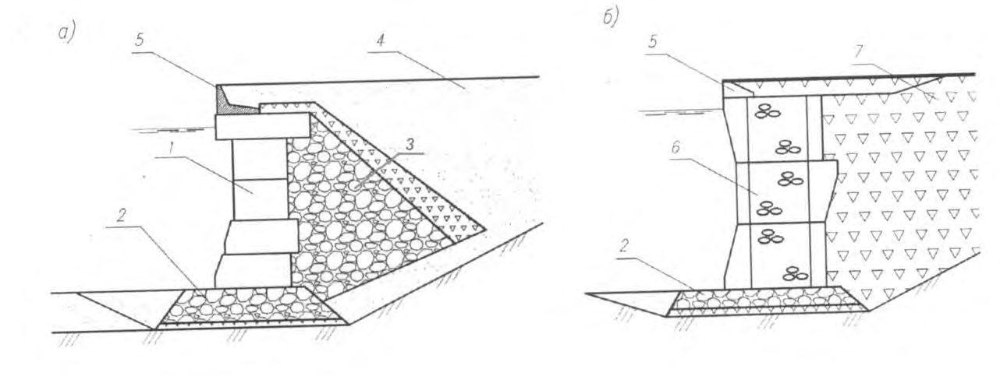
СП 287.1325800.2016 а) - из обыкновенных массивов; б) - из пустотелых массивов; в) - уголкового типа с внешней анкеровкой; г) - уголкового типа, контрфорсное; д) - из железобетонных оболочек большого диаметра; е) - незаанкеренный больверк; ж) - заанкеренный больверк из свай-оболочек; и) - то же, из шпунта; к) - экранированный больверк; 1 - обыкновенный бетонный массив; 2 -каменная постель; 3 - разгрузочная каменная призма; 4 - песчаная засыпка; 5 - надстройка; 6 -пустотелый массив; 7 - засыпка камнем; 8 - лицевая стенка; 9 - фундаментная плита; 10 -анкерная тяга; 11 - анкерная плита (стенка); 12 - контрфорс; 13 - оболочка большого диаметра; 14 - шпунт; 15 - колонна-оболочка; 16 - разгрузочная платформа
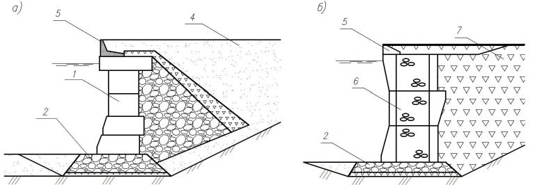
Рисунок 5.1 - Причальные сооружения распорного типа а) - эстакадного типа с высоким свайным ростверком на железобетонных сваях; б) - то же, на сваях-оболочках диаметром не менее 1,2 м или металлических трубах; в) - то же, на опорах в виде свайных кустов с защитой их металлическими или железобетонными оболочками; г) - то же, с задним шпунтом; д) - с передним шпунтом, несущим шпунтом; е) - оторочка; 1 - свая; 2 - верхнее строение; 3 - тыловое сопряжение; 4 - подпричальный откос; 5 - свая-оболочка; 6 - защитная оболочка или короб; 7 - шпунт; 8 - несущий шпунт; 9 - существующее сооружение
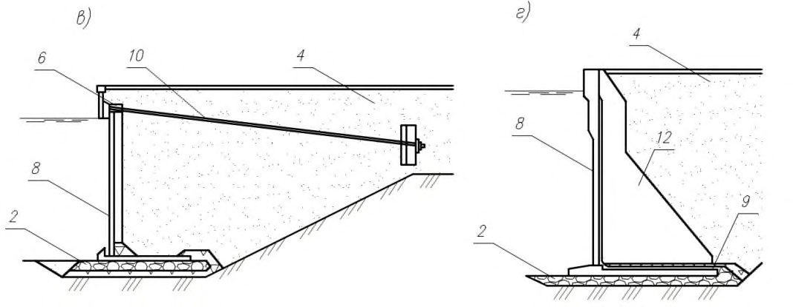
Рисунок 5.2 - Причальные сооружения сквозного типа
СП 287.1325800.2016 а) - узкий пирс на свайном основании; б) - пирс мостового типа на опорах из свайных кустов; в) - то же, на гравитационных опорах; 1 - свая; 2 - верхнее строение; 3 - свайный куст; 4 - гравитационная опора; 5 - каменная постель; 6 - пролетное строение
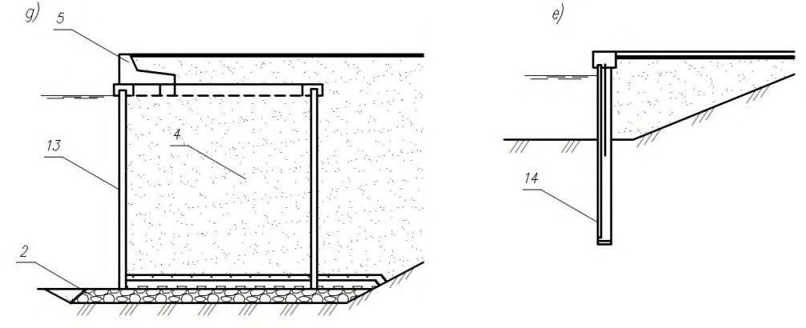
Рисунок 5.3 - Причальные сооружения мостового типа
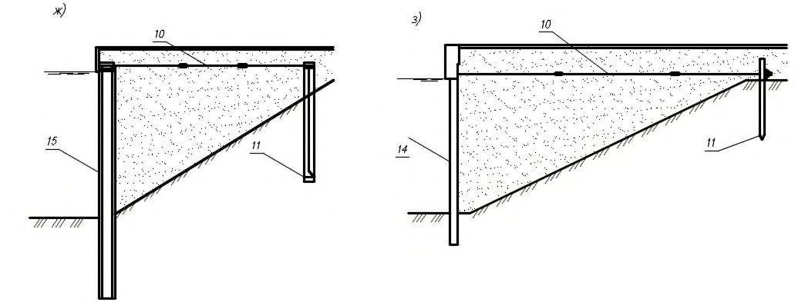
- а) - односвайный гибкий пал; б) - пал с вертикальными опорами из железобетонных свайоболочек; в) - пал с жестким верхним строением и наклонными опорами из металлических труб; 1 - свая; 2 - отбойное устройство; 3 - швартовное устройство; 4 - верхнее строение
Рисунок 5.4 - Палы свайного типа
6Общие конструктивные требования
Расстояния между температурно-усадочными швами (длина секции) следует устанавливать расчетом.
СП 287.1325800.2016 следует определять с учетом СП 38.13330.
Швартовные тумбы следует размещать по осям секции причального сооружения, нормальным к линии кордона, или симметрично этим осям. Конструкцию швартовных тумб следует принимать по ГОСТ 17424. Тыловые швартовные устройства, не связанные с конструкцией причального сооружения, допускается принимать специальной конструкции, не предусмотренной ГОСТ 17424.
В причальных сооружениях мостового типа швартовные тумбы следует располагать на опорах.
По эксплуатационным соображениям в крайних секциях причальных сооружений рекомендуется устанавливать дополнительные швартовные тумбы, по возможности, ближе к оконечности причального сооружения.
Тумбовые массивы следует бетонировать на месте. Допускается закрепление тумб на сборных элементах верхнего строения. Для заанкеренных шпунтовых и уголковых стенок следует проектировать тумбовые узлы с усиленной или дополнительной анкеровкой.
Примечание -В качестве расчетного строительного уровня воды следует принимать средний многолетний приливной уровень моря по 3.4.
Допускается закреплять анкерные тяги в тумбовом массиве выше уровня крепления рядовых тяг.
Допускается в местах тумбовых массивов вместо постановки дополнительных тумбовых тяг увеличивать диаметр тяг по сравнению с диаметром рядовых анкерных тяг.
- г) муфтами.
Нарезные концы звеньев (шпильки) под гаечное крепление или на муфтах следует выполнять из круглой стали большего диаметра, чем диаметр основных звеньев, и приваривать их к последним одним из указанных выше способов.
При определении диаметра шпильки следует исходить из того, что диаметр внутренней резьбы шпильки должен быть не менее диаметра основного ствола тяги.
Допускается применять анкерные тяги из тросов с диаметром проволоки не менее 5 мм при условии их предварительного напряжения до 50 % расчетного усилия в анкерной тяге и соответствующей гидроизоляции.
В тех случаях, когда конструкция сооружения создает препятствие для движения грунтовых вод в сторону акватории, следует устраивать дренажи по всей длине причального фронта, сходящиеся к водопропускным отверстиям в лицевых стенках, приведенные в приложении В.
СП 287.1325800.2016 грунтопроницаемых швов уплотнения, дренажей, каменных постелей, креплений подпричальных откосов и при отсыпке песчаного грунта поверх засыпки из крупнообломочного материала:
- из щебня, гравия и песка - многослойные или однослойные из смесей с подбором фракций и толщины слоя. При этом следует учитывать механический состав грунта засыпки, волновой режим акватории, наличие приливо-отливных колебаний, их амплитуду;
- из нетканых синтетических материалов (фильтрующих полотнищ).
Примечания
1 При наличии в основании постели крупнозернистых грунтов обратные фильтры можно не устраивать, за исключением случаев, когда из-за волновых воздействий возможен вымыв грунта из-под постели.
2 Обратные фильтры из нетканых материалов под каменными постелями допускается применять при условии обеспечения заданного расчетом коэффициента трения между полотнищем и грунтом основания.
При наличии в составе конструкции причала анкерных тяг указанные требования к материалам, за исключением камня, распространяются на верхний слой обратной засыпки, начиная с отметки заложения тяг.
Примечания
1 Требования настоящего пункта не распространяются на ячеистые конструкции из стального шпунта.
2 В необходимых случаях следует предусматривать теплогидроизоляционную защиту бетона-наполнителя, как указано в [10]. в
Таблица 6.1 Толщина железобетонных элементов конструкций сооружения
| Элемент конструкции | Минимальная толщина, мм |
|---|---|
| 1 Железобетонные предварительно напряженные элементы верхнего строения эстакад, лицевые панели уголковых стенок, шпунтовые плоские сваи 2 То же, без предварительного напряжения и | 150 |
| напряженные в особых условиях (воздействие агрессивных сред или ледовых нагрузок) | 200 |
| 3 Сваи-оболочки диаметром 1000 мм и более из предварительно напряженного железобетона | 120 |
| 4 То же, без предварительного напряжения и напряженные в особых условиях (воздействие агрессивных сред или ледовых нагрузок) | 150 |
- для рабочей стержневой арматуры - не менее 60 мм;
- для распределительной арматуры и хомутов - не менее 40 мм.
Для рабочей стержневой арматуры, расположенной у поверхностей железобетонных элементов, соприкасающихся с грунтовой засыпкой, а также для рабочей стержневой арматуры центрифугированных железобетонных элементов наименьшая толщина защитного слоя может быть снижена до 40 мм.
СП 287.1325800.2016 условиями изготовления, транспортирования и монтажа.
При транспортировании элементов конструкций по железной дороге габариты элемента должны соответствовать требованиям ГОСТ 9238.
В проекте следует рассматривать возможность перевозки сборных железобетонных элементов в вертикальном положении с использованием специальных кассет.
В случаях, когда это допускается условиями подъема и транспортирования, следует предусматривать укрупнение элементов, изготовляемых заводским способом, путем предварительной сборки и омоноличивания на припостроечных площадках до установки в сооружение.
Для устройства в сборных элементах монтажных отверстий для пропуска болтов, рымов, анкерных тяг и т. п. необходимо предусматривать установку закладных деталей в виде трубок и коробок.
Схему расположения захватных устройств следует назначать таким образом, чтобы усилия в сечениях рабочих элементов в процессе транспортирования и монтажа
СП 287.1325800.2016 были меньше, чем при эксплуатации.
Допускается изготовлять петлевые стыки из арматуры периодического профиля с диаметром перегиба стержней не менее 8 d.
Диаметр оправки для арматуры допускается устанавливать в соответствии с техническими условиями на конкретный вид арматуры.
В проектах следует указывать, что технология сварки элементов должна соответствовать СП 70.13330, а качество сварных арматурных изделий и соединений ГОСТ 10922.
Поперечное армирование на концевых участках длиной 1,0 м железобетонных свай следует выполнять в соответствии с требованиями СП 63.13330 к элементам с
СП 287.1325800.2016 косвенным армированием, работающим на внецентренное сжатие. В средней части свай шаг поперечной арматуры принимать из расчета по прочности или конструктивно, но не более 200 мм.
Крановые и железнодорожные рельсы при размещении на верхнем строении причальных сооружений эстакадного безбалластного типа следует крепить к верхнему строению ростверка.
Крановые пути, размещаемые на засыпке, следует, как правило, устраивать на свайном основании во всех случаях, когда это практически возможно, а железнодорожные - на шпальном основании.
Рекомендуется конструкция кранового пути, при которой рельс с закрепленными шпалами (балочного или плиточного типа) устанавливается в железобетонное корыто на слой щебня мелких фракций из изверженных пород с высокой маркой по прочности, что позволяет проводить в короткое время рихтовку пути за счет подсыпки и выравнивания балластного щебня в корыте под секцией рельса, поднятой портальным краном.
Укладка рельсов крановых путей приведена в [19].
На слабых грунтовых основаниях допускается предусматривать жесткие поперечные связи между балками крановых путей.
7Общие положения расчета причальных сооружений
Расчеты морских причальных сооружений, а также их конструктивных элементов и оснований следует выполнять в соответствии с требованиями ГОСТ 27751 по двум группам предельных состояний:
- первая группа - потеря несущей способности и/или полная непригодность к эксплуатации конструкций или оснований;
- вторая группа - непригодность к нормальной эксплуатации.
Примечание - Под нормальной эксплуатацией подразумевается эксплуатация (без ограничений) в соответствии с предусмотренными в нормативных документах или задании на проектирование технологическими или иными условиями.
По первой группе предельных состояний (по несущей способности) проводятся расчеты прочности и устойчивости: а) общая устойчивость сооружений и подпричальных откосов в соответствии с СП 23.13330 и разделом 9; б) устойчивость по схеме плоского сдвига; в) устойчивость на опрокидывание (поворот) вокруг ребра вращения для причальных сооружений гравитационного типа - в соответствии с СП 23.13330.
В случаях, когда по основанию гравитационной стенки или по швам массивовой кладки обеспечено приложение равнодействующей нагрузок в пределах ядра сечения, расчет на опрокидывание вокруг ребра вращения не проводят; г) устойчивость на поворот лицевой стенки больверков относительно точки крепления анкера при свободном опирании низа стенки или частичном ее защемлении в соответствии с указаниями раздела 11;
СП 287.1325800.2016 д) устойчивость массива грунта, находящегося перед анкерными стенками или анкерными плитами и обеспечивающего анкерное крепление конструкции, -в соответствии с требованиями раздела 11; е) несущая способность (прочность) конструктивных элементов причальных сооружений и их оснований - в соответствии с требованиями настоящего свода правил, а также с указаниями СП 16.13330, СП 22.13330, СП 23.13330, СП 41.13330, СП 63.13330 и СП 64.13330; ж) устойчивость формы конструкции; и) несущая способность свай и свай-оболочек на воздействие вертикальных и горизонтальных нагрузок - в соответствии с требованиями СП 24.13330 и настоящего свода правил; к) конструкции на температурные и влажностные воздействия (на влияние внешней среды) - в соответствии с СП 41.13330.
По второй группе предельных состояний (по деформациям и трещиностойкости) рассчитываются: л) вертикальные осадки, горизонтальные перемещения и углы поворота - в соответствии с СП 23.13330; допускаемые прогибы пролетных строений железобетонных конструкций - в соответствии с СП 41.13330, а стальных конструкций - по СП 16.13330 и СП 35.13330; м) железобетонные конструкции по образованию трещин - в соответствии с СП 63.13330; н) железобетонные конструкции по раскрытию и закрытию (зажатию) нормальных и наклонных трещин - в соответствии с СП 63.13330 и СП 41.13330.
Примечание - Кроме указанных расчетов в необходимых случаях следует выполнить гидравлические, фильтрационные, термические и температурные расчеты, предусмотренные соответствующими нормативными документами на проектирование конструкций и сооружений.
Расчеты конструкций причальных сооружений и их оснований по второй группе предельных состояний (по деформациям, перемещениям) допускается не проводить в тех случаях, когда практикой длительной эксплуатации сооружений в сходных условиях установлено, что возникающие деформации не являются опасными для условий нормальной эксплуатации сооружений (например, расчет гравитационных причальных сооружений по осадкам допускается не выполнять, но требуется проверка положения равнодействующей нагрузок относительно ядра сечения основания).
При расчетах гидротехнических сооружений, их конструкций и оснований в соответствии с требованиями СП 58.13330 необходимо соблюдать следующее условие, обеспечивающее недопущение наступления предельных состояний:
где lс - коэффициент сочетания нагрузок,
F - расчетное значение обобщенного силового воздействия (сила, момент, напряжение), деформации или другого параметра, по которому проводится оценка предельного состояния, определенное с учетом коэффициента надежности по нагрузке γf ,; yc - коэффициент условий работы, учитывающий тип сооружения, конструкции или основания, вид материала; γn - коэффициент надежности по ответственности сооружения в зависимости от его класса;
R - расчетное значение обобщенной несущей способности, деформации или другого параметра (при расчетах по первой группе предельных состояний - расчетное значение, при расчетах по второй группе предельных состояний - нормативное значение), устанавливаемого нормативными документами на проектирование отдельных видов гидротехнических сооружений, определенное с учетом коэффициентов надежности по материалу γm или грунту γg и условий работы γc .
Коэффициенты сочетаний нагрузок, надежности и условий работы принимают по таблице 7.1
Таблица 7.1 Коэффициенты сочетания нагрузок, надежности и условий работы
СП 287.1325800.2016
| Первая группа предельных состояний во времени | Первая группа предельных состояний во времени | Первая группа предельных состояний во времени | Вторая группа предельных состояний во времени | Вторая группа предельных состояний во времени | Вторая группа предельных состояний во времени | |
|---|---|---|---|---|---|---|
| Наименование коэффициента | строительства и ремонта | эксплуатации при сочетании нагрузок и воздействий | эксплуатации при сочетании нагрузок и воздействий | строительства и ремонта | эксплуатации при сочетании нагрузок и воздействий | эксплуатации при сочетании нагрузок и воздействий |
| строительства и ремонта | основном | особом | строительства и ремонта | основном | особом | |
| Коэффициент соче- тания нагрузок lс | 0,95 | 1,00 | 0,95 1) 0,90 2) 0,85 3) | 1,00 | ||
| Коэффициент надеж- ности по ответствен- ности сооружения, принимаемый для класса сооружений, γ n : I | 1,25 | 1,00 4) | ||||
| II | 1,00 4) | |||||
| 1,20 1,15 | 1,00 4) | |||||
| III IV | 1,00 4) | |||||
| 1,10 | 1,00 4) | |||||
| Коэффициент надежности по нагрузке γ f | СП 58.13330 и | СП 20.13330 | 1,00 5) | |||
| Коэффициент надежности по материалу γ m | Устанавливаются нормативными проектирование | документами | на | 1,00 5) | ||
| Коэффициент надежности по грунту γ g | конструкций и | отдельных оснований | 1,00 5) | |||
| Коэффициент условий работы γ с | Для причальных и берегоукрепительных сооружений - 1,15; для анкерных тяг - для откосов - 1,00 | 1,00; | 1,00 5) |
Значения нагрузок следует определять в соответствии с указаниями СП 58.13330,
СП 38.13330, СП 20.13330, раздела 8 и как указано в [15].
- по первой группе предельных состояний - I и с I ;
- по второй группе предельных состояний - II и с II ( - угол внутреннего трения грунта; с - сцепление).
Указанные характеристики следует принимать по материалам инженерногеологических изысканий и исследований грунтов, выполненных в соответствии с требованиями СП 23.13330 и ГОСТ 20522.
8Нагрузки и воздействия
Перечень нагрузок и воздействий на гидротехнические сооружения приведен в СП 58.13330.
При расчетах причальных сооружений необходимо учитывать следующие нагрузки и воздействия:
- а) постоянные нагрузки и воздействия:
- собственный вес элементов сооружения;
- вес постоянного технологического оборудования (складов, эстакад и др.), месторасположение которого на сооружении не меняется в процессе эксплуатации;
- вес грунта;
- боковое давление грунта с учетом постоянных нагрузок, расположенных на его поверхности;
- нагрузки от предварительного напряжения конструкций;
- б) временные длительные нагрузки и воздействия:
- нагрузки от перегрузочных и транспортных средств и складируемых грузов, а также другие нагрузки, связанные с эксплуатацией сооружения;
- боковое давление грунта от временных нагрузок на территории причала;
СП 287.1325800.2016
- фильтрационное давление воды (в том числе гидростатическое) при нормальной работе дренажных устройств;
- воздействия неравномерных деформаций основания, не сопровождающихся изменением структуры грунта;
- воздействия усадки и ползучести материалов и грунтов основания;
- ветровые и снеговые нагрузки;
- в) кратковременные нагрузки и воздействия:
- нагрузки от воздействия волн и течений;
- нагрузки от воздействия льда (ледяного покрова, торосов и т. п.);
- нагрузки от судов (вес, навал, швартовные и ударные);
- нагрузки, действующие в строительный период;
- температурно-климатические воздействия;
- г) особые нагрузки и воздействия:
- дополнительное фильтрационное давление воды при нарушении нормальной работы противофильтрационных и дренажных устройств;
- сейсмические нагрузки;
- динамические нагрузки от взрывов;
- воздействия неравномерных деформаций основания, сопровождающихся изменением структуры и свойств грунта;
- гидродинамическое и взвешивающее воздействия, обусловленные цунами и тайфунами.
Нагрузки и воздействия, подлежащие учету при расчетах отдельных видов причальных сооружений, их конструкций и оснований, следует принимать по СП 20.13330, СП 38.13330 и настоящему своду правил.
- основное сочетание включает в себя постоянные, временные длительные нагрузки и воздействия и возможные кратковременные нагрузки;
- особое сочетание включает в себя постоянные, временные длительные нагрузки и воздействия, возможные кратковременные и одну из возможных особых нагрузок.
Для основных сочетаний необходимо использовать значения коэффициентов сочетаний кратковременных нагрузок в соответствии с СП 20.13330.
Нагрузки и воздействия следует принимать в наиболее неблагоприятных, но реальных для рассматриваемого случая сочетаниях отдельно для строительного и эксплуатационного периодов и расчетного ремонтного случая.
Любая временная нагрузка не вводится в расчетное сочетание, если она улучшает работу сооружения.
Сочетания нагрузок в период строительства и ремонта следует назначать с учетом принятой технологии производства работ (состава, последовательности и режимов выполнения технологических операций).
При расчете конструкций причальных сооружений и их оснований на особое сочетание сейсмических нагрузок следует учитывать требования СП 14.13330.
Удельный вес грунта в зависимости от зоны его расположения и влажности определяется:
- выше расчетного уровня воды для состояния естественной влажности по данным инженерно-геологических изысканий;
- под водой с учетом полного взвешивания по формуле
где γ𝑠 - удельный вес частиц грунта, кН/м³ ; γ𝑤 - удельный вес воды, кН/м³ ; е - коэффициент пористости в естественном состоянии.
При наличии обоснованных данных допускается вводить частичное взвешивание в зоне ниже уровня дна для глинистых грунтов ограниченной влажности при отсутствии в них фильтрующих прослоек и линз.
Вес грунта засыпки пазух, каменной, щебеночной или гравийной постели определяется в зависимости от заданной плотности и влажности.
Рекомендации по определению положения расчетной плоскости приведены в разделах 10-14.
СП 287.1325800.2016
Нагрузки от кранов и железнодорожных составов следует принимать равномерно распределенными как вдоль пути, так и по ширине подкрановых балок или длине шпал.
Для распорных конструкций сосредоточенную нагрузку F к от кранов допускается заменять эквивалентной равномерно распределенной нагрузкой q э (рисунок 8.1, а).
При этом следует учитывать нагрузку только от прикордонной опоры крана, принимая нагрузку от тыловой опоры равной равномерно распределенной от складирования грузов в этой зоне.
Эквивалентную равномерно распределенную нагрузку 𝑞э по ширине подкрановых балок или длине шпалы допускается определять по формуле
где 𝐹 к - максимальная нагрузка от группы сосредоточенных сил при эксплуатации одиночных или сближенных кранов, возможная по технологическим условиям их работы, кН; F к = F к i ; b - ширина подкрановой балки или длина шпалы, м; l - длина полосы распределения нагрузки F к вдоль линии кордона причала, м, определяемая в соответствии со схемами, приведенными на рисунке 8.1, б, в.
Для одиночной опоры крана (рисунок 8.1, б)
где l к - база тележки, м;
- угол внутреннего трения грунта засыпки, град; h - зона распределения нагрузки F к, м;
здесь a - расстояние от линии кордона до оси подкранового пути, м.
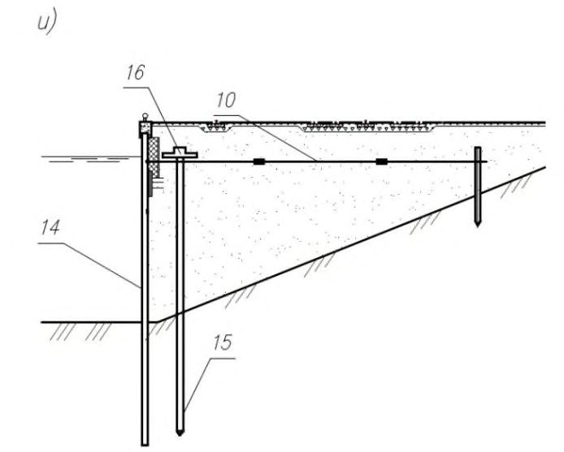
а), б) - схемы сосредоточенной нагрузки от ноги крана; в) - схема нагрузки от сближенных кранов φ - угол внутреннего трения грунта засыпки, град; m - база тележки, м; λа коэффициент горизонтальной составляющей активного давления грунта; γ - объемная масса грунта; hi - высота i -го слоя грунта с неизменными физико-механическими характеристиками
Примечание - См. также обозначения в формулах (8.2)-(8.5)
Рисунок 8.1 - Схемы к определению нагрузок от кранов
Для сближенных опор кранов (рисунок 8.1, в), когда a к < 2 h tg + 1,
где 𝑎к - расстояние между тележками, м.
Максимальная ордината р ф эпюры нагрузок определяется по формуле
СП 287.1325800.2016 где h - разность уровней за и перед сооружением, м.
Нулевая ордината p 0 эпюры нагрузок принимается для шпунтовых стенок на уровне подошвы стенки, для сплошного свайного ряда -на уровне подошвы уплотняющих (омоноличивающих) швы устройств.
Фильтрационное давление воды не учитывается при устройстве дренажных систем, исключающих образование подпора, или в сооружениях, имеющих в основании каменную или щебеночную постель.
При значительном и интенсивном понижении уровня воды в акватории и малой проницаемости основания при определении веса грунта в зоне понижения следует принимать удельный вес грунта, как для грунта с учетом заполнения пор водой.
Нагрузку от волнового воздействия допускается не учитывать при высоте исходной волны у сооружения менее 1 м.
При этом интенсивность волнового давления (интерферированной, скользящей, косоподходящей волны) при подходе ложбины волны к стенке, учитывая скорость колебания уровня за сооружением, допускается определять с коэффициентом уменьшения 0,5.
- от ледяных полей;
- сплошного ледяного покрова при его температурном расширении;
- торосов, заторов, зажоров;
- примерзшего к сооружению ледяного покрова при изменении уровня воды.
Ледовые нагрузки следует определять с учетом требований СП 38.13330.
Нагрузки от примерзшего к сооружению ледяного покрова при изменении уровня воды допускается учитывать при расчете сооружений только в особо суровых природноклиматических условиях при специальном обосновании.
При этом следует учитывать:
- нагрузки от навала судна при подходе к сооружению;
- нагрузки от навала пришвартованного судна;
- нагрузки от натяжения швартовов.
Изменение средних температур и перепады в теплое и холодное времена года для элементов конструкций следует определять на основе теплотехнических расчетов.
СП 287.1325800.2016
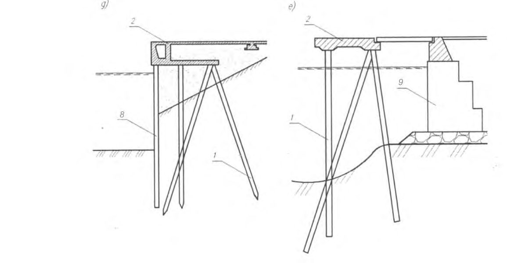
Рисунок 8.2 - Схемы к определению фильтрационного давления воды
Коэффициент постели с z принимается линейно возрастающим с глубиной
где k - коэффициент пропорциональности упругих свойств грунта, кН/м 4 , принимаемый по таблице 8.1; z - текущая координата по высоте стенки (глубина расположения сечения сваи в грунте), для которой определяется коэффициент постели, по отношению к поверхности грунта, м.
Таблица 8.1 Коэффициенты пропорциональности упругих свойств грунта
| Наименование, вид грунта и его характеристика | k , кН/м 4 |
|---|---|
| Текучепластичные глины и суглинки (0,75 < I L 1,00) | 500-2000 |
| Мягкопластичные глины и суглинки (0,50 < I L 0,75), пластичные супеси (0 < I L 1,00), пылеватые пески (0,60 < e < 0,80) | 2000-4000 |
| Тугопластичные и полутвердые глины и суглинки (0< I L 0,50), твердые супеси ( I L < 0) и мелкие пески (0,60 < е 0,75) и средней крупности (0,55 < е 0,70) | 4000-6000 |
| Твердые глины и суглинки ( I L < 0), крупные пески (0,55 < е 0,70) | 6000-10000 |
| Гравелистые пески (0,55 < е 0,70), гравий и галька с песчаным заполнением | 10000-20000 |
СП 287.1325800.2016
Примечания
- 1 Меньшие значения коэффициента k соответствуют более высоким значениям показателя текучести IL глинистых и коэффициентов пористости песчаных грунтов, указанных в скобках, а большие значения коэффициента k - более низким значениям IL и е соответственно.
Для грунта с промежуточными значениями характеристик IL и е значения коэффициента k определяются интерполяцией.
- 2 Коэффициенты k для плотных песков ( е 0,55) принимают на 30 % выше, чем наибольшие значения, указанные для данного вида грунта.
- 3 Коэффициенты k для насыпных грунтов принимают на 30% ниже, чем указанные в настоящей таблице значения для данного вида грунта.
9Расчет общей устойчивости
9.1Основные положения расчета
где lс , c , n -то же, что в 7.4;
F и R расчетные значения соответственно обобщенных сдвигающих сил и сил предельного сопротивления или моментов сил, стремящихся сдвинуть (повернуть) и удержать систему «сооружение-основание».
- на плоский сдвиг по каменной постели или вместе с постелью;
- на опрокидывание вокруг переднего ребра;
- на поворот лицевой стенки больверка вокруг точки крепления анкера;
- на сдвиг грунта засыпки ячеистых сооружений по вертикальной плоскости;
- на анкерующую способность массива грунта перед анкерными плитами или стенками;
- по схеме глубинного или смешанного сдвига по профилю поверхности
СП 287.1325800.2016 скольжения, ограничивающему область предельного состояния грунта основания, либо по круглоцилиндрическим или ломаным (фиксированным) поверхностям скольжения.
В условиях плоской задачи расчеты проводят на 1 м длины сооружения, в условиях пространственной задачи - на всю длину сооружения или ограниченного участка.
При решении пространственной задачи к удерживающим силам необходимо добавить силы трения и сцепления, реализованные по торцевым сечениям сдвигаемого объема грунта основания. Значения равнодействующих сил трения при этом допускается определять как произведение равнодействующих горизонтальных составляющих активного давления грунта по указанным сечениям на коэффициент трения tg , а сил сцепления - как произведение удельного сцепления на соответствующие площади участков торцевого сечения.
Расчеты устойчивости грунта засыпки ячеистых сооружений на сдвиг по вертикальной плоскости выполняются по указаниям раздела 14.
СП 287.1325800.2016
где Мt - сумма моментов сил, вызывающих сдвиг сооружения относительно выбранного центра круглоцилиндрической поверхности, кН∙м;
Мr - сумма моментов сил, удерживающих сооружение от сдвига относительно выбранного центра круглоцилиндрической поверхности, кН∙м;
dc - дополнительный коэффициент условий работы, независимый от класса сооружения и работы, принимаемый:
- для причальных сооружений dc = 1,05 (что соответствует запасу устойчивости 0,95 по методу Крея-Терцаги для сооружений класса III);
- для откосов dc = 1,1 (что соответствует запасу устойчивости 1,05 по методу Крея-Терцаги для сооружений класса III).
- если поверхность скольжения проходит по контакту двух слоев грунта, в расчете следует принять характеристики более слабого слоя;
- в случае расположения в основании рассчитываемого вертикального элемента разнородных грунтов расчет следует выполнять с учетом средневзвешенных характеристик;
- при расположении в пределах сдвигаемой части основания временных нагрузок в виде штабеля навалочного груза поверхность скольжения выше отметки территории причала следует принять по плоскости обрушения штабеля.
9.2Определение расположения поверхностей скольжения
при глубинном сдвиге
- для сооружений типа больверк - проходящие через нижнюю точку лицевой стенки шпунта (рисунок 9.1, а);
- для гравитационных сооружений - проходящие через тыловую грань подошвы стенки или через точку пересечения подошвы постели с линией, проведенной из тыловой грани подошвы стенки под углом 45° от вертикали в сторону берега;
- для сооружений эстакадного типа на оболочках большого диаметра при однородном основании - проходящие по подошве оболочек или в зависимости от конструкции элемента сопряжения эстакады с берегом при гравитационной стенке через тыловую грань стенки, при заднем шпунте - через нижнюю точку шпунта, при уголковой стенке - через нижнюю тыловую грань стенки или по подошве оболочек, для сооружений с высоким свайным ростверком - проходящие по нижним точкам заднего или переднего шпунтов, а в отдельных случаях - по точке скопления наибольшего числа свай.
где r - радиус поверхности скольжения, м;
- угол внутреннего трения грунта по поверхности скольжения под прикордонным участком, град; а - расстояние от вертикали, проведенной от центра поверхности скольжения, до лицевой стенки причала, м.
В случае расположения в основании причалов слабого грунта временная нагрузка на территории причала учитывается полностью, то есть аq= 0.
- в случае расположения в нижней части основания больверка и свайных сооружений слабых грунтов - поверхности АБК, АБВГ, АБДВГ (рисунок 9.1, в); в этом случае необходима также проверка по поверхностям АБСВГ или АБСДВГ (рисунок 9.1, в);
СП 287.1325800.2016
- для сооружений гравитационного типа в зависимости от расположения слабой прослойки у подошвы стенки - проходящие через точки А, Б, В, Д, Е с выходом к территории причала по слабому слою (рисунок 9.1,г) и А, Б, В, Г, включающие в себя призму обрушения КВГ;
- для опор гравитационного типа и ячеистых палов - проходящие через точки А, Б, В, Г (рисунок 9.1, д). а), б), в) - сооружение типа больверк; г) - гравитационная стенка; д) - опоры гравитационного типа и ячеистые
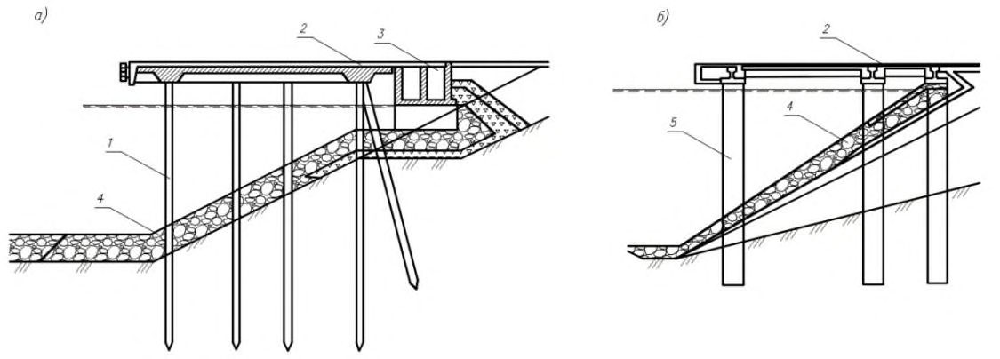
Рисунок 9.1 - Расположение поверхностей скольжения
- перед сооружением типа подпорных стенок - под углом отпора грунта (рисунок 9.1, б, в, г);
- в тыловой части со стороны берега -под углом распора грунта (рисунок 9.1, б, в, г);
- для опор гравитационного типа и ячеистых палов в сторону приложения горизонтальной сосредоточенной нагрузки -под углом отпора грунта, а в противоположную сторону - под углом распора грунта (рисунок 9.1, б, д).
Углы наклона остальных плоскостей, расположенные между призмами отпора и распора, определяются по отметкам нижних точек лицевой стенки больверка и анкерных опор, а в случае гравитационных стенок - по наклону слабых прослоек.
В случае если угол наклона участка ломаной поверхности скольжения меньше угла внутреннего трения грунта, временная равномерно распределенная нагрузка на этом участке принимается равной нулю.
Если в основании одного элемента располагаются грунты с различными характеристиками, следует принимать средневзвешенное значение характеристик в основании таких элементов.
10Проектирование причальных сооружений гравитационного типа 10.1 Основные конструктивные требования
- уголковые стенки контрфорсного типа;
- уголковые стенки с внешней и внутренней анкеровками;
- стенки из массивовой кладки с массивами верхнего курса, имеющими разгружающий консольный свес;
- стенки из массивов столбовой кладки массой до 300 т;
- стенки из пустотелых бетонных массивов столбовой кладки;
СП 287.1325800.2016
- стенки из массивовой кладки равной массы;
- стенки из массивов-гигантов;
- стенки из оболочек большого диаметра.
Возрастание нагрузок на основание в процессе возведения причальных сооружений не должно вызывать неравномерных осадок, раскрытия швов кладки и разрушения конструкции.
Примечание - Под неблагоприятными геологическими условиями, особенно для сооружений из массивовой кладки, следует понимать наличие в основании сооружения: водонасыщенных глинистых грунтов пластичной и тугопластичной консистенции при степени влажности Sr ≥ 0,80 с расчетным сопротивлением R < 300 кПа и модулем деформации Еn 15 МПа.
Дополнительными характеристиками для указанных грунтов являются: малая плотность (коэффициент пористости е 0,75), значительная сжимаемость (коэффициент сжимаемости а > 0,05 см/кгс); малый и неодинаковый во всех направлениях коэффициент фильтрации k ф < 0,001 м/сут; относительно малая прочность (показатель сопротивления сдвигу < 56 кПа при расчетных сдвиговых показателях по трению < 20° и сцеплению С < 20 кПа).
При возведении сооружения на глинистых грунтах, подверженных реологическим изменениям, следует учитывать длительную прочность этих грунтов.
Длина секции определяется в зависимости от геологического строения основания, типа конструкции, высоты стенки и толщины постели по таблице 10.1.
Таблица 10.1 Длина секции в зависимости от типа гравитационного сооружения
| Тип гравитационного сооружения | Уголковая стенка | Стенка из массивовой кладки | Стенка из пустотелых массивов |
|---|---|---|---|
| Рациональная длина секции, м | 20-25 | 25-40 | 20-35 |
Примечания
1 Для скальных оснований при толщине постели до 1,5 м длина секции принимается по верхнему пределу, при большей толщине постели - сокращается на 5 м.
2 На нескальных основаниях при высоте стенки до 13 м длина секции принимается по нижнему пределу, при большей высоте - увеличивается на 5 м от нижнего предела.
Длину секции гравитационного сооружения следует назначать кратной расстоянию между тумбовыми массивами согласно СП 38.13330.
СП 287.1325800.2016
Увеличение длины секции допускается при специальном обосновании в проекте.
Разбивку стенки на секции следует проводить с учетом обязательного устройства швов в местах возможной резкой разницы в осадках отдельных частей сооружения.
Если основание сооружения сложено из скальных грунтов, каменная постель не устраивается, а в основании сооружения укладывается выравнивающий слой в виде каменной наброски толщиной не менее 0,5 м.
Примечания
1 Для уголковых стенок с внешней анкеровкой допускается устраивать постель из гравия или щебня при условии ее устойчивости на размывающие воздействия.
2 При скальных основаниях в обоснованных случаях вместо каменной наброски допускается применение выравнивающей щебеночно-гравийной подушки или выравнивающего слоя бетона в мешках толщиной не менее 0,25 м.
Постели большей толщины допускаются при условии технико-экономического обоснования.
При толщине постели более 1,5 м в конструкциях из пустотелых бетонных массивов следует уплотнять постель подводным вибрированием.
Штрабы между пустотелыми массивами следует заполнять щебнем.
Засыпку внутренних полостей пустотелых массивов следует проводить щебнем или камнем массой от 15 до 60 кг; допускается применение песчаного грунта при условии обеспечения грунтонепроницаемости горизонтальных швов и устройства над каменной постелью контрфильтра из щебня.
Требования к качеству материала каменной отсыпки устанавливают в соответствии с 4.35. При волновых воздействиях массу камня для отсыпки постели
СП 287.1325800.2016 следует определять с учетом этих воздействий согласно СП 38.13330.
Обратный фильтр каменных постелей на глинистых грунтах основания должен отсыпаться из крупного щебня размером 70-100 мм.
Требования к качеству материала обратных фильтров устанавливаются в соответствии с указаниями 4.36.
Расчетный строительный уровень воды следует принимать в соответствии с примечанием к 6.5.
В пределах секций контрфорсные блоки и лицевые панели следует омоноличивать железобетонной надстройкой.
Все элементы, составляющие блок конструкции, в местах стыков должны иметь выпуски арматуры и закладные детали. Стыки элементов следует омоноличивать.
Допускается применять лицевые панели из стального шпунта.
Следует также применять навеску по швам фильтрующих полотнищ из нетканых синтетических материалов.
Высота порога и отметка расположения шарнирных опор должны обеспечивать
СП 287.1325800.2016 надежное опирание при возможной разности осадок лицевой и фундаментной плит в результате деформации постели.
Монолитность секций в первом случае обеспечивается перевязкой швов и железобетонной надстройкой, во втором - устройством железобетонной надстройки.
Примечание - Под обыкновенными массивами понимаются бетонные монолиты, имеющие форму прямоугольного параллелепипеда, в том числе со скошенными гранями и срезанными ребрами, под пустотелыми массивами - бетонные ящики без днища с толщиной стен не менее 500 мм.
Для причальных сооружений с глубиной у кордона до 11,5 м рекомендуется
СП 287.1325800.2016 применение массивов массой до 100 т, а при больших глубинах - массой более 100 т.
Для замыкания курсов при обеспечении правильной перевязки швов следует применять массивы массой меньше 100 т.
Для массивов верхнего курса, с консольным свесом, устанавливаемых в зоне переменных уровней воды, класс и марку бетона принимают с учетом обеспечения прочности и морозостойкости [11].
Отношение наибольшего размера массива в плане к его высоте должно быть:
- в кладке по курсам с перевязкой швов - не более 3 для глубины у причала менее 13 м и не более 2,5 - для глубин у причала 13,0 м и более;
- в столбовой кладке без перевязки швов - не более 4 для глубин у причала менее 13 м.
Отношение наименьшего размера массива в плане к его высоте должно быть в кладке по курсам с перевязкой швов не менее 1,0, а для массивов, замыкающих курсы, не менее 0,75.
Требования настоящего пункта не распространяются на массивы верхнего курса, если они используются в качестве разгрузочных консолей стенки. В этом случае возможное применение массивов относительно меньшей высоты компенсируется повышением класса бетона (см. 10.1.25). При надлежащем обосновании допускается конструктивное армирование массивов нижнего курса.
Рекомендуется в конструкции причального сооружения из пустотелых бетонных массивов применять один тип массива. Рекомендуемые типы пустотелых массивов приведены на рисунке 10.1.
Отношение наибольшего размера массива в плане к его высоте в столбовой кладке пустотелых массивов следует назначать не более 2.
Минимальную толщину стенки пустотелого бетонного массива следует принимать не менее 500 мм, а также в соответствии с условиями его изготовления и требованиями долговечности. Окончательно значение толщины устанавливают расчетом прочности массива.
Для фиксирования мест концентрации напряжений по горизонтальным поверхностям пустотелых массивов следует предусматривать установку упругих прокладок из антисептированных досок.
При обосновании допускается конструктивное армирование пустотелых бетонных массивов.
Монтажные отверстия (не менее трех) рекомендуется устраивать в боковых стенках пустотелых массивов, осуществляя их подъем тросами, в том числе с применением траверсы.
Рисунок 10.1 - Типы пустотелых массивов
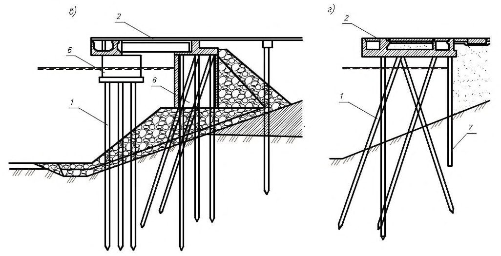
- 0,9 - в поперечном разрезе кладки стенки;
- 0,7 - в продольном разрезе и в плане каждого курса кладки;
- 0,9 - в вертикальных сечениях отдельно стоящих опор причальных сооружений.
Перекрытие швов допускается уменьшить до 0,5 м, но число таких перекрытий швов не должно превышать 10 % их общего числа или в продольном разрезе, или в плане каждого курса.
СП 287.1325800.2016 правильной кладки, а также между секциями следует принимать: а) 20 мм - в кладке с перевязкой швов; б) 40 мм - в столбовой кладке.
Ширину вертикальных осадочных швов между секциями следует принимать равной 50 мм.
В зоне переменного уровня воды и на участках интенсивного истирающего воздействия наносов толщину оболочки следует увеличивать на 100 мм.
Конструктивные особенности причальных сооружениий из оболочек большого диаметра изложены в [25], [26], [29].
10.2Общие положения расчета
где а -расстояние от передней грани сооружения до точки приложения равнодействующей нагрузок, м:
здесь Мr - суммарный момент от удерживающих сил относительно переднего ребра вращения, кН∙м;
М t - суммарный момент от опрокидывающих сил относительно переднего ребра вращения, кН∙м;
G - сумма вертикальных сил, действующих на подошву сооружения, кН; b - ширина основания сооружения, м; е - эксцентриситет приложения равнодействующей нагрузок, м, определяемый по формуле
Допускается несоблюдение условий 10.1.1-10.1.2 (за исключением конструкций из кладки пустотелых бетонных массивов) при увеличенном эксцентриситете для сооружений на скальном основании до е 0,25 b , на основаниях из твердых и плотных или
СП 287.1325800.2016 грунтов только в случае расчета на особые сочетания нагрузок и воздействий до е 0,2 b .
Примечание - К удерживающим следует относить вертикальные (массовые) силы и вертикальную составляющую активного давления грунта, определенную с учетом временных нагрузок.
где S - совместная деформация основания и сооружения (осадка Sr , горизонтальное перемещение Sh , крен i , поворот вокруг вертикальной оси и др.), определяемая расчетом согласно СП 23.13330, м;
Su -предельное значение совместной деформации основания и сооружения, устанавливаемое по СП 23.13330 и указаниям проекта, м.
Расчет оснований причальных сооружений по второй группе предельных состояний (по деформациям) следует выполнять на основные сочетания действующих нагрузок и воздействий.
В отдельных случаях допускается не проводить проверку деформаций по условию (10.5), если средние значения давления под подошвой не превышают расчетного сопротивления грунта основания R , определенного в соответствии со СП 22.13330.
где max - максимальное краевое напряжение на контакте каменной постели и подошвы сооружения или на контакте грунта основания и подошвы каменной постели, определяемое в соответствии с 10.2.5 и 10.2.6, кПа;
R -расчетное сопротивление каменной постели или грунта, определяемое СП 22.13330 с учетом данных инженерно-геологических изысканий, кПа. по
где max и min - расчетные максимальные и минимальные краевые нормальные напряжения в каменной постели на контакте с основанием сооружения, кПа;
G - сумма расчетных вертикальных сил, действующих на подошву сооружения.
При несоблюдении в пределах указаний 10.2.2 условий (10.1) и (10.2) (рисунок 10.2, б) краевые напряжения определяют по формуле
Проверку прочности каменной постели проводят по условию (10.6), где R -расчетное сопротивление каменной постели, принимаемое в зависимости от марочной прочности камня с учетом его водонасыщенности. При расчете прочности каменной постели, кПа, допускается пользоваться рекомендациями СП 22.13330.
Примечание - При отсутствии инженерно-геологических данных допускается принимать расчетное сопротивление постели R:
- для основного сочетания силовых воздействий - 0,4-0,6 МПа;
- для особого - 0,55-0,85 МПа.
СП 287.1325800.2016
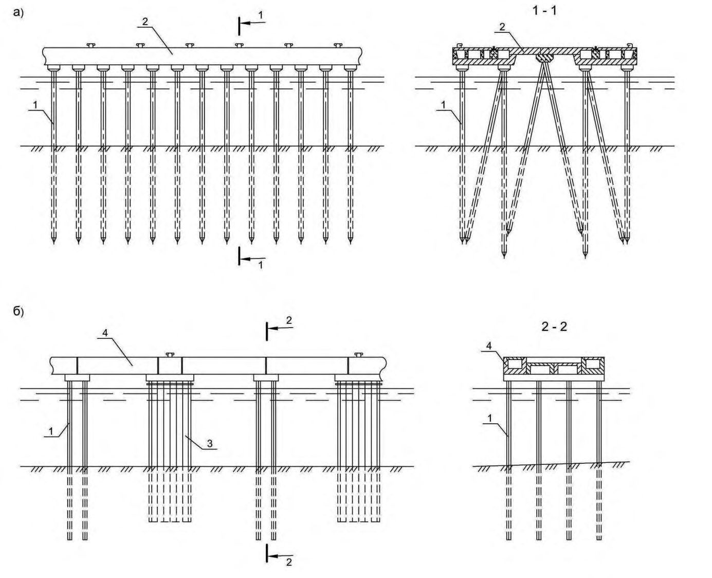
а) - при 𝑒 ≤ 𝑏/6
; б) - при
0,25𝑏 ≥ 𝑒 ≥ 𝑏/6
Примечание - См. также обозначения в формулах (10.6) - (10.10).
Рисунок 10.2 - Эпюры краевых напряжений по контакту основания сооружения и каменной постели
Краевые напряжения по контакту подошвы сооружения из пустотелых бетонных массивов и каменной постели следует определять по формуле
где А - площадь подошвы массива или площадь подошвы сооружения (при условии уплотнения камня в полости массивов или устройства набетонки в полости массива нижнего курса), м² ;
W 1,2 - момент сопротивления столба массива по подошве сооружения для кордонной и тыловой грани относительно оси, проходящей через центр тяжести сечения, м³ .
где ' max и ' min - максимальные и минимальные краевые нормальные напряжения в грунте основания на контакте с каменной постелью, кПа; b 1 - ширина, по которой передается давление от сооружения на постель, м. При соблюдении условий (10.1) и (10.2) b 1 = b , при несоблюдении указанных условий b 1 = 3 а; t п - толщина каменной постели, м;
к - удельный вес камня постели под водой, определяется в соответствии с 8.4.
Проверку прочности грунта основания проводят по формуле (10.6), где R -расчетное сопротивление грунта основания, принимаемое по данным инженерногеологических изысканий, с учетом СП 22.13330. При отсутствии инженерногеологических данных допускается принимать R по СП 22.13330.
Если максимальные напряжения на контакте сооружения с каменной постелью действуют со стороны тыловой грани (как правило, в конструкциях из пустотелых массивов), то рекомендуется определять эпюру напряжения от «навала» стенки на грунт.
Обозначения в формуле приняты в соответствии с 10.2.6. При отрицательной величине подкоренного выражения толщину постели следует принимать по конструктивным требованиям в соответствии с 10.1.6.
СП 287.1325800.2016
где Мt , Мr - расчетные моменты от опрокидывающих и от удерживающих сил соответственно относительно рассматриваемого ребра вращения, кН м.
Примечание - Для уголковых стенок с внешней анкеровкой расчет устойчивости на опрокидывание не проверяется.
где F сдв - сумма расчетных сдвигающих горизонтальных сил, действующих на сооружение, кН;
G - то же, что в 10.2.5, для сооружения из пустотелых бетонных массивов:
здесь G м - собственный вес столба массивов, кН;
G з1 - то же, заполнителя, кН;
G з2 - то же, засыпки в пределах консольного выступа, кН;
G н -то же, надстройки и слоя засыпки под ней, кН;
Еav - вертикальная составляющая бокового давления грунта; f - коэффициент трения подошвы сооружения по контакту с каменной постелью, допускается принимать равным 0,5.
Примечание - Временные нагрузки, улучшающие условия устойчивости, из расчета исключаются.
где G 1 - часть расчетного веса сооружения, передающая давление на грунт в плоскости подошвы постели на участке FK, определяемая по формуле
G 2 - расчетный вес каменной постели в контуре ЕСДК, определяемый по формуле
G 3 - расчетный вес засыпки в контуре ВСЕ, равный
f r - коэффициент трения каменной постели по грунту основания, принимаемый равным tg r ;
Еp - удерживающая горизонтальная сила от грунта засыпки, определяемая по одной из формул:
- сопротивление грунта засыпки в контуре ABE
- пассивное давление грунта
В расчет по формуле (10.15) вводится меньшее из полученных значений; ' max и ' min - то же, что в 10.2.6, с передней и тыловой сторон от собственного веса сооружения соответственно, включая вес грунта, вертикальную составляющую активного давления грунта и временных нагрузок, определяемые по формуле (10.10) при t п к = 0; b 0 - отрезок ширины постели, м;
к и з - удельные веса соответственно каменной наброски и засыпки с учетом взвешивания, кН/м³ ; m 0 - заложение откоса котлована;
р -коэффициент горизонтальной составляющей пассивного давления грунта, принимаемый в соответствии с Г.15 приложения Г;
= 0; б) для случая постели на поверхности грунта основания (рисунок 10.3, б): скольжение по плоскостям МК и КЕ - по формуле (10.15) при G 3 = 0 и Еp скольжение по наклонной плоскости ME - по формуле
СП 287.1325800.2016 где F п - сумма проекций на плоскость сдвига ЕМ расчетных сил, действующих выше этой плоскости, определяемая по формуле
G п - сумма проекций расчетных сил, действующих выше плоскости сдвига ME, на нормаль к этой плоскости, определяемая по формуле
f к - коэффициент внутреннего трения каменной наброски, который допускается принимать равным
G н - расчетный вес части постели в контуре ЕСМ, определяемый по формуле
- угол между подошвой стенки и плоскостью сдвига ME, град.
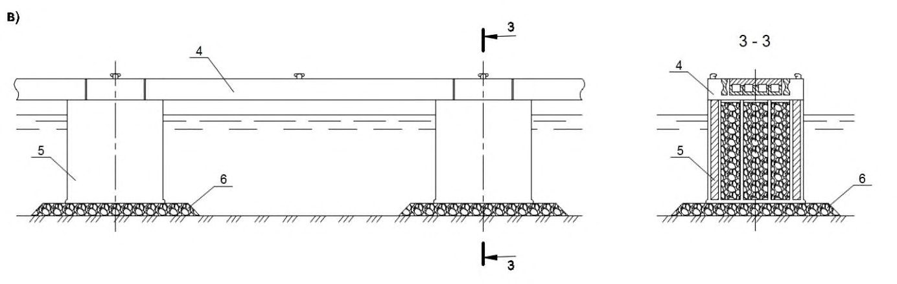
а) - при постели, заглубленной в грунт основания; б) - при постели, расположенной на поверхности грунта основания
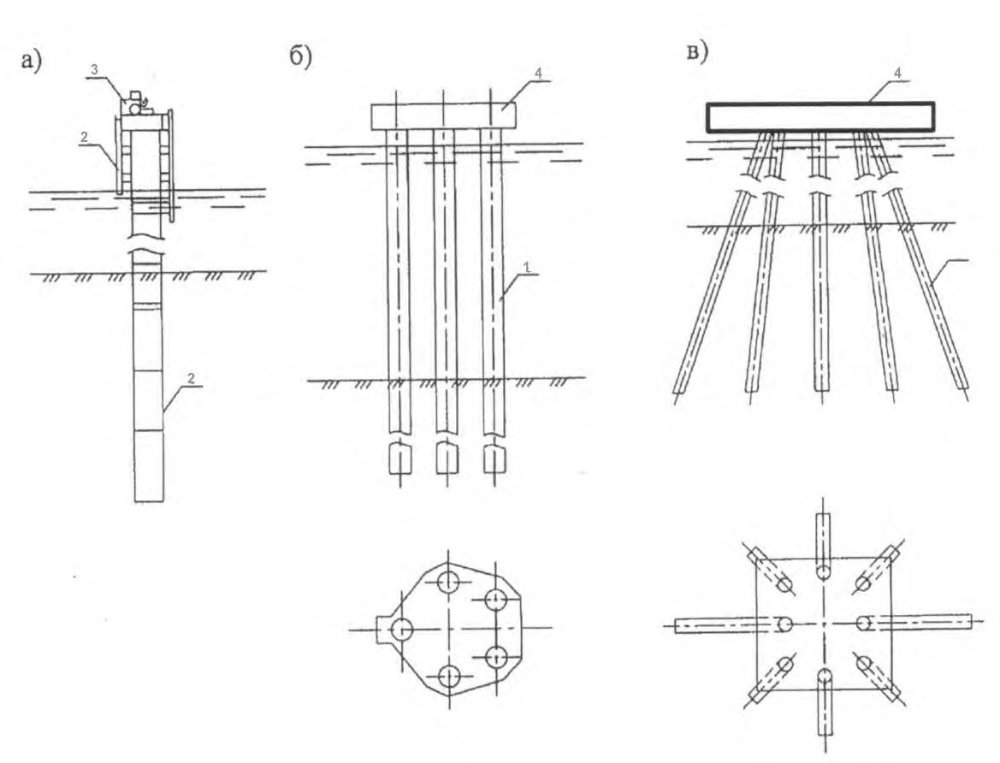
Рисунок 10.3 - Эпюры краевых напряжений по контакту каменной постели и основания
При статических расчетах оболочек большого диаметра следует учитывать условия работы конструкции сооружения на стадии эксплуатации и в строительный период.
Расчет причальных сооружений из оболочек большого диаметра по первой группе предельных состояний следует выполнять для обеспечения прочности конструкции оболочки (стенок и узлов соединения), элементов верхнего строения, основания сооружения и устойчивости сооружения на сдвиг и опрокидывание.
СП 287.1325800.2016
Расчет по второй группе предельных состояний проводят в целях прогнозирования деформаций сооружения - осадок, кренов, горизонтальных смещений, а также раскрытия трещин в железобетонных сечениях.
10.3Расчет причальных сооружений из массивовой кладки
- схема I - временная нагрузка располагается за пределами стенки, начиная от тылового обреза разгрузочной платформы или разгрузочной консоли стенки из пустотелых массивов. При таком расположении нагрузки следует выполнять расчеты на устойчивость по схеме плоского сдвига по контакту стенки с постелью, совместно с постелью и по швам кладки, проверять положение равнодействующей нагрузок (эксцентриситет) по подошве стенки и в швах кладки, а также в необходимых случаях устойчивость на опрокидывание (на поворот вокруг переднего ребра);
- схема II - временная нагрузка располагается над тыловой частью сооружения и распределяется на 1/3 ширины массива предпоследнего курса кладки.
Указанный случай является определяющим при проверке растягивающих нормальных напряжений со стороны акватории в шве основания верхнего курса массива;
- схема III - временная нагрузка располагается над стенкой до линии кордона или линии возможного загружения по технологическим условиям. В указанном расчетном случае определяются максимальные нормальные контактные напряжения в каменной постели на контакте с основанием стенки и в грунте основания на контакте с каменной постелью. Кроме того, определяются толщина постели, а также усилия в лицевой стенке надстройки при расчете ее по прочности и раскрытию трещин;
- схема IV - временная нагрузка располагается за пределами надстройки, над тыловой частью сооружения. Указанный расчетный случай является определяющим для расчета устойчивости надстройки;
- схема V -по разделу 9 при расчете на общую устойчивость по круглоцилиндрическим поверхностям скольжения (сдвига) (рисунок 10.5).
- ширину сооружения на контакте с постелью, равной 0,4-0,5 глубины у причала, причем большие значения следует принимать для конструкций из пустотелых массивов;
- ширину консольного выступа пустотелого массива не более 0,4 его высоты.
Высоту пустотелых массивов следует назначать из условия
где h - высота массива, м; b - ширина массива, м; l - длина массива (наибольший размер массива в плане), м; t - толщина стен, м;
R bt1 и R bt2 - расчетные сопротивления бетона на растяжение при бетоне класса по прочности на сжатие В10 и проектируемого класса бетона пустотелого массива соответственно, кПа.
СП 287.1325800.2016 a) - для конструкции из обыкновенных массивов; б) - то же, из пустотелых массивов; 1 - отметка кордона; 2 - линия кордона; 3 - колея портала; 4 - обратный фильтр; 5 - каменная разгрузочная призма; 6 - каменная постель; 7 - отметка дна; I-IV - схемы загружения; а - величина, принимаемая по [15]; q - нормативная нагрузка
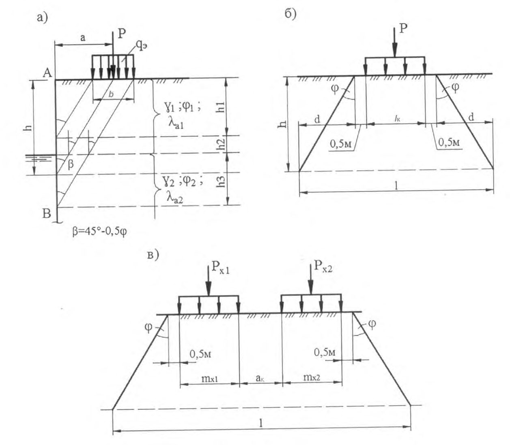
Рисунок 10.4 - Расчетные схемы загружения причала из кладки массивов
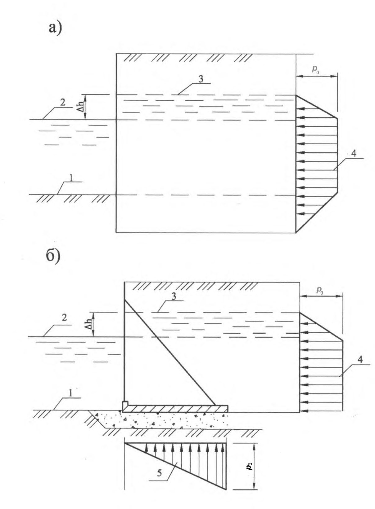
Примечание См. обозначения в 10.3.
Рисунок 10.5 - Схема расположения эксплуатационных нагрузок при расчете причала на общую устойчивость по круглоцилиндрическим поверхностям скольжения
- г) в стенке из пустотелых бетонных массивов расчетными плоскостями восприятия бокового давления грунта следует принимать условную вертикальную плоскость ab (рисунок 10.4, б), проходящую через тыловую кромку консоли массива (в пределах верхних курсов массивов), наклонную грань bс консольного выступа сооружения и тыловую вертикальную грань cd нижних курсов массивов; при этом коэффициенты горизонтальной составляющей бокового давления грунта рекомендуется определять по формулам (Г.4)-(Г.8) приложения Г.
СП 287.1325800.2016 наклона плоскости восприятия распора в грунте засыпки и соответствующий ему угол обрушения определяются в соответствии с Г.4 приложения Г.
Примечание - При надстройках высотой до 3 м и временной нормативной нагрузке q 40 кПа плоскость восприятия распора вертикальна, и угол обрушения вычисляют при = 0 и S = 0.
В указанном случае (рисунок 10.6) ординаты pai равны:
- в точке А
- в точке Б
- в точке А'
- в точке Б'
а и а к - коэффициенты активного давления соответственно грунта засыпки и камня разгрузочной призмы.
Остальные обозначения принимаются по рисунку 10.6.
горизонтальную составляющую швартовного усилия, нормальную к линии кордона, следует переносить в основание надстройки, учитывая возникающий при этом момент от пары сил.
Силу и момент oт пары сил следует распределять равномерно по всей длине секции, учитывая, что на 1 м длины причала действуют:
- сила
- момент от пары сил
где Sq - поперечная горизонтальная составляющая швартовного усилия, определяемая по указаниям СП 38.13330, кН; l с - длина секции, м; z м - плечо пары сил, равное расстоянию, на которое переносится сила, м.
1 - отметка дна; 2 - отметка расчетного уровня воды; 3 - отметка кордона Примечание - См. обозначения в 10.3.
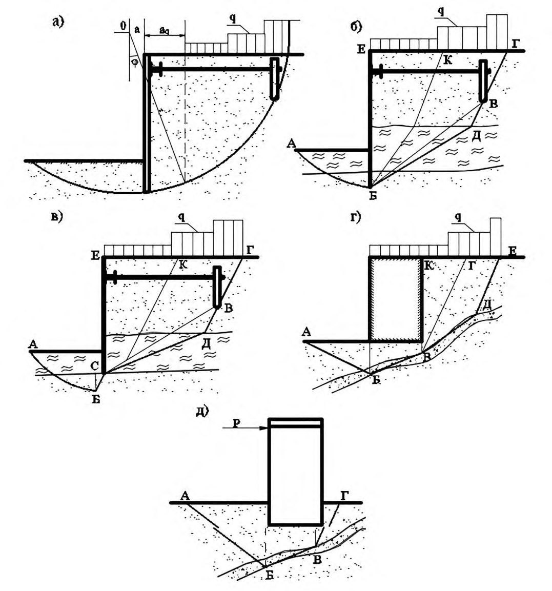
Рисунок 10.6 - Расчетная схема определения дополнительного давления на причал при наличии каменной разгрузочной призмы
СП 287.1325800.2016
где Sп - продольная горизонтальная составляющая швартовного усилия, определяемая в соответствии с указаниями СП 38.13330, кН;
Еа - горизонтальная составляющая активного давления грунта с учетом временных нагрузок, кН.
Примечания
1 Коэффициент трения бетона по бетону допускается принимать 0,6 для надводной части сооружения, 0,5 - для подводной.
2 Следует выполнять поверочный расчет сооружения по первой группе предельных состояний на устойчивость по схеме плоского сдвига при максимальном уровне воды.
3 При определении нормальных краевых напряжений в шве основания верхнего курса массивов швартовую нагрузку учитывать не следует.
4 Устойчивость сооружения из пустотелых бетонных массивов и отдельных его частей рекомендуется проверять для одного столба кладки массивов.
При расчетах на плоский сдвиг сооружения допускается при определении удерживающих сил трения принимать коэффициент трения равным 0,5 для бетона по постели и бетона по бетону.
5 При расчете устойчивости на сдвиг по швам кладки пустотелых массивов следует отдельно учитывать силы трения бетона и заполнения полости массива верхнего курса по бетону и заполнению полости массивов нижнего курса соответственно, определяя значение и распределение вертикального давления, нормальную и касательную составляющие бокового давления от заполнителя внутренней полости массивов аналогично давлению в силосах в соответствии с Г.10 приложения Г.
При расчете консольного свеса на изгиб сила распорного давления принимается приложенной с эксцентриситетом в соответствии с трапецеидальной эпюрой распора. Расчет выполняется на внецентренное сжатие с относительно малым эксцентриситетом в соответствии с СП 41.13330.2012, пункты 7.4 и 7.9.
При расчете прочности монтажных устройств массивов нагрузку от собственного веса следует вводить в расчет с коэффициентом динамичности 1,4 согласно СП 63.13330.
1 - отметка кордона; 2 - консольный свес; 3 - расчетный уровень воды
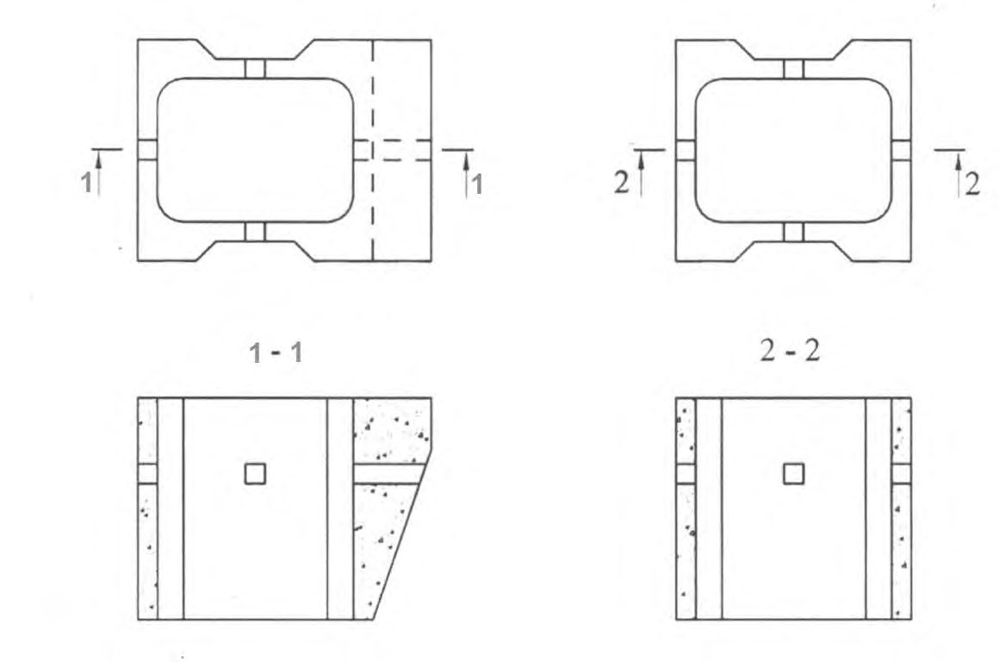
Рисунок 10.7 - Схема расчета прочности консольного свеса массива
10.4Расчет уголковых причальных сооружений контрфорсного типа
- схема I - временная нагрузка располагается над сооружением от линии кордона или линии возможного загружения по технологическим условиям. При таком расположении нагрузки рассчитывают контактные напряжения в постели и грунте основания, толщину постели, а также усилия для расчета прочности и трещиностойкости элементов конструкций;
- схема II - временная нагрузка располагается за сооружением. В этом случае проверяют устойчивость сооружения на плоский сдвиг по постели и вместе с постелью;
- схема III - в соответствии с указаниями 9.2.2.
СП 287.1325800.2016
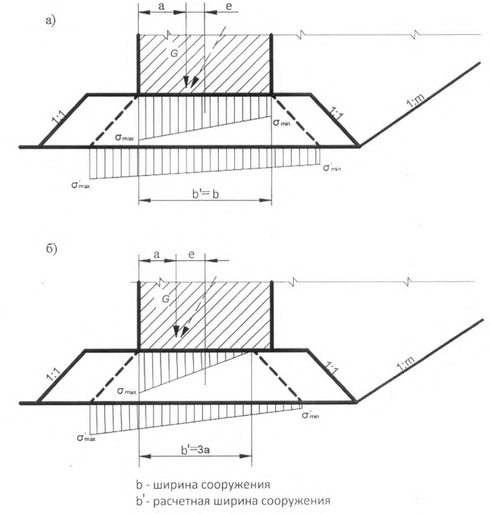
1 - отметка кордона; 2 - плоскость восприятия распора; 3 - плоскость обрушения; 4 - отметка дна; I-III - схемы загружения
Примечание - См. обозначения в 10.3.
Рисунок 10.8 - Расчетные схемы загружения причала для конструкции контрфорсного типа
При этом угол трения материала засыпки по расчетной тыловой плоскости стенки принимают равным:
0,667 - по железобетонной тыловой поверхности лицевой плиты или тыловой поверхности контрфорса;
- по условной наклонной тыловой плоскости стенки, в грунте засыпки (по плоскости восприятия распорного давления).
При расстоянии между контрфорсами 4 м основание эпюры трения принимают равным 0,2 нижней ординаты эпюры активного давления, при расстоянии между контрфорсами 2 м - 0,3 нижней ординаты эпюры активного давления.
Расчет лицевой стенки при одном контрфорсе выполняют по схеме консольной балки, при двух контрфорсах - по схеме однопролетной балки с консолями. По высоте сооружения рекомендуется выделять сечения лицевой плиты шириной 1 м с равномерной нагрузкой, равной средней интенсивности по расчетной эпюре распора для выделенного сечения.
Неполнота контакта компенсируется увеличением реактивных контактных напряжений от постели за счет условного исключения из расчета части площади фундаментной плиты (рисунки 10.9 и 10.10), равной 0,5 lbbb , где bb - ширина переднего выступа плиты, м; lb - длина фундаментной плиты вдоль кордона, м.
При этом краевые контактные напряжения определяют по формуле
СП 287.1325800.2016 где G - вертикальная составляющая равнодействующей всех нагрузок, действующих по ширине b , кН;
А - площадь плиты в контуре АВСDЕF (рисунок 10.9), по которой осуществляется контакт с постелью, м² ;
Мx и My - моменты от вертикальной составляющей равнодействующей всех нагрузок относительно соответствующих осей, проходящих через центр тяжести сечения контакта фундаментной плиты с постелью в контуре АВСDЕF, определяемые по формулам:
Wx и Wy - моменты сопротивления площади подошвы фундаментной плиты в контуре АВСDЕF относительно соответствующих осей, определяемые по формулам:
где Jx и Jy моменты инерции площади подошвы фундаментной плиты в контуре АВСDЕF относительно соответствующих осей, м 4 ; х к и у к - расстояния от края фундаментной плиты, в которой определяется контактное напряжение, до соответствующих осей, м. При проведении статических расчетов фундаментной плиты (рисунок 10.10) передний выступ следует рассчитывать в направлении, перпендикулярном линии кордона, по схеме консольной балки.
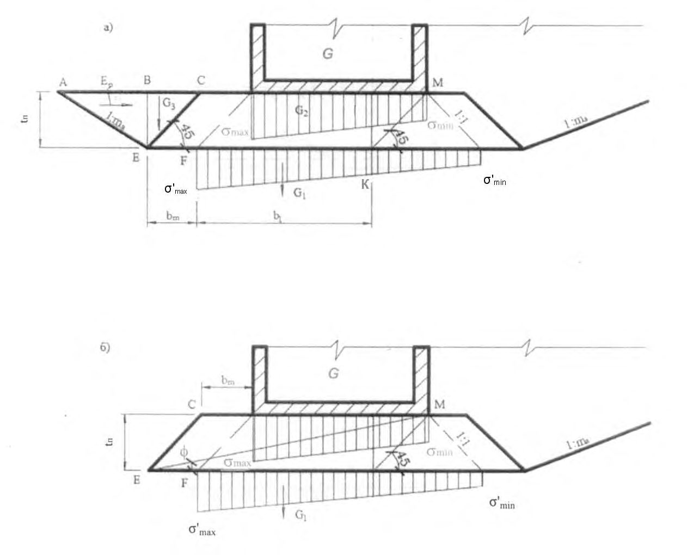
О - центр тяжести площади контакта плиты с постелью; О 1 - центр тяжести основания фундаментной плиты; О 2 - точка приложения силы
Примечание - См. обозначения в 10.4.7.
Рисунок 10.9 - Схема к расчету фундаментной плиты с учетом неполноты контакта с основанием
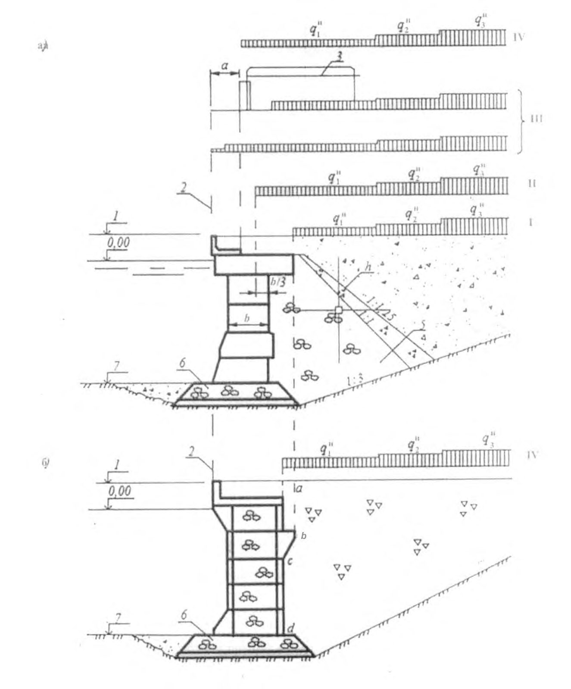
- а) - план сборного блока контрфорсной стенки; б) - результирующая эпюра нагрузок на фундаментную плиту; в) - схема работы переднего выступа фундаментной плиты;
- г) - схема работы тыловой консоли фундаментной плиты; 1 - передний выступ фундаментной плиты; 2 - лицевая плита; 3 - контрфорс; - тыловая консоль фундаментной плиты
Примечание - См. обозначения в 10.4.7.
Рисунок 10.10 - Схемы к расчету фундаментной плиты сборной уголковой контрфорсной стенки
СП 287.1325800.2016
Расчет тыловой части фундаментной плиты в направлении, параллельном линии кордона, при одном контрфорсе проводят по схеме консольной балки, а при двух контрфорсах - по схеме однопролетной балки (балки на двух опорах) с консолями.
При этом следует выделять сечения плиты шириной 1 м и загружать нагрузкой средней интенсивности суммарной эпюры давления (рисунок 10.10, б, г).
10.5Расчет причальных сооружений уголкового типа с внешней анкеровкой
- схема I - временная нагрузка располагается над сооружением до линии кордона или линии возможного загружения по технологическим условиям. При таком расположении нагрузки определяют усилия для расчета лицевой плиты и анкерной тяги, положение равнодействующей нагрузок в основании, контактные напряжения в постели и грунте основания, толщина постели;
- схема II - временная нагрузка располагается за сооружением. В этом случае проверяют его устойчивость на плоский сдвиг по постели и вместе с постелью;
- схема III - временная нагрузка располагается за анкерной плитой. При таком положении нагрузки рассчитывают анкерные устройства;
- схема IV - в соответствии с указаниями 9.2.2.
При определении положения равнодействующей нагрузок по формуле (10.3) удерживающий момент Мr определяют по формуле
где МG - момент от вертикальных сил, кН м;
𝑀𝑅𝑎 - момент от горизонтальной составляющей усилия в анкере относительно переднего ребра вращения, кН м.
При определении устойчивости сооружения на плоский сдвиг формулы (10.13), (10.15), (10.22) и (10.23) с учетом действия горизонтальной составляющей анкерного усилия R a приобретают соответственно вид:
СП 287.1325800.2016
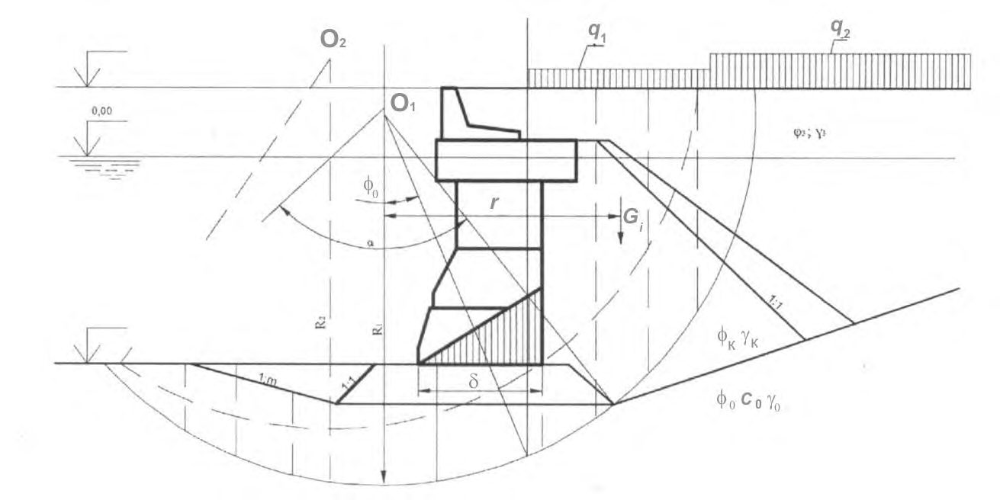
1 - отметка кордона; 2 - плоскость восприятия распора; 3 - плоскость обрушения; 4 - отметка дна; I-IV - схемы нагружения
Примечание - См. обозначения в 10.3 и 10.4.
Рисунок 10.11 - Расчетные схемы загружения причала для конструкции уголкового типа с внешней анкеровкой
При расчете плиты в вертикальном направлении в качестве расчетной плоскости следует принимать условную плоскость восприятия распора, положение которого определяется расстоянием пл от тыловой грани ребра (рисунок 10.12):
где з - средневзвешенный угол внутреннего трения грунта засыпки, град; ар - расстояние между осями ребер, м; t p - толщина ребра, м; b p - ширина ребра, м.
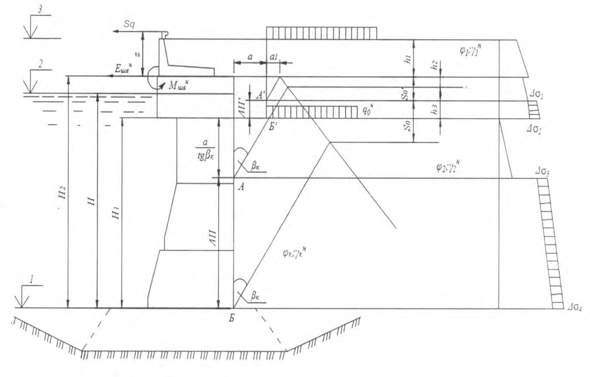
Примечание - См. обозначения в 10.5.6.
Рисунок 10.12 - Схема определения расчетной плоскости лицевой плиты
При расчете плиты в вертикальном направлении горизонтальную составляющую швартовного усилия, нормальную к линии кордона, следует учитывать при определении усилий в наданкерной консоли и не учитывать при определении изгибающего момента в пролете.
В связи с перераспределением давления грунта на стенку в результате ее деформации и перемещения значение изгибающего момента в пролете лицевой панели допускается уменьшать на 10 %.
При расчете плиты в горизонтальном направлении рекомендуется по высоте
СП 287.1325800.2016 сооружения в соответствии с эпюрой распора выделять характерные расчетные сечения шириной 1 м и принимать для горизонтальных балок равномерную нагрузку, равную средней интенсивности эпюры распора для выделенного сечения.
Изгибающий момент, действующий на 1 м сечения фундаментной плиты, определяют по формуле
где m э - коэффициент, принимаемый равным 0,45;
h - коэффициент, учитывающий влияние на прочность изгибаемого элемента градиента деформаций по сечению и зависящий от класса бетона и высоты растянутой зоны сечения, принимаемый равным 2 в соответствии с СП 41.13330;
sh - коэффициент, учитывающий влияние на прочность изгибаемого элемента формы его поперечного сечения и зависящий от соотношения размеров сечения, принимаемый равный 1,0 в соответствии с СП 63.13330;
b - коэффициент условий работы бетона, принимаемый равный 0,9 в соответствии с СП 41.13330;
R btn - нормативное значение осевого растяжения бетона, принимаемое по СП 63.13330; Wt -момент сопротивления для растянутой грани сечения, определяемый в предположении упругой работы бетона:
здесь а м - размер массива вдоль причала, равный 1 м; h м = b ф/4 - высота эквивалентного массива, м; здесь b ф - ширина фундаментной плиты, м.
где h с - высота стенки сооружения м; a п - расстояние от поверхности территории до подошвы анкерной плиты или до точки, отстоящей на 2 d вверх от подошвы анкерной стенки ( d - дополнительная глубина на защемление), м.
Длину анкера l а следует определять расчетом.
11Проектирование причальных сооружений типа больверк
11.1Общие положения
Настоящий свод правил содержит требования к проектированию безанкерных, заанкеренных обычных и экранированных больверков с анкеровкой на одном уровне (рисунок 11.1).
11.2Основные конструктивные требования
В экранирующих стенках следует применять однотипные элементы повышенной жесткости.
СП 287.1325800.2016 стенки и на 1,5 м ниже отметки проектного дна.
Для больверков из стального шпунта в тех случаях, когда это приемлемо по условиям расположения отбойных устройств и защиты металла от коррозии, допускается устройство небольшого железобетонного или стального оголовка (шапочного бруса).
В районах с повышенной агрессивностью воды или возможных значительных ледовых нагрузок отметка низа надстройки должна находиться не менее чем на 0,2 м ниже расчетного уровня.
При строительстве сооружений в районе пониженных агрессивных воздействий, где обеспечивается длительная сохранность шпунта, отметку низа надстройки следует принимать из условия создания опорной плоскости для отбойных устройств и возможности производства работ по возведению надстройки насухо.
При строительстве сооружений на морях с большой амплитудой приливноотливных колебаний, где опускание низа надстройки под расчетный уровень представляет большие затруднения, вопрос о принятии отметки низа надстройки решается с учетом накопленного опыта эксплуатации сооружений в местных и аналогичных условиях.
Температурно-деформационные швы в железобетонной надстройке больверков из стального шпунта рекомендуется выполнять в местах замковых соединений, где могут происходить горизонтальные и вертикальные деформации. а) - незаанкеренный (безанкерный) больверк; б) - заанкеренный больверк с одним ярусом анкеров; в) - заанкеренный больверк с экранирующей стенкой; г) - заанкеренный больверк с двумя экранирующими стенками; - разгрузочная
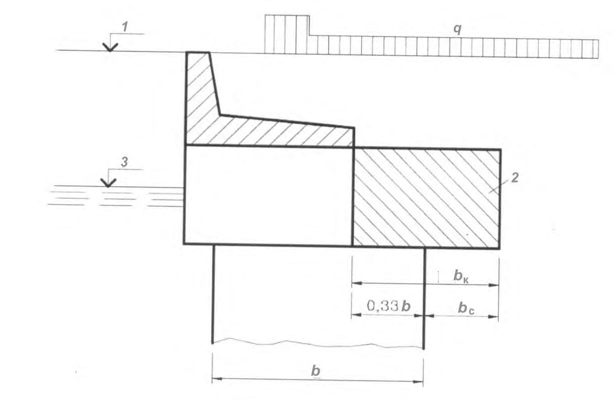
1 - лицевая шпунтовая стенка; 2 - анкерная тяга; 3 - анкерная опора; 4 платформа (плита); 5 - экранирующая стенка
Рисунок 11.1 - Конструктивные решения больверков
СП 287.1325800.2016
Наибольшая эффективность больверков реализуется при защемлении лицевых и экранирующих стенок, что обеспечивается рациональным соотношением глубины погружения, расстояния между стенками и податливости анкеровки, достигаемым при рассмотрении и расчете нескольких вариантов компоновки больверков.
Отметку низа разгрузочной платформы рекомендуется располагать не выше 0,7 м над уровнем анкерной тяги.
Железобетонная платформа может выполняться сборной или монолитной и размещаться симметрично относительно осей экранирующих стенок больверка.
При многорядном экранировании допускается как монолитная платформа по всему поперечному сечению, так и с осадочным швом в середине пролета между стенками.
При конструировании узла крепления анкерной тяги к стенкам рекомендуется предусматривать возможность свободного поворота анкерной тяги на 5 -10 от нормали к лицевой или экранирующей стенке больверка.
Для уменьшения неравномерности загружения анкерных тяг, а также для доведения их деформацией до величины, обеспечивающей нормальный режим работы стенок, рекомендуется включать в тяги специальные муфты и устройства.
СП 287.1325800.2016 каменноугольные эмали, герметики и ленточные материалы в соответствии с требованиями СП 28.13330.2012 и [10].
Узлы крепления и соединения анкерных тяг рекомендуется заливать битумнорезиновой эмалью.
- за лицевую стенку с упором экранирующих стенок в лицевую через разгрузочную платформу;
- за экранирующую стенку с дополнительной анкеровкой лицевой стенки за экранирующую.
Вторую схему рекомендуется применять при экранирующих стенках большой жесткости.
При анкеровке по первой схеме для обеспечения совместной работы стенок в процессе засыпки следует устанавливать между стенками специальные распорки.
В пределах секции балки необходимо соединять сварными равнопрочными швами или сваркой с накладками.
Допускается устанавливать балки распределительного пояса с открытыми стыковыми швами, принимая расчетные схемы балки в соответствии с их конкретной разрезкой.
СП 287.1325800.2016
11.3Основные положения расчета
Нагрузки и их сочетания следует принимать в соответствии с требованиями СП 38.13330, СП 58.13330 и раздела 8.
- нагрузки от фильтрационного и волнового давления воды суммируют с нагрузками и воздействиями на лицевую стенку больверка;
- нагрузки от судов со стороны акватории, а также ледовые нагрузки учитывают в расчете прочности стенок больверка, надстройки, ее связей с элементами больверка, отбойных устройств и их креплений.
Расчет включает в себя задание значений исходных геометрических, жесткостных и силовых параметров, определение глубины погружения элементов стенок больверка, статический расчет лицевой и экранирующих стенок больверка, анкерных устройств, расчет конструктивных элементов больверка.
Угол трения материала засыпки и грунта основания по расчетной плоскости стенки в призме распора принимают равным 0,667 , но не более 30°.
Угол трения грунта по расчетной плоскости в призме выпора принимают для лицевой и экранирующих стенок больверка, а также анкерных стенок и плит равным , но не более 30°.
При замене грунта в основании лицевой стенки больверка угол трения материала засыпки по расчетной плоскости в призме выпора следует принимать равным 0,33 .
- для стенок из стального шпунта корытного и Z-профилей - плоскость, проводящую через ось стенки;
- для стенок из стального шпунта двутаврового профиля и плоского (призматического) железобетонного шпунта - плоскость, проходящую по тыловой полке или грани;
- для стенок кольцевых сечений - плоскость, проходящую на расстоянии 0,25 диаметра от оси стенки в сторону засыпки.
Для элементов круглого сечения величину а определяют по формуле
где а э - расстояние между элементами экранирующей стенки в осях, м; d э - диаметр элемента экранирующей стенки, м;
red -средневзвешенное значение угла внутреннего трения в пределах высоты экранирующей стенки, град.
Для квадратных и прямоугольных элементов величину а определяют по формуле
где 𝑏э - ширина элемента экранирующей стенки по длине сооружения, м.
При одной экранирующей стенке, забитой сплошным рядом, расчетную плоскость определяют аналогично лицевой стенке (см. 11.3.5) в зависимости от стороны, относительно которой рассматривают боковое давление грунта.
При наличии двух и более экранирующих стенок их расчетные плоскости принимают по нейтральной оси сечения элементов.
При этом следует рассматривать условия залегания указанных грунтов, методы производства работ и темпы возведения, период времени от засыпки пазухи до начала
СП 287.1325800.2016 эксплуатации и загрузки сооружения. Следует учитывать, что ускоренные темпы засыпки и загрузки могут вызвать в рассматриваемом грунте проявление полного порового давления.
Учитывая опыт проектирования и строительства, допускается при определении бокового давления грунта на стенки больверков принимать сдвиговые показатели и С по инженерно-геологическим отчетам, а также следует использовать материалы инженерно-геологических изысканий на площадке строительства для нестабилизированного состояния грунта.
При частичной замене в основании сооружения слабых глинистых грунтов и илов и при отсыпке по их поверхности фильтрующего слоя грунта, а также в случае естественного залегания слабого глинистого грунта в примыкании к фильтрующему слою необходимо проводить расчет во времени под нагрузкой частичной консолидации грунта к моменту начала эксплуатации сооружения.
За расчетную схему принимается балка шириной 1 м по фронту причала жесткостью В л, находящаяся ниже уровня дна в упругом основании, характеризуемом коэффициентом постели, линейно возрастающим с глубиной.
Коэффициент постели определяют по 8.20.
Примечание - В случаях, когда в верхнем слое ниже уровня дна залегают слабые илистые грунты мощностью более 0,3 глубины погружения элементов стенки больверка, коэффициент пропорциональности для определения коэффициента постели следует принимать по верхнему слою.
СП 287.1325800.2016
За расчетную схему следует принимать балку шириной 1 м по фронту причала жесткостью В л, опертую в точке крепления анкера на упругоподатливую опору и размещенную ниже уровня дна в упругом основании, характеризуемом коэффициентом постели (см. 11.3.10).
На наданкерную часть воздействует давление от веса грунта засыпки, расположенного над разгрузочной платформой, и эксплуатационных нагрузок на территории причала.
На пролетную часть воздействуют силосное давление грунта между стенками и дополнительное давление, определяемое с учетом коэффициента распределения давления грунта в системе, учитывающего жесткостные характеристики стенок больверка.
Дополнительное давление грунта определяется суммированием давления от веса грунта за экранирующими стенками, передаваемого на лицевую стенку больверка по законам распределения напряжений в линейно-деформируемой среде, и эксплуатационных нагрузок на территории причала, расположенных за разгрузочной платформой (включая вес грунта наданкерной части).
Расчетная глубина погружения элементов лицевой стенки больверка следует принимать не менее наибольшей из полученных расчетами.
СП 287.1325800.2016
- для первой экранирующей стенки - разностью давлений между стенками с учетом дополнительного давления от веса грунта за второй экранирующей стенкой, передаваемого на экранирующую стенку по законам распределения напряжений в линейно-деформируемой среде;
- для второй экранирующей стенки -аналогично активному давлению, определяемому по 11.3.17.
За расчетную схему экранирующей стенки больверка принимают балку шириной 1 м по фронту причала жесткостью b э i , опертую в точке крепления анкера на упругоподатливую опору и размещенную ниже уровня условной свободной поверхности (далее - уровень УСП) в упругом основании, характеризуемом коэффициентом постели.
Положение уровня УСП определяют от точки крепления анкера величиной h э i (рисунок 11.2), рассчитываемой по формуле
где l л - условный пролет лицевой стенки больверка, м, определяемый по формуле (11.4); аi - расстояние от расчетной плоскости лицевой стенки больверка до расчетной плоскости соответствующей экранирующей стенки, м;
i - угол внутреннего трения грунта в слое, расположенном на расстоянии l л от уровня крепления анкера, град; h л высота от уровня крепления анкера до дна, м; d min - минимально допустимая глубина погружения элементов экранирующей стенки больверка, м (см. 11.3.9).
Условный пролет лицевой стенки больверка следует определять по формуле
где d л - глубина погружения лицевой стенки больверка, м.
где l a - длина анкера (расстояние от расчетной плоскости лицевой стенки больверка до анкерной опоры), м, определяемая по 10.5.12;
Ry
Е
- расчетное сопротивление материала анкера, кПа, принимаемое по СП 16.13330; а - модуль упругости материала анкера, кПа;
U -перемещение анкерной опоры, м, определяемое расчетом.
Примечание - См. обозначения в 11.3.19.
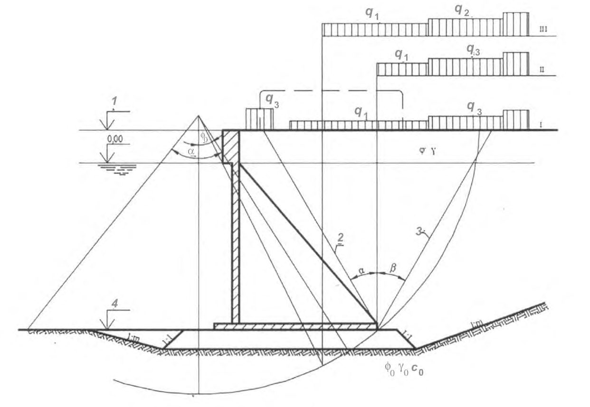
Рисунок 11.2 - Схема к определению положения уровня УСП
В случаях, когда лицевая стенка анкеруется за экранирующую, а экранирующая за анкерную опору, при определении перемещения экранирующей стенки длину анкера l a принимают равной расстоянию от расчетной плоскости экранирующей стенки до анкерной опоры.
Примечания
1 Для рационального распределения усилий в элементах больверка рекомендуется варьировать значением перемещения стенок больверка на уровне крепления анкера, что обеспечивается либо технологией строительства, либо конструктивными устройствами.
2 Горизонтальное перемещение козловой опоры на уровне крепления анкера принимают равным нулю.
СП 287.1325800.2016
При учете нагрузок от фильтрационного и волнового давлений воды статический расчет лицевой стенки больверка следует выполнять на заданную нагрузку.
Примечание - Допускается для приближенных расчетов больверка использовать графоаналитический метод упругой линии.
- на первом этапе расчет проводят на действие активного давления от веса грунта и эксплуатационных нагрузок на территории причала;
- на втором - с дополнительной нагрузкой от фильтрационного и волнового давлений воды.
Расчетный максимальный изгибающий момент М л в элементе лицевой стенки больверка определяют по формуле
где M max - максимальный изгибающий момент в элементе лицевой стенки больверка, кН∙м, полученный на первом этапе расчета;
M 2, M 1 - максимальный изгибающий момент (на 1 м стенки по длине сооружения), кН м/м, полученный от фильтрационного и волнового давлений соответственно; b л - ширина элемента по длине сооружения, м; а л - расстояние (проектный зазор) между элементами, м.
Расчетную анкерную реакцию на 1 м стенки по длине сооружения определяют статическим расчетом на втором этапе.
Примечание - Для металлического шпунта расчет максимального изгибающего момента ведут на 1 м по длине стенки.
Усилия (изгибающие моменты) в элементах стенок больверка от навала судна и ледовых нагрузок суммируются с усилиями, полученными статическим расчетом по 11.3.21.
- при определении устойчивости (высоты) на суммарную нагрузку от активного и пассивного давлений грунта с учетом эксплуатационных нагрузок на территории причала за анкерной опорой и анкерного усилия R а ;
- при определении прочности на реактивное давление грунта перед опорой, вызванное действием анкерного усилия R а ;
- на усилия от швартовных воздействий, определяемых по 11.3.25.
Величина анкерного усилия R а на 1 м стенки по длине сооружения равна расчетной анкерной реакции, полученной статическим расчетом по 11.3.21 с учетом коэффициента К а, учитывающего перераспределение эпюры активного давления грунта, неравномерность натяжения анкеров, зависание грунта на анкерах.
Коэффициент К а принимают равным 1,5.
Примечания
- 1 В первом приближении значение анкерного усилия R а принимают по аналогам.
- 2 Усилия от швартовных воздействий учитывают только при расчетах стенок тумбовых массивов.
где Sg - поперечная проекция расчетной швартовной нагрузки, кН, определяемая в соответствии с требованиями СП 38.13330; l Т - длина тумбового массива, м; h𝑆 - высота от уровня крепления анкера по линии приложения нагрузки Sg , м; l л - условный пролет лицевой стенки больверка, м, определяемый статическим расчетом лицевой стенки больверка (см. 11.3.19).
Усилие от швартовной нагрузки суммируют с анкерным усилием R а .
Усилия, действующие в элементах железобетонных анкерных плит таврового или ребристого сечений, в поперечном направлении определяются:
- в плите между ребрами - как в балке на двух опорах с консолями;
- в полке - как в консольной балке, защемленной в месте примыкания полки к ребру.
СП 287.1325800.2016
Расчет анкерной плиты следует выполнять с использованием апробированных методик.
- на вертикальную нагрузку от веса шапочной балки, веса грунта над ней, а для сжатой сваи - дополнительно от эксплуатационных нагрузок на территории причала;
- горизонтальную нагрузку, равную анкерному усилию (см. 11.3.24).
Вертикальные нагрузки принимают по длине, равной шагу свайных козловых опор.
где F - расчетная вертикальная нагрузка, кН;
p, c - углы наклона к вертикали растянутой и сжатой соответственно свай козловых опор, град;
R a - анкерное усилие, кН/м (см. 11.3.24);
S к - шаг свайных козловых опор, м;
G c - вес сваи в конструкции, кН, определяемый при коэффициенте надежности по нагрузке f = 1,05 для сжатой сваи и f = 0,95 для растянутой сваи козловых опор.
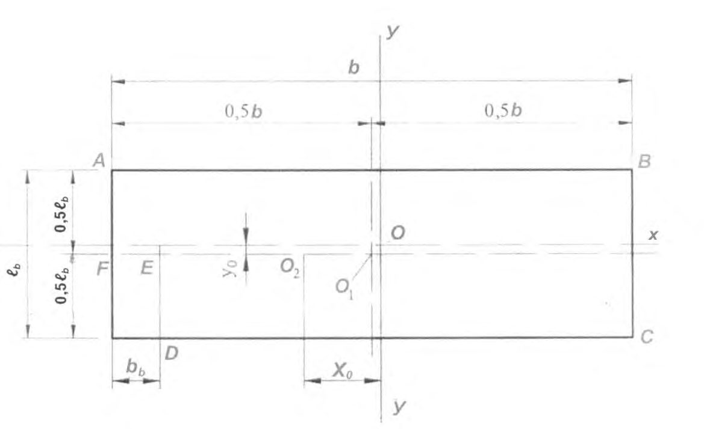
V - расчетная вертикальная нагрузка, кН
Примечание - См. обозначения в 11.3.29.
Рисунок 11.3 - Схема к определению усилий в сваях козловых опор
СП 287.1325800.2016
В случаях приближения опор к лицевой (экранирующей) стенке несущую способность участков свай, расположенных выше естественного откоса, следует принимать не более 50 % определенной для того же грунта в условиях естественного залегания.
где R а.т - растягивающее усилие в анкерной тяге, кН, определяемое по 11.3.35;
An - площадь сечения тяги нетто, м²
с = 1;
Ry - расчетное сопротивление материала анкерной тяги растяжению, кПа, принимаемое по СП 16.13330.
В местах резьбовых соединений расчетное поперечное сечение тяги принимают по внутреннему диаметру резьбы.
где R а - анкерное усилие, кН/м (см. 11.3.24);
S a - шаг анкеров, м;
- угол наклона анкерной тяги к горизонтали, град. В случаях, когда в экранированном больверке лицевая стенка анкеруется за экранирующую, а экранирующая - за анкерную опору, усилие в переднем анкере определяется по формуле
где К a - коэффициент, принимаемый по 11.3.24;
R л - усилие в переднем анкере на 1 м стенки по длине сооружения, кН/м, равное расчетной анкерной реакции лицевой стенки больверка, полученной статическим расчетом по 11.3.21;
S п - шаг передних анкеров, м;
п - угол наклона передней анкерной тяги к горизонтали, град.
При расчете анкерных тяг тумбовых массивов следует учитывать усилия от
; швартовных воздействий по 11.3.25.
Усилия для подбора сечения распределительного пояса следует определять по формулам:
где l - расчетный пролет многопролетной балки, м, равный шагу анкеров.
Сечение распределительного пояса следует определять расчетом на прочность при изгибе согласно требованиям СП 16.13330.
Расчет прочности анкерных тяг следует выполнять по 11.3.34.
Перемещение стенки больверка следует определять при расчетных характеристиках грунтов и нагрузках, применяемых в расчетах по второй группе предельных состояний.
Перемещение от эксплуатационных нагрузок не должно превышать предельно допустимых перемещений, если нет других ограничений.
Предельно допустимые перемещения приведены в [23].
СП 287.1325800.2016 больверка, анкерных опор по образованию и раскрытию трещин следует выполнять на усилия, полученные статическим расчетом соответственно по 11.3.21, 11.3.26, 11.3.28 и 11.3.29 при расчетных нагрузках и характеристиках грунтов, коэффициенты, надежности которых по нагрузкам и весу грунта равны единице. При этом усилия от навала судна или ледовых нагрузок не учитываются.
При этом глубина погружения элементов лицевой стенки больверка должна быть не менее полученной из условия устойчивости на поворот вокруг точки крепления анкера (см. 11.3.15).
При этом должны быть обеспечены устойчивость и прочность первой экранирующей стенки.
11.4Особенности расчета причальных сооружений на слабых грунтах
где j - индекс точки на лицевой стенке, для которой определяется деформация; v - линейная скорость деформации, м/сут, по касательной к дуге поверхности скольжения сдвигаемого массива; t -период времени, сут, соответствующий расчетному сроку службы сооружения; rj - величина радиуса, м, до j -й точки, в которой определяют деформацию; r -радиус сдвигаемого массива, м.
- коэффициент вязкости η - по графикам на рисунке 11.4;
- коэффициенты, характеризующие изменение вязкости с глубиной , по формуле
где red - средневзвешенное значение удельного веса вышележащих слоев грунта, кН/м³ ; y - углы наклона касательных в точках графика (см. рисунок 11.4), соответствующих значениям вязкости грунтов по линии поверхности глубинного сдвига с учетом порового давления и нагрузки.
В особо ответственных случаях коэффициенты η и ζ рекомендуется определять по результатам испытания образцов грунта ненарушенной структуры по консолидированно-дренированной схеме при нормальных напряжениях, соответствующих весу вышележащих слоев грунта, с учетом эксплуатационной
СП 287.1325800.2016 нагрузки.
Во всех других случаях замену слабых грунтов следует обосновывать техникоэкономическими расчетами.
Рисунок 11.4 - Графики значений коэффициента
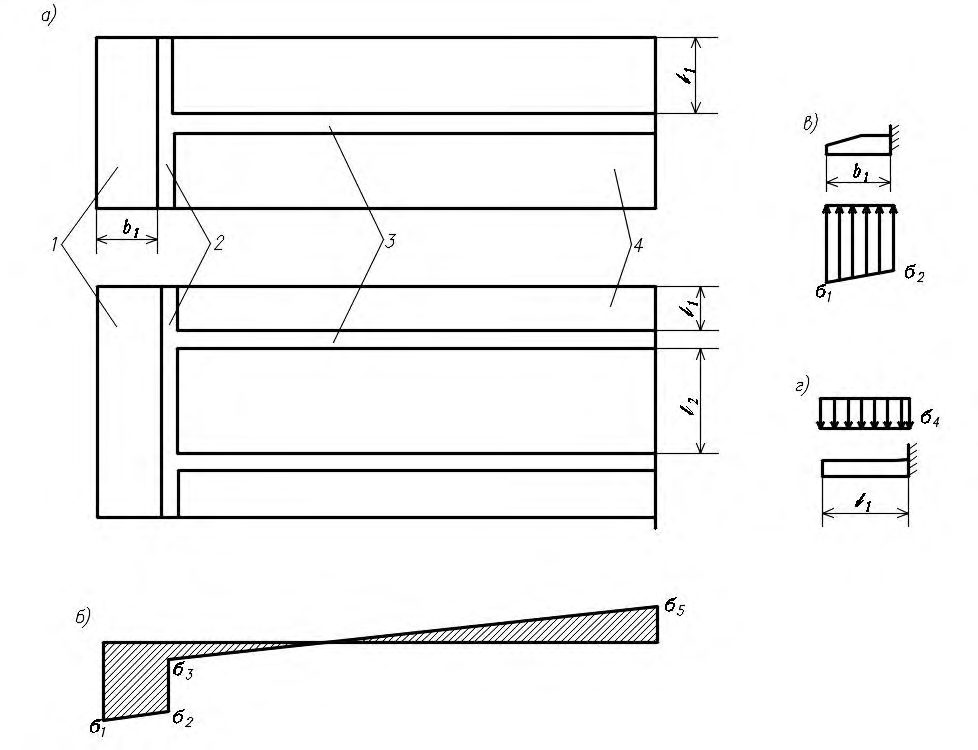
1 -7 - касательные 𝛈
12Проектирование причальных сооружений эстакадного типа 12.1 Основные конструктивные требования
СП 287.1325800.2016 набережных и пирсов, опирающиеся на свайные опоры.
Конструкции эстакадного типа классифицируются следующим образом:
- в зависимости от конструкции верхнего строения и расположения опор сооружения эстакадного и мостового типов;
- в зависимости от расположения на акватории и сопряжения с берегом набережные-эстакады, перекрывающие подпричальный откос по всей длине сооружения, пирсы, включающие в себя узкие рейдовые причалы;
- в зависимости от конструкции верхнего строения и опор - со сборным, сборномонолитным, и монолитным верхним строением, на призматических сваях, сваяхоболочках, металлических трубах, оболочках большого диаметра и на опорах из кладки массивов.
Увеличение ширины верхнего строения для обеспечения устойчивости подпричального откоса допускается при неблагоприятных грунтовых условиях и требует обоснования целесообразности по сравнению с другими способами (замена или закрепление грунтов основания, уменьшение шага опор, применение анкерующих устройств и т. д.).
Под неблагоприятными грунтовыми условиями подразумеваются илы, слабые водонасыщенные глины и суглинки с коэффициентом водонасыщения Sr 0,85, показателем текучести IL 0,75, модулем деформации Е 5000 кПа при коэффициенте консолидации Сv 1 10 7 см² /год.
Допускается применение уклонов 1:1,25-1:1,3 в спокойной воде ( h 0,3-0,5 м) и глубине причала до 8,25 м, а также на переходных участках от основной эстакадной конструкции к берегоукреплению.
Уклоны до 1:1,8 допускаются:
- при необходимости размещения кранового оборудования в пределах ростверка и глубинах до 8,25 м;
СП 287.1325800.2016
- высоте волн на акватории до 1,50 м;
- действии постоянных течений;
- на торцевых причалах широких пирсов.
Уклоны подпричального откоса 1:2 и менее следует принимать при специальном обосновании на недостаточно защищенных акваториях при высоте волн h > 1,50 м либо при невыполнении условий общей устойчивости сооружения при больших уклонах откоса.
Рекомендуется располагать берму на 1,0-1,5 м ниже нулевой отметки порта. Большие значения принимаются при обосновании.
При использовании индустриальных сборных и сборно-монолитных конструкций верхнего строения расстояния между осями продольных и поперечных свайных рядов следует принимать в соответствии с типоразмерами сборных элементов.
При l р = (3-6) D необходимо учитывать взаимодействие свай; значения l р < 3 D не допускаются.
Шаг свай из железобетонных оболочек и стальных труб диаметром более 0,60 м в продольном направлении рекомендуется принимать не менее 5 D , а для железобетонных призматических свай и стальных труб меньшего диаметра - не менее 2,5-3,0 м.
В безребристых конструкциях железобетонных ростверков максимальный шаг свай в продольном направлении не должен превышать 4,0-5,0 м.
Расстояние между осями вертикальных и наклонных висячих свай в плоскости их нижних концов должно быть не менее 3 D , а свай-стоек - не менее 2,5 D .
- при свайном основании из призматических свай сечением 400 400 мм и 450 450 мм в конструкциях набережных-эстакад для глубин 8,25 м и более, в конструкциях судоремонтных и пассажирских пирсов для глубин 6,50 м и более, а также в рейдовых причалах;
- при действии горизонтальных нагрузок (наклонные сваи забивают в кордонном ряду);
- в сейсмических районах.
В местах расположения на технологической площадке неподвижных опор трубопроводов, стационарных трапов-сходен, швартовных устройств и другого оборудования, передающего на верхнее строение сосредоточенные горизонтальные, вертикальные и моментные нагрузки, необходимо устраивать опоры, усиленные дополнительными козловыми и вертикальными сваями.
В качестве опор повышенной несущей способности следует применять:
- железобетонные сваи-оболочки диаметром 1,20 и 1,60 м;
- оболочки большого диаметра;
- при глубинах более 13,0 м или действии повторно переменной либо сейсмической нагрузок, в суровых климатических условиях - сварные коробчатые сваи из шпунта, а также сварные стальные структуры.
СП 287.1325800.2016 допускается опирание на башмаки, уложенные на специально устроенную каменную постель.
Кордонный башмак должен быть полностью заглублен ниже уровня дна. В конструкциях набережных допускается располагать башмаки среднего и типового свайных рядов выше отметки низа кордонного башмака, однако наклон линии, соединяющей центры башмаков, должен быть положе наклона подпричального откоса.
Повышение несущей способности металлических свай достигается также устройством на их концах открылков из прокатных профилей при отсутствии трудностей забивки, а при их наличии - увеличением толщины низа свай путем приварки металлических полос (ножей). Расстояние в свету между сваями или их уширениями должно быть не менее 1 м.
Класс бетона при образовании пробок или заполнении внутренних полостей свай следует принимать по расчету, но не ниже В15.
- передача горизонтальных (и прежде всего судовых) нагрузок на отдельные конструкции (отбойные и швартовные палы, анкерные устройства), не связанные с конструкцией причального сооружения;
- повышение отметки дна под конструкцией путем устройства ограждающих стенок или грунтовых откосов в конструкциях пирсов;
- устройство подводных связей между сваями в виде диафрагм и пространственных металлических структур;
- применение наклонных свай;
- повышение жесткости свай путем усиления существующих свай и создание новых рациональных типов их сечений, заполнения свай-оболочек на необходимую по расчету высоту бетоном;
- устройство уширений на стволе сваи или уширенной пяты в основании сваи;
- забуривание нижних концов свай-стоек в скальный грунт с анкеровкой или без анкеровки с заполнением цементным раствором околосвайного пространства;
- устройство металлических бурозаливных свай, усиленных анкерами, установленными в полость сваи, при слабых грунтах основания;
- замена слабого грунта в основании грунтом с хорошими строительными свойствами в образованном в результате дноуглубления котловане или замена грунта в предварительно погруженных сквозь толщу слабого грунта до прочных его слоев цилиндрических оболочках большого диаметра;
- защита дна у сооружений от возможного размыва в случае значительных скоростей течения, особенно при наличии легкоразмываемых грунтов на поверхности основания;
- анкеровка верхнего строения в береговом грунтовом массиве.
Выбор указанных конструктивных мер или их сочетания необходимо проводить путем технико-экономического сопоставления вариантов, наиболее приемлемых для конкретных условий строительства.
Безреберные верхние строения применяются:
- в конструкциях причалов на призматических сваях с наголовниками, при этом кордонные и тыловые части плит верхнего строения проектируются большей толщины, чем в средней части для восприятия крановых нагрузок;
- при устройстве монолитной надстройки причала.
Поперечно-ригельная система (ригели перпендикулярны линии кордона) рекомендуется при отсутствии или незначительной интенсивности крановых нагрузок и действии на сооружение нагрузок от судов на недостаточно защищенных акваториях.
СП 287.1325800.2016
Продольно-ригельную систему следует применять при тяжелом крановом оборудовании.
Поперечно-ригельная (продольно-ригельная) система образуется путем укладки на поперечные (продольные) ряды свай сборной части ригеля, имеющего в местах опирания на сваи окна для пропуска ее арматуры и омоноличивания ригеля со сваями. На ригели опираются сборные железобетонные плиты, зазоры между которыми омоноличиваются. Рекомендуется применять ребристые конструкции сборных плит (двухребристые панели или плиты с ребрами по контуру), располагая плиту поверх ребер в целях облегчения монтажа, омоноличивания сборных элементов и недопущения действия на ростверк и сваи веса балластного слоя.
Высота несущих элементов верхнего строения должна обеспечивать их прогибы, не превышающие 0,002 l в пределах пролета и 0,0044 l к на консоли ( l и l к - длины пролета и консоли соответственно).
Возвышение низа пролетного строения под расчетным уровнем воды следует назначать с учетом волновых воздействий на ростверк. Оно должно обеспечивать возможность осмотра и ремонта ростверка снизу и быть не менее 0,8 м над расчетным строительным уровнем воды.
Шаг ребер следует назначать кратным шагу тыловых опор. В плите верхнего
СП 287.1325800.2016 строения следует предусматривать закладные детали для крепления подкрановых и железнодорожных путей.
- при переработке наливных грузов -одноярусным и многоярусным в соответствии с числом ярусов соединительной эстакады либо при необходимости уменьшения габаритов площадки.
Для температурной вставки в ростверке с длиной пролета до 8 м включительно разрешается опорные части устраивать из стальных листов.
При длине пролета более 8 м на опорах следует применять тангенциальные опорные части по типу опорных элементов пролетных строений мостов.
- в конструкциях набережных на призматических сваях - в коробчатых массивах тылового сопряжения;
- в прочих конструкциях - у кордонной грани плиты верхнего строения, а в конструкциях из унифицированных элементов - в полости между бортовой балкой и продольным ригелем.
Допускается при специальном обосновании располагать потерны в конструкциях набережных и пирсов на призматических сваях.
СП 287.1325800.2016
При значительной ширине ростверка, обусловленной типовыми размерами пролетов верхнего строения либо при невозможности при принятом уклоне откоса образования бермы перед тыловым сопряжением, последнее может не устраиваться; подпричальный откос в этом случае доводят до низа плиты верхнего строения.
Отсутствие тылового сопряжения и действие благодаря этому распорного давления грунта на эстакаду могут быть допущены в конструкциях набережных на сваяхоболочках диаметром не менее 1,2 м, на призматических сваях сечением 400 400 мм и 450 450 мм при введении в состав свайного основания наклонных или козловых свай, а также при анкеровке верхнего строения.
Верхний курс массива тылового сопряжения следует выполнять в виде железобетонного короба при необходимости устройства тыловой потерны.
Продольный шов между эстакадой и тыловым сопряжением следует перекрывать съемными чугунными решетками.
- рабочие стыки сборных элементов ростверков, воспринимающие изгибающие моменты и поперечные силы, создают путем сварки выпусков арматуры и укладки бетона омоноличивания или путем сварки закладных частей в соответствии с указаниями СП 63.13330;
- стыки сборных элементов ростверков, воспринимающие поперечные силы, создают путем устройства в примыкающих поверхностях элементов штраб с последующим наполнением их монолитным бетоном и установкой арматуры;
- отдельные стыки между сборными элементами ростверка допускается выполнять открытыми, т. е. без связей, в том случае, когда это приемлемо по условиям работы сооружения, а относительные смещения по линиям примыкания допустимы по условиям эксплуатации.
Допускается сваи-оболочки не заделывать в ростверк из предварительно напряженных элементов, обеспечивая лишь плотное примыкание торцов оболочек к верхнему строению путем омоноличивания оболочки с ростверком, и в этом случае в состав стыка следует включать дополнительную арматуру, пропускаемую через окна в ригелях.
Стык металлической сваи с железобетонным верхним строением следует устраивать путем омоноличивания в ростверке выпусков арматуры, привариваемой к внутренней поверхности сваи и замоноличенной в ее бетонной пробке.
Применение инвентарных хомутов позволяет омоноличивать сваю и плиты только в монтажном проеме плит.
При образовании узла омоноличивания должны быть обеспечены требуемый СП 63.13330 перепуск арматуры плит и установка дополнительной вертикальной (с требуемым перепуском относительно выпусков арматуры сваи) арматуры.
- омоноличивания свай в монтажных проемах и окнах (в частности, за счет выреза
СП 287.1325800.2016 полок продольных ригелей);
- омоноличивания монтажных проемов между продольными ригелями и укладываемыми на них (в частности, на их полки) плитами.
12.2Основные положения расчета
- с несущей способностью элементов по прочности, трещиностойкости;
- деформациями конструкции в целом и ее элементов;
- несущей способностью свай и шпунта при действии осевых усилий;
- предельными значениями горизонтальных компонентов реакций грунта по боковой поверхности свай и шпунта.
- для набережных, технологических площадок узких пирсов для переработки навалочных и наливных грузов, пассажирских и судоремонтных пирсов, палов пространственную рамную конструкцию на упругих (нелинейно-упругих) опорах с промежуточными связями или без них и жесткий ростверк, если высота ригелей, приведенных к прямоугольному сечению, составляет не менее 1:4,3 ширины ростверка;
- для верхнего строения соединительных эстакад узких пирсов - многопролетную балку или плиту на упругих опорах при омоноличивании или сварке продольных ригелей смежных пролетов и однопролетные балки при свободном опирании балок на поперечные ригели.
При учете образования в грунте зон пластических деформаций граница между областями упругого (модель основания в виде коэффициента постели) и пластического деформирования определяется равенством реакций грунта, получаемых с помощью этих двух расчетных моделей, на границе упругой и пластической зон.
При значениях коэффициента продольного изгиба Jх = Jy < 0,9 в сваях расчет конструкции должен быть откорректирован в соответствии с матрицей деформаций стержня, подверженного действию продольно-поперечного изгиба.
Расчетную длину опор с учетом условного защемления следует принимать в зависимости от положения их на откосе и направления действия горизонтальной силы перпендикулярно кордону в сторону акватории, вдоль кордона и перпендикулярно кордону в сторону берега.
от продольной силы N в элементе относительно центра тяжести сечения, где
СП 287.1325800.2016 здесь V(Z) и Vr -прогибы в сечениях с координатой Z и в голове опоры соответственно; N кр - критическая сжимающая сила;
𝑁кр = π 2 𝐸𝐽 (μ 𝑙) 2 ; здесь EJ - жесткость элемента; l - расчетные длины свай, принимаемые по указаниям 12.2.5;
- принимают по таблице 12.1.
При наличии ребер другого направления с шагом, меньшим, чем шаг ребер рассматриваемого направления, и при высоте полки hf 0,1 h ( h - высота сечения ребра) свес полки b с следует принимать равным половине расстояния в свету между ребрами рассматриваемого направления.
При отсутствии ребер другого направления или при их шаге, большем, чем шаг ребра рассматриваемого направления, а также если hf < 0,1 h , свес полки b с = 6/ hf .
При консольных свесах полки
- если hf 0,1 h , b c = 6 hf ;
- если 0,05 h = hf < 0,1 h , b c = 3 hf ;
- если hf < 0,05 h , то свесы не учитываются.
СП 287.1325800.2016
Таблица 12.1 Определение коэффициентов 𝛍 в зависимости от схемы закрепления сваи
| Характеристика свайного основания | при схемах | закрепления |
|---|---|---|
| Прямоугольные сваи с горизонтальным смещением | 1,25 | 1,5 |
| Сваи-оболочки с горизонтальным смещением | 1 | 1,25 |
| Сваи и сваи-оболочки без горизонтального смещения (козловые опоры в двух направлениях) | 0,7 | 1 |
- сосредоточенные силы - как опорные реакции, полученные по линиям влияния продольных (подкрановых) ригелей при действии крановых и железнодорожных нагрузок, если они располагаются в пределах расчетной ширины ригеля, и расчетных ригелей шириной 12 hf , расположенных под осями железнодорожных путей, при действии железнодорожных нагрузок и учете собственного веса продольных ригелей; расчетной схемой ригелей являются соответствующие балки на упругоподатливых опорах с коэффициентами податливости, равными осадкам поперечных рам от действия единичных сил, приложенных в месте расположения центральных осей соответствующих продольных ригелей;
- равномерно распределенные нагрузки -как нагрузки интенсивностью, определяемой площадью сбора нагрузок с левого и правого полупролетов, расположенных между данной поперечной рамой и соседних с ней, с учетом собственного веса элементов полупролетов, включая поперечные ригели.
Вертикальные нагрузки на продольные рамы (основные несущие системы) определяются следующим образом:
- сосредоточенные силы - по фактическим значениям крановых нагрузок и железнодорожных нагрузок, действующих в пределах полосы ростверка от его конца до середины пролета, примыкающего к прикордонному или тыловому ряду опор для прикордонного или тылового ригеля, а для средних продольных ригелей - по фактическим значениям железнодорожных нагрузок, действующих в пределах левого и правого примыкающих полупролетов, расположенных между данным продольным
СП 287.1325800.2016 ригелем и соседними с ним;
- равномерно распределенные нагрузки -как нагрузки интенсивностью, определяемой указанной выше площадью сбора нагрузок продольных ригелей с учетом собственного веса элементов, находящихся в зоне сбора нагрузок, включая продольные ригели.
При расчете продольных рам коэффициент податливости свайной опоры следует принимать равным осадке примыкающей к этой опоре поперечной рамы от действия единичной силы, приложенной в месте расположения центральной оси продольного ригеля.
где k - коэффициент пропорциональности упругих свойств грунта, кН/м 4 , принимаемый по таблице 8.1; z - текущая координата по высоте стенки (глубина расположения сечения сваи в грунте, для которой определяется коэффициент постели, по отношению к поверхности грунта, м); 𝑏р - условная расчетная ширина сваи, принимаемая равной:
- для свай с диаметром стволов до 0,8 м и более b p = d + 1;
- для остальных размеров сечений свай b p =1,5 d + 0,5 м.
На поверхности грунта основания коэффициент постели равен нулю. Значение коэффициента постели в слое каменной призмы подпричального откоса также принимают равным нулю.
При погружении сваи в многослойное грунтовое основание расчетные значения коэффициента постели сz грунта в горизонтальном направлении по боковой поверхности сваи допускается определять по формуле (13.1) согласно рисунку 13.1.
При этом значение коэффициента постели c с на сдвиг вдоль оси сваи для рассматриваемого сечения определяется выражением
где и периметр сваи.
Коэффициент жесткости подошвы сваи, кН/м, определяется выражением
где c 0 - значение коэффициента постели на уровне подошвы сваи;
А - площадь сечения сваи по подошве.
При расчетах свай на действие продольных нагрузок значения сил трения на части сваи в грунте от реактивного давления грунта не должны превышать предельно допустимые значения сил трения по боковой поверхности сваи, нормируемые СП 24.13330.
где 𝑐 с1 (𝑟) , 𝑐 с2 (𝑟) , 𝑐 ∗ находят по выражениям (12.4) и (12.5); l 0 - свободная длина сваи, равная расстоянию от ее заделки в ростверке до поверхности грунта;
СП 287.1325800.2016
Е - модуль упругости материала опоры.
Для опор, забуриваемых в полускальные и скальные основания,
где d - глубина забуривания сваи.
Изгибающие моменты М и перерезывающие силы Q в головах свай определяют как геометрические суммы соответствующих значений М и Q , полученных при расчете поперечных и продольных рам на действие каждого вида нагрузки в отдельности. Значение продольной силы в свае определяют из расчета поперечной рамы.
Зона активной деформации грунта определяется координатой точки на лицевой стенке, горизонтальное смещение U в которой равно критическому смещению Uu , определяемому по формуле (соответствует наступлению за стенкой предельного активного напряженного состояния)
где du - глубина расположения точки с критическим горизонтальным смещением ниже поверхности засыпки (глубина зоны активной деформации), м; 𝜂𝑢 2 - критический угол перекоса, равный
здесь 𝑎𝑠 ′ - коэффициент уплотнения, принимаемый по данным компрессионных испытаний; допускается принимать 𝑎𝑠 ′ =1/ ES ( E S - модуль деформации грунта в данной точке, МПа);
0 - коэффициент давления покоя;
a - коэффициент бокового активного давления грунта;
- угол внутреннего трения грунта в рассматриваемой точке, град;
U , Uu и du уточняются в процессе итераций. При ограничениях по глубине забивки шпунта либо на слабых консолидируемых основаниях Uu может соответствовать ордината критической точки, находящейся на уровне низа шпунта.
Грунт ниже линии «условного дна» моделируется упругим основанием с коэффициентом постели. Для участков сваи, находящихся выше уровня «условного дна», коэффициент постели принимают равным нулю.
Упругая схема работы грунтового основания в виде коэффициента постели сохраняется, если
где p ( z ) - реакция упругого основания в сечении с координатой z ; pu ( z ) - предельное значение реакции основания в той же точке.
В противном случае, т. е. при p ( z ) и р рu ( z ) упругое основание заменяют в пределах рассматриваемого участка предельной эпюрой пассивного сопротивления грунта.
Несущую способность свай и других опор определяют по формуле
где N - расчетная нагрузка на сваю или свайный фундамент, кН;
F d - расчетная несущая способность одиночной сваи по грунту основания, определяемая по СП 24.13330, кН; γ𝑘 - коэффициент надежности, принимаемый по СП 24.13330.
- несущей способности сваи по грунту основания;
- несущей способности материала сваи в соответствии с СП 41.13330, СП
СП 287.1325800.2016
63.13330, СП 16.13330, СП 64.13330.
Примечание - Несущую способность свай по грунту следует уточнять по результатам их испытаний динамической нагрузкой, статическим зондированием и статической нагрузкой в соответствии с требованиями ГОСТ 5686, СП 24.13330, СП 22.13330. Тип и число испытаний устанавливаются проектной организацией.
13Проектирование отбойного пала
13.1Общие положения
Требования, изложенные в настоящем разделе, распространяются на расчет гибких односвайных и многосвайных отбойных палов. В случае многосвайного пала все сваи следует принимать одинаковой жесткости, а распределение усилий при навале судна - равномерным между сваями.
13.2Основные конструктивные требования
В плане сваи размещаются в пределах либо прямоугольника, либо трапеции. Сваи могут быть забиты с небольшим наклоном в сторону акватории, что позволяет повысить энергопоглощающую способность пала.
13.3Основные положения расчета
Расчетной схемой отбойного пала при действии горизонтальной силы является гибкий вертикальный стержень, погруженный в грунт основания, свойства которого моделируются коэффициентом постели.
СП 287.1325800.2016
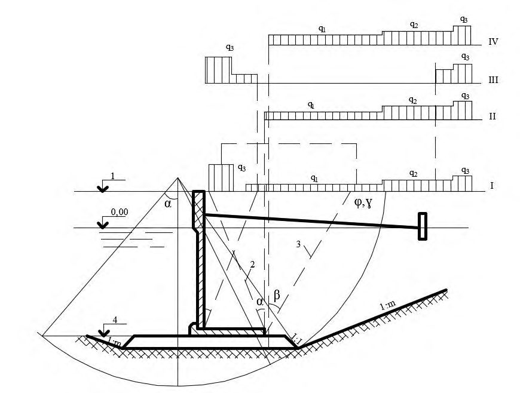
a - перемещение пала, м, под действием силы F в точке ее приложения; DN - наружный диаметр пала, м; t п - глубина погружения пала, м; tmp - толщина стенки пала, мм; φ - угол отклонения пала от вертикали под действием силы F в точке ее приложения
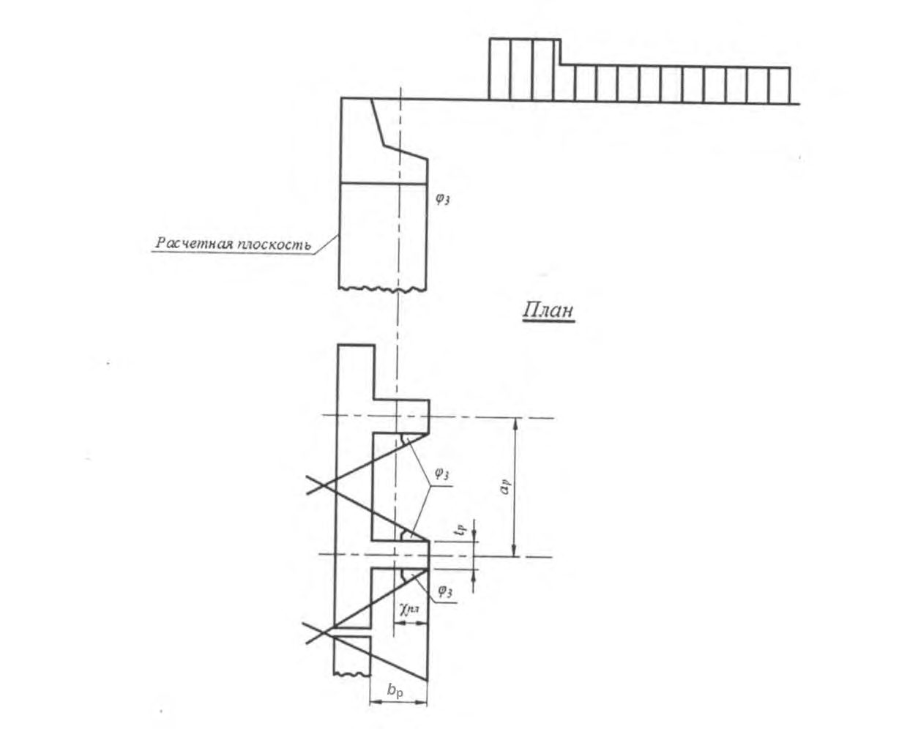
Примечание - См. также обозначения в 13.3.3.
Рисунок 13.1 - Расчетная схема гибкого пала при действии горизонтальной силы
При многослойном грунтовом основании в сечении пала на глубине z, расположенном в ( i+ 1)-м слое грунта (см. рисунок 13.1), расчетное значение коэффициента постели допускается определять по формуле
где Кi - коэффициент пропорциональности упругих свойств iго грунта, кН/м 4 , принимаемый по таблице 8.1; t i - толщина i -го слоя грунта, м; z - текущая координат по высоте пала (глубина расположения сечения пала в грунте, для которой определяется коэффициент постели, по отношению к поверхности грунта), м; п - число вышележащих слоев грунта; b р -условная расчетная ширина пала, принимаемая равной:
- для свай с диаметром стволов до 0,8 м и более b p = d + 1;
- для остальных размеров сечений свай b p =1,5 d + 0,5 м.
- расчет прочности пала по материалу, включающий в себя проверку сечения пала по предельным состояниям первой и второй групп на совместное действие расчетных усилий - продольной силы, изгибающего момента и поперечной силы;
- расчет пала по деформациям, включающий в себя проверку соблюдения условий допустимости расчетных значений горизонтального перемещения головы пала и угла ее поворота;
- расчет устойчивости грунтового основания, окружающего пал, включающий в себя проверку соблюдения условия ограничения расчетного давления, оказываемого на грунт боковыми поверхностями пала.
где Fq - расчетная горизонтальная сила, кН, приложенная в точке навала судна;
СП 287.1325800.2016 а - перемещение пала, м, под действием силы в точке ее приложения.
где F отб - усилие, кН, при котором реализуется паспортная энергоемкость отбойных устройств.
14Проектирование конструкций из цилиндрических ячеек и узких засыпных пирсов
14.1Общие положения
Требования настоящего раздела распространяются на проектирование конструкций из цилиндрических ячеек из плоского стального шпунта и узких засыпных пирсов в виде взаимозаанкеренного больверка (рисунок 14.1).
Рисунок 14.1 - Схема конструкций из цилиндрических ячеек (а) и конструкций узких засыпных пирсов (б)
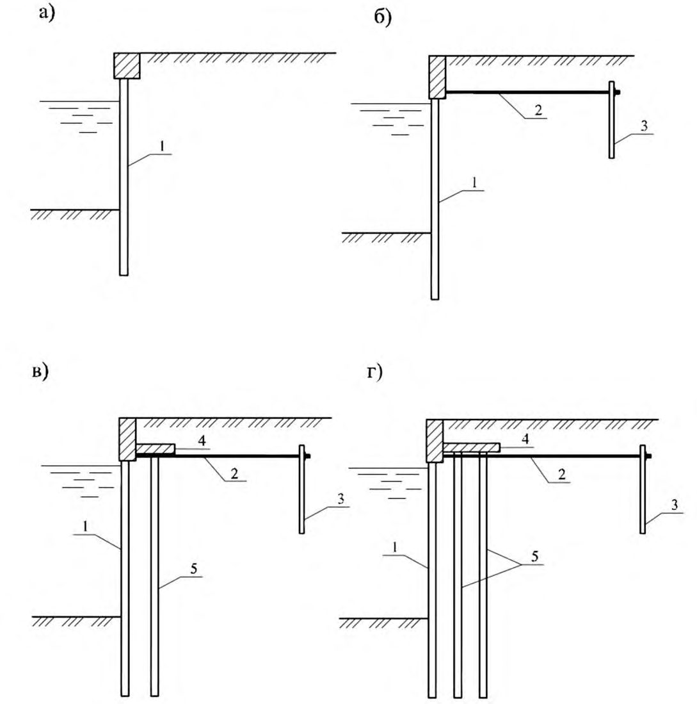
14.2Расчет конструкций из цилиндрических ячеек
где Mt - суммарный момент от внешних горизонтальных нагрузок относительно центра тяжести подошвы сооружения, кН∙м;
СП 287.1325800.2016
Мr - суммарный момент удерживающих сил, относительно центра тяжести подошвы сооружения, кН∙м.
где d - диаметр конструкции, м;
Еа д -горизонтальная составляющая активного давления грунта засыпки, кН/м (см. 14.2.5);
red - средневзвешенное значение угла внутреннего трения грунта в сооружении, град; f - коэффициент трения в замках шпунтовой конструкции, принимаемый равным 0,4; N - равнодействующая дополнительных сил сопротивления смещению грунта в сооружении по вертикальной плоскости за счет сопротивления дополнительных элементов жесткости (противоледовый пояс, бетонное кольцо и т. п.), кН (см. 14.2.6); - угол трения грунта о шпунтовую конструкцию, принимаемый равный 0,667 red , но не более 30 , град;
М 0 -момент реактивного давления, действующего на внешнюю поверхность конструкции, относительно подошвы сооружения, кН м (см. 14.2.7).
где η𝑖 - коэффициент уменьшения давления грунта, определяемый по графику на рисунке 14.2;
Еa - горизонтальная составляющая активного давления от веса грунта засыпки, определяемая в соответствии с разделом 8 и приложением Г.
где А - площадь поперечного сечения элемента жесткости, м² ;
R - расчетное сопротивление на срез (растяжение) материала элемента жесткости, кПа.
Рисунок 14.2 - График изменения коэффициента
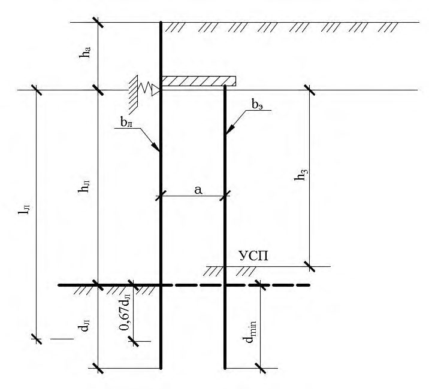
где 𝑎𝐸 - расстояние от горизонтальной составляющей активного давления грунта Еaq подошвы сооружения, м;
Еaq - горизонтальная составляющая активного давления грунта с внешней стороны ниже уровня дна, кН.
где Р з - разрывающее усилие в замках шпунтовой конструкции, кН/м (см. 14.2.9); R з - предельное сопротивление в замках разрывающему усилию, кН/м.
СП 287.1325800.2016
з,гр - разрывающее усилие от активного давления грунта в сооружении, кН/м; где Р
Р з,F - разрывающее усилие от активного давления грунта, кН/м, вызванное внешней горизонтальной нагрузкой.
Разрывающие усилия Р 3,гр , Р 3,F следует определять по формулам:
где Pa ,max - максимальная ордината эпюры активного давления грунта, кПа;
F -горизонтальная нагрузка на сооружение, кН;
GK - собственный вес сооружения от верха до отметки максимальной ординаты эпюры активного давления грунта, кН.
где Ра - максимальная ордината давления грунта на плоскую стенку, кПа, определяемая в соответствии с требованиями раздела 8 и приложения Г;
i - коэффициент уменьшения давления грунта, определяемый по рисунку 14.2.
14.3Расчет конструкций узких засыпных пирсов
- на нескальном основании
- на основании, подстилаемом скальным грунтом,
где b п - ширина пирса, м;
Еа 1 - горизонтальная составляющая активного давления грунта на лицевую стенку пирса, кН/м;
Еа 2 - горизонтальная составляющая активного давления грунта с внешней стороны ниже уровня дна на лицевую стенку пирса, кН/м;
1 - угол трения грунта о лицевую стенку пирса, принимаемый 0,667 red , но не более 30 , град;
2 - угол трения грунта о лицевую стенку пирса с внешней стороны, принимаемый 0,667 red 2, но не более 30° ( red 2 - средневзвешенное значение угла внутреннего трения грунта ниже уровня дна с внешней стороны лицевой стенки пирса), град; a п - расстояние между поперечными стенками, м;
M 0 - момент реактивного давления грунта на внешнюю поверхность лицевой стенки пирса относительно подошвы сооружения, кН/м (см. 14.3.3).
Примечание - При отсутствии поперечных стенок третий член в формулах (14.11), (14.12) равен нулю.
где 𝑎𝐸2 - расстояние от горизонтальной составляющей активного давления грунта Еа 2 до подошвы сооружения, м.
Расчет конструктивных элементов пирса следует выполнять в соответствии с разделом 11.
СП 287.1325800.2016
15Особенности проектирования причальных сооружений
для условий Арктики
15.1Основные конструктивные требования
Отметку низа надстройки следует принимать ниже расчетного уровня воды не менее чем на 0,2 м.
15.2Основные положения расчета
- воздействие на сооружение значительных ледовых нагрузок и перепадов температур;
- наличие на реках Крайнего Севера бурных весенних паводков, сопровождающихся ледоходом, большим подъемом уровня воды и наводнениями;
- наличие мерзлоты в основании сооружения и возможность ее деградации, термоабразия морских берегов;
- промерзание обратной засыпки сооружения в осенне-зимний и весенний периоды;
- возможность использования льда и ледогрунта в качестве строительного
СП 287.1325800.2016 материала и холода (отрицательной температуры внешней среды) как фактора строительного производства.
При отсутствии данных о размерах льдин и их скорости движения ледовые нагрузки допускается определять в соответствии с СП 38.13330.
При отсутствии таких данных высоту ледогрунтового ядра допускается принимать равной расстоянию от отметки кордона сооружения до нижней кромки льда на расчетный момент времени.
- угол внутреннего трения мерзлых грунтов равным углу внутреннего трения талого (немерзлого) грунта;
- предельно длительное сцепление мерзлых грунтов
где ас и bс - параметры, кПа, зависящие от грунта:
- для песка
- для связных грунтов
| t | - абсолютное значение отрицательной температуры грунта °С; |
Допускается в расчетах принимать для мерзлых грунтов предельное эквивалентное сцепление как комплексную характеристику, учитывающую совместно силы сцепления и трения, определяемую в соответствии с ГОСТ 12248 и СП 25.13330.
15.3Расчет причальных сооружений типа больверк на ледовую нагрузку
- коэффициент постели изменяется по высоте стенки больверка по линейному закону;
- при деформации стенки больверка в сторону акватории условные опоры, расположенные выше отметки дна у сооружения, из расчета исключаются, жесткость условных опор ниже отметки дна определяют по характеристикам грунта перед стенкой;
- при нагрузке на условную опору, превышающую ее несущую способность, опора заменяется силой, равной по значению несущей способности условной опоры и направленной в противоположную сторону нагрузке.
СП 287.1325800.2016
- в зоне мерзлого грунта где
- ниже слоя промерзшей засыпки
где qh -интенсивность вертикального давления грунта на отметке нижней границы слоя промерзшей засыпки, кПа;
- коэффициент, определяемый по формуле (15.4);
- удельный вес грунта, кН/м³ ; z - текущая координата, отсчитываемая от отметки нижней границы слоя промерзшей засыпки, м; λп - коэффициент бокового давления грунта.
Коэффициент определяют по формуле
- угол внутреннего трения грунта, град;
м - угол трения призмы обрушения по слою промерзшей засыпки, принимаемый равный 0,33 , град;
- угол трения грунта о стенку, принимаемый равный 0,667 , град.
где k - коэффициент пропорциональности талого грунта, кН/м 4 , по 8.20;
Е м, Е - модули упругости мерзлого и талого грунтов соответственно, кПа.
В предварительных расчетах для песчаной засыпки допускается принимать К м = 8 К .
Модуль упругости мерзлого грунта Е м допускается приблизительно определять по таблице 15.1.
Таблица 15.1 Модуль упругости мерзлых грунтов в зависимости от температуры
| Наименование грунта | Модуль упругости Е 10 3 (кПа) при температуре грунта | Модуль упругости Е 10 3 (кПа) при температуре грунта | Модуль упругости Е 10 3 (кПа) при температуре грунта |
|---|---|---|---|
| Наименование грунта | от -0,2 С до -0,5 С | от -0,5 С до -1,5 °С | от -1,5 С до -6 С |
| Песок | 1000 | 3000 | 5000 |
| Супесь | 800 | 2000 | 3000 |
| Суглинок | 500 | 1200 | 2000 |
| Глина | 300 | 600 | 1000 |
Величину повышенной эксплуатационной равномерно распределенной нагрузки допускается определять по формуле
где q - эксплуатационная равномерно распределенная нагрузка на территории причала, кПа.
Для таких случаев следует проверить прочность и устойчивость сооружения при повышенной эксплуатационной равномерно распределенной нагрузке.
15.4Расчет конструкций из цилиндрических ячеек
где Мr - суммарный момент удерживающих сил, кН м, определяемый по 14.2.4; d - диаметр конструкции, м; h я - высота ледогрунтового ядра, м;
R cp -прочность ледогрунтового ядра на срез, кПа;
М с.я -реактивный момент, кН м, возникающий при отрыве ледогрунтового ядра от
СП 287.1325800.2016 конструкции в результате ее смещения в плоскости смерзания;
М п.я - реактивный момент, кН м, возникающий при отрыве ледогрунтового ядра от конструкции в результате ее поворота в плоскости, перпендикулярной плоскости смерзания.
Реактивные моменты М с.я , М п.я допускается определять по формулам
где R см - прочность смерзания ледогрунтового ядра с материалом конструкции, кПа; R п - прочность ледогрунтового ядра на изгиб, кПа, принимаемая равной 0,5 R сж ( R сж прочность на сжатие).
Примечание - При отсутствии натурных данных, подтверждающих смерзание ледогрунтового ядра с конструкцией, реактивные моменты М с.я и М п.я принимают равными нулю. 15.5 Расчет конструкций узких засыпных пирсов
где Мr - суммарный момент удерживающих сил, кН м/м, определяемый по 14.2.10;
М см - реактивный момент, кН м/м, возникающий при отрыве ледогрунтового ядра от поперечных стенок;
М м - реактивный момент, кН м/м, возникающий при отрыве ледогрунтового ядра от лицевой стенки.
Реактивные моменты М см, М м допускается определять по формулам:
где а п - расстояние между поперечными стенками, м.
Примечание - При отсутствии смерзания ледогрунтового ядра со стенками реактивные моменты М см и М м принимают равными нулю.
15.6Расчет откосных сооружений
где Fh - горизонтальная ледовая нагрузка на сооружение, кН;
- угол наклона по материалу поверхности откоса к горизонтали, град; f - коэффициент трения льда по материалу поверхности вползания, принимаемый по таблице 15.2; l с - длина сооружения, равная 1 м;
л - удельный вес льда, кН/м³ ; t d - расчетная толщина льда, м; с - удельное сцепление льда, кПа.
Таблица 15.2 Коэффициенты трения льда по материалу поверхности вползания
| Материал поверхности вползания льда | Коэффициент трения f |
|---|---|
| Лед | 0,10 |
| Бетон | 0,10 |
| Грунт | 0,15 |
| Снег толщиной, мм: | |
| t = 5 | 0,17 |
| t = 20 | 0,27 |
| t = 150 | 0,92 |
Высоту возможного вползания льда на откос сооружения от уровня воды следует определять по формуле
где л - угол естественного откоса льда в навале, принимаемый равный л = 30 ; f - коэффициент трения льда по льду (см. таблицу 15.2).
СП 287.1325800.2016 основании на нагрузку, равную ледовой.
где N 0 - сила, отрывающая плиту, кН;
Rl - смерзание плиты с подстилающим грунтом основания, кН
здесь l пл - длина плиты, контактирующей со льдом, м; R с.л - прочность смерзания льда с материалом плиты, кПа;
А - площадь плиты, контактирующей с мерзлым грунтом основания, м² ;
R с.г - прочность смерзания мерзлого грунта основания с материалом плиты, кПа.
Примечание - При отсутствии натурных данных, подтверждающих смерзание плиты с подстилающим грунтом основания, величину Rl принимают равной нулю.
15.7Расчет ледяных сооружений
где Pb - подъемная сила всплытия ледяного массива, кН, определяемая по формуле
здесь V л - объем ледяного массива, находящегося в воде, м³ ;
в, л -удельный вес воды и льда, кН/м³;
𝐺л.с - вес ледяного сооружения, кН.
где Fh - ледовая нагрузка, отнесенная к 1 м длины сооружения, кН/м;
RCF - расчетная несущая способность на срез сечения (1 м по длине сооружения) на уровне действия ледовой нагрузки, кН/м;
здесь bF - ширина сечения на уровне действия ледовой нагрузки, м;
𝑅с.л - расчетное сопротивление льда на срез, кПа.
При отсутствии данных допускается расчетное сопротивление искусственного льда на срез 𝑅с.л принимать равным 0,4𝑅сж ( 𝑅сж -расчетное сопротивление льда сжатию, допускается принимать по таблице 15.3).
Т а б л и ца 15.3 Расчетные сопротивления льда сжатию в зависимости от его солености
| Способ намораживания | Температура льда, °С | Сопротивление льда сжатию, МПа, при солености льда,% | Сопротивление льда сжатию, МПа, при солености льда,% | Сопротивление льда сжатию, МПа, при солености льда,% |
|---|---|---|---|---|
| Способ намораживания | Температура льда, °С | 1-3 | 3-5 | 5-8 |
| Послойное | От -3 до -5 »-5 » -7 | 1,7 2,9 | 1,4 2,6 | 1,1 2,1 |
| »-7 » -10 | 1,1 | 1,0 1,2 | ||
| -3 » -5 | 3,4 | 3,0 | 2,4 | |
| Дождевание | От | 0,9 | ||
| (набрызг) | »-5 » -7 | 1,3 | 1,1 | |
| »-7 » -10 | 1,5 | 1,3 | 1,2 | |
| Объемное | -3 | 2,0 | - | - |
| промораживание | -12 | 4,0 | - | - |
16Особенности проектирования портовых сооружений в сейсмических районах
16.1Основные положения расчета
Причальные сооружения следует рассчитывать на два уровня сейсмических воздействий: максимальное расчетное землетрясение (МРЗ) и проектное землетрясение (ПЗ).
При проектировании причальных сооружений для определения нормативной сейсмичности района строительства следует применять действующую систему карт общего сейсмического районирования или списки населенных пунктов Российской Федерации, расположенных в сейсмических районах.
СП 287.1325800.2016
- оценку сейсмичности площадки строительства;
- определение сейсмических нагрузок, действующих на сооружение при сейсмическом воздействии;
- определение усилий в конструктивных элементах сооружения от сейсмических нагрузок при его колебаниях по главным формам, а для распорного сооружения - и от сейсмического давления грунта;
- проверки прочности элементов конструкции и устойчивости сооружения на особое сочетание нагрузок в соответствии с перечнем предельных состояний первой группы в соответствии с ГОСТ 27751.
При этом к грунтам основания в расчетной схеме следует относить:
- для сооружений распорного типа - грунты, расположенные ниже границы динамической расчетной схемы;
- для свайных пирсов и набережных - грунты, расположенные ниже уровня действия максимальных изгибающих моментов в сваях в грунте.
Динамические деформационные и прочностные характеристики материалов сооружений и грунтов оснований при расчете сейсмостойкости гидротехнических сооружений классов I и II следует определять экспериментально; для сооружений классов III и IV допускается применение справочных данных.
Для всех сооружений можно применять данные натурных исследований, в том числе:
- результаты геофизического мониторинга тела и основания плотины, при этом известные корреляционные зависимости применяют для перехода от данных, отвечающих частотному спектру колебаний при геофизических изысканиях, к прогнозируемому частотному спектру колебаний в расчетном сейсмособытии;
- фактические собственные частоты колебаний сооружения, измеренные в ходе тестовых динамических испытаний или в процессе стационарных инженерносейсмометрических наблюдений;
- данные прочностных испытаний и неразрушающего контроля для образцов, выбуренных из тела плотины и основания.
В случаях отсутствия соответствующих экспериментальных данных допускается применять корреляционные связи между значениями статического модуля общей деформации по СП 14.13330 (или статического модуля упругости по СП 14.13330 и динамического модуля упругости по СП 14.13330), определяемыми геофизическими методами. Допускается также применение статических прочностных характеристик материалов сооружения и грунтов основания; при этом следует вводить дополнительные коэффициенты условий работы, устанавливаемые нормами проектирования соответствующих сооружений для учета влияния на эти характеристики кратковременных динамических воздействий.
где K 0 - коэффициент, учитывающий назначение сооружения и его ответственность; принимают по СП 14.13330;
K 1 - коэффициент, учитывающий допускаемые повреждения зданий и сооружений; принимают по СП 14.13330;
𝑆 0𝑖𝑘 𝑗 -значение сейсмической нагрузки для i -й формы собственных колебаний сооружения, определяемое в предположении упругого деформирования конструкций по формуле
здесь 𝑚𝑘 𝑗 -масса сооружения или момент инерции соответствующей массы сооружения, отнесенные к точке k по обобщенной координате j , определяемые с учетом расчетных нагрузок на конструкции;
А значение ускорения в уровне основания, принимаемое равным 1,0; 2,0; 4,0 м/с 2 для расчетной сейсмичности 7, 8, 9 баллов соответственно; β𝑖 - коэффициент динамичности, соответствующий i -й форме собственных колебаний
СП 287.1325800.2016 сооружений;
K y - коэффициент, учитывающий способность сооружений к рассеиванию энергии; η 𝑖𝑘 𝐽 - коэффициент, зависящий от формы деформации сооружения при его собственных колебаниях по i -й форме, узловой точки приложения рассчитываемой нагрузки и направления сейсмического воздействия.
где 𝑋𝑖 (𝑥𝑘 ) и 𝑋𝑖 (𝑥 𝑗) - смещения сооружения при собственных колебаниях по i -й форме в рассматриваемой точке k и во всех точках j , где в соответствии с расчетной схемой его масса принята сосредоточенной; 𝑚𝑗 - масса сооружения, отнесенная к узловой точке j , определяемая с учетом расчетных нагрузок на конструкцию.
При этом интенсивность горизонтальных составляющих активного и пассивного боковых давлений грунта следует определять по формулам:
где Ра н, Рр н -интенсивность горизонтальных составляющих активного и пассивного давлений несвязного грунта соответственно, кН/м² ;
Ра с , Рр с - интенсивность горизонтальных составляющих активного и пассивного давлений соответственно, обусловленная связностью грунта, кН/м² ;
А э a , А э р - эффективные коэффициенты сейсмичности для зон активного и пассивного давлений грунта соответственно;
а , р - углы отклонения от вертикали равнодействующей сил веса и сейсмической силы соответственно, град;
- угол внутреннего трения грунта, град;
здесь nа , nар - число учитываемых масс, расположенных соответственно в призмах распора и выпора (отпора) грунта; υ - количество учитываемых форм свободных колебаний сооружения;
𝐺𝐾взв - расчетный вес в К -й точке с учетом взвешивающего воздействия воды, кН; f = 1.
где N ф i - флуктуационное (изменяющееся по направлению при землетрясении) усилие в рассматриваемом сечении конструкции от действия сейсмической нагрузки, определяемой по формуле (16.1), кН и кН м.
СП 287.1325800.2016
где N ост -расчетное усилие (остаточное) в рассматриваемом сечении от действия сейсмического остаточного давления грунта, интенсивность которого определяют по формулам (16.4) и (16.5), кН и кН м.
здесь n у -число сосредоточенных масс в динамической расчетной схеме, охватываемых сдвигаемой зоной сооружения, границы которой определяются на основании расчета устойчивости сооружения без учета сейсмического воздействия.
Предельная сила сопротивления грунта должна быть больше сдвигающей сейсмической силы:
где G - расчетный вес сдвигаемого грунта, кН;
- расчетный угол внутреннего трения грунта основания, град.
При нарушении условия (16.14) следует либо удалять слабый грунт с заменой его на крупнообломочные или песчаные крупнозернистые грунты, либо закреплять его.
Следует также закреплять либо заменять структурно неустойчивые к динамическим воздействиям водонасыщенные грунты [способные к разжижению рыхлые пески независимо от влажности и крупности и слабые пылевато-глинистые (илистые) грунты].
Проверка возможности нарушения структуры несвязных грунтов изложена где в [28].
где 𝐸𝑝 ′𝑠 - сила сопротивления сдвигу прямоугольного элемента, кН, определяемая по формуле
𝐸𝑝 ′′𝑠 - сила сопротивления сдвигу треугольного элемента, кН, определяемая по формуле
- угол трения материала отсыпки по плоскости восприятия отпора лицевой стенкой, град; c - сцепление грунта основания, кН/м² ; b - ширина прямоугольного элемента;
G 1 и G 2 - вес прямоугольного и треугольного элементов соответственно призмы замененного грунта, кН; θ - угол наклона откоса котлована, который следует назначать меньшим угла выпора грунта основания при сейсмическом воздействии.
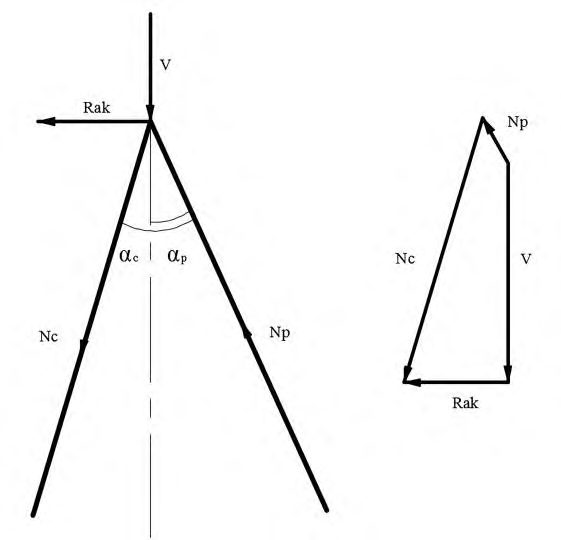
Примечание - См. обозначения в 16.1.14 и 16.1.15.
Рисунок 16.1 - Сопротивление сдвигу призмы замененного грунта при сейсмическом воздействии
СП 287.1325800.2016
16.2Основные конструктивные требования
В сооружениях массивовой кладки следует использовать фасонные в поперечном сечении сооружения блоки или монолитную железобетонную обвязочную балку (шпонку) в верхнем курсе массивов.
В сооружениях эстакадного типа рекомендуется предусматривать пластические поглотители энергии колебаний (устройства типа диагональных связей между сваями эстакады), гасители колебаний или сейсмоизоляцию плиты верхнего строения.
При возведении сооружения рекомендуется обеспечить одинаковое предварительное напряжение анкерных тяг.
На анкерных тягах рекомендуется постановка специальных элементов, предназначенных для выравнивания усилий в анкерах в процессе эксплуатации сооружения.
1 - шпонка; 2 - каркас; 3 - бетон класса B35 на легком заполнителе; 4 - полки плит покрытия; 5 - цементно-бетонное покрытие
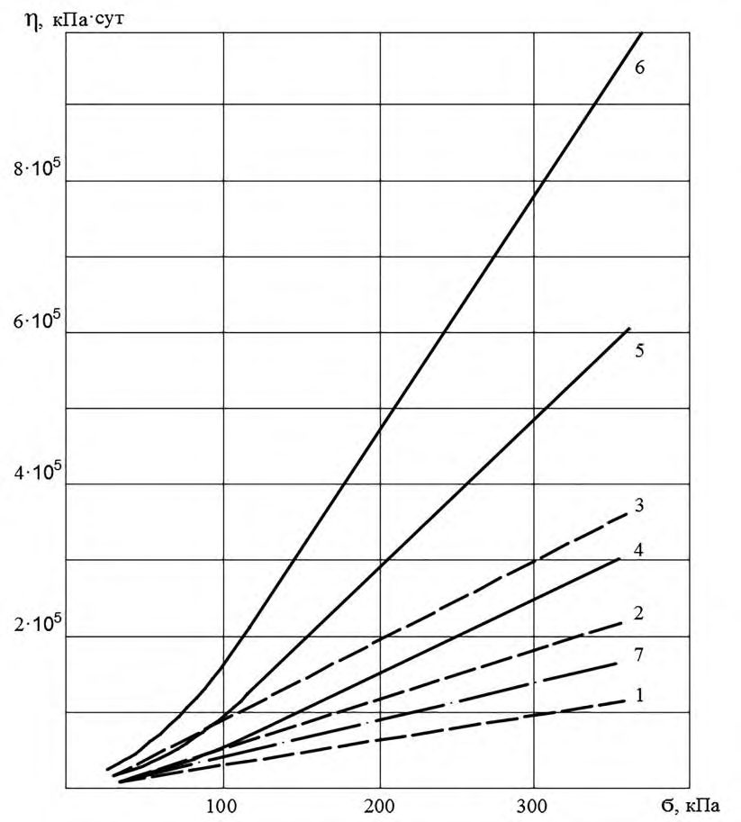
Рисунок 16.2 - Омоноличивание сборных плит покрытия
Антисейсмические швы в плитах покрытий верхнего строения следует закрывать компенсаторами или нательниками из оцинкованной стали, алюминия или пластмассы, не препятствующих их взаимному перемещению.
Швы между секциями заполняются упругими прокладками, не препятствующими горизонтальным смещениям секций. В качестве прокладок следует применять ленты из пенопласта, губчатой резины и других упругих материалов.
Целесообразность соединения секций эстакад между собой специальными связями, препятствующими относительному сдвигу секций в направлении, перпендикулярном продольной оси сооружения, устанавливают по результатам сопоставления расчетов на основные сочетания нагрузок с учетом сил навала судов и на особое сочетание нагрузок с учетом сейсмических сил. При этом конструкция связей должна исключать возможность их хрупкого разрушения при сейсмических колебаниях.
Рекомендуемая конструкция связей между секциями показана на рисунке 16.3.
СП 287.1325800.2016 одной из опор перекидными плитами, обеспечивающими раздельную работу эстакады и тылового сопряжения.
1 - стержень; 2 - труба; 3 - бетон омоноличивания; 4 - анкерующая арматура; 5 - сборный ригель
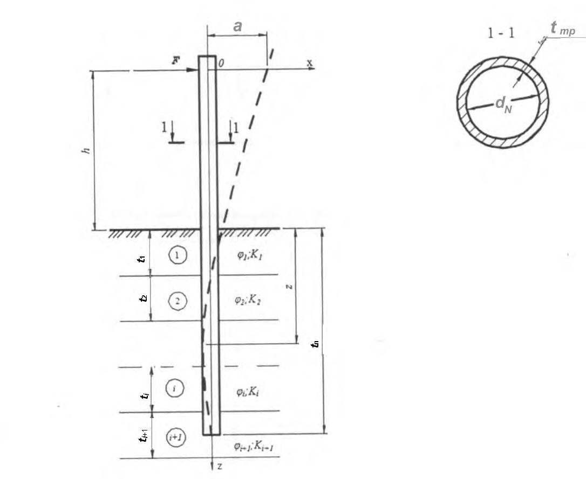
Рисунок 16.3 - Конструкция связи между секциями причала
Для придания большей жесткости омоноличивания стыкам ригелей со сваями необходимо применять безусадочный цемент, предусматривать мероприятия, препятствующие усадке бетона омоноличивания.
Узлы соединения железобетонных ригелей с железобетонными сваямиоболочками должны быть усилены применением сборных сеток, спиралей или замкнутых хомутов с учетом знакопеременных нагрузок.
17Строительство причальных сооружений 17.1 Общие положения
К работам по монтажу оборудования, устройству различных коммуникаций, укладке железнодорожных путей, электромонтажных работ, телефонизации и т. п. должны привлекаться на условиях субподряда профильные организации.
17.2Подготовительные работы
СП 287.1325800.2016
- создание заказчиком опорной геодезической сети (высотные реперы, главные оси сооружений, опорная строительная сетка, красные линии);
- закрепление в натуре границ строительной площадки, установление межевых знаков, которые также осуществляются заказчиком своими средствами за свой счет;
- освоение строительной площадки - расчистка территории строительства, снос неиспользуемых в процессе работ строений и другие работы;
- создание складского хозяйства, мастерских и подсобных производств, обслуживающих строительное производство;
- устройство или монтаж временных жилых и производственных сооружений, а также возведение полностью или частично постоянных объектов порта (предприятия), предусмотренных к использованию для нужд строительства (например, энергосеть, водопровод, дороги, жилые здания и т. д.);
- инженерная подготовка строительной площадки - первоочередные работы по планировке территории, обеспечивающей организацию временных стоков поверхностных вод, перенос существующих подземных и надземных сетей, устройство постоянных или временных подъездных железнодорожных путей и автомобильных дорог, постройка причалов и в отдельных случаях судоходных трасс, устройство временных или постоянных источников и сетей водоснабжения и энергоснабжения, устройство телефонной и радиосвязи;
- организация и постройка полигона по изготовлению железобетонных и бетонных конструкций.
- сооружать склады на площадках, не подлежащих застройке в течение периода их эксплуатации и не затопляемых паводковыми водами;
- склады сборных конструкций и изделий следует располагать в зоне действия монтажных кранов или соответствующего подъемно-транспортного оборудования.
17.3Геодезические работы
Геодезические работы следует проводить в соответствии с [10].
17.4Строительство причальных сооружений из бетонных массивов
СП 287.1325800.2016 необходимо увеличить на период до наступления температуры воздуха выше 5 °С с последующим выдерживанием в течение срока, установленного по [10, таблица 4].
Опалубку вертикальных шахт ключевых отверстий разрешается разбирать при достижении бетоном прочности 2,5 МПа, а опалубку строповочных ящиков - только при достижении 100 %-ной проектной прочности бетона.
СП 287.1325800.2016 транспортных средств не допускается. Каждый массив следует укладываться на место по заранее установленным буйкам.
В случае, когда условия производства работ не позволяют обеспечить указанное выше требование, массив следует укладывать под воду на время, достаточное для оттаивания образовавшейся ледяной корки, и только после этого устанавливать в конструкцию.
Во время перерывов в работе при отрицательных температурах воздуха оснастка и приспособления для укладки массивов должны быть погружены в воду.
17.5Строительство причальных сооружений из массивов-гигантов
Допустимые отклонения от проектных размеров сборных железобетонных элементов для изготовления массивов-гигантов не должны превышать значений, приведенных в [10, таблица 6].
При наполнении массива-гиганта водой тросы лебедок должны быть туго натянуты. В процессе погружения за створами необходимо вести непрерывное наблюдение, отклонения от створов следует немедленно выправлять. При опускании массива-гиганта должны быть приняты меры, обеспечивающие его стенки и углы от повреждений в случае ударов о ранее установленный массив-гигант путем подвешивания мягких кранцев на углах.
В морях с приливно-отливными колебаниями уровня погружение массивагиганта следует начинать в начале отлива.
В случае если отклонения установленного массива-гиганта от проектного положения превышают допустимые, вода из массива-гиганта должна быть удалена в объеме, достаточном для его всплытия, массив-гигант должен быть отведен в сторону, постель выровнена. После этого массив-гигант следует устанавливать вторично.
Первую нивелировку следует проводить немедленно после установки массивагиганта на постель, вторую - после его загрузки.
К моменту начала загрузки массива-гиганта необходимо иметь в зоне работ запас материалов, достаточный для его заполнения за один прием без перерыва. Способы доставки материалов и схема механизации загрузки в каждом конкретном случае устанавливаются ППР.
17.6Строительство причальных сооружений типа больверк
Железобетонный шпунт должен соответствовать требованиям ГОСТ 13015. Использование стального шпунта разрешается при наличии сопровождающей
СП 287.1325800.2016 документации согласно ГОСТ 7566. Стальной шпунт должен соответствовать требованиям ГОСТ 4781.
Перед забивкой каждая шпунтина должна быть проверена на прямолинейность путем протаскивания через замки обрезка шпунтины длиной не менее 2 м. Одновременно следует проводить выправление небольших изгибов шпунта и вмятин замков.
Анкерные тяги должны быть проверены на соответствие требованиям проекта.
Сварные соединения стальных конструкций должны быть выполнены в соответствии с указаниями проекта и ГОСТ 5264.
СП 287.1325800.2016
17.7Строительство причалов эстакадного типа
Деревянные сваи следует изготовлять из лесоматериалов, удовлетворяющих требованиям СП 24.13330, которые перед изготовлением из них свай должны быть освидетельствованы комиссией с участием представителя заказчика.
Стальные трубчатые свайные элементы, поступающие в готовом виде или изготовляемые из стандартных труб на строительной площадке, не должны иметь вмятин и трещин. При устройстве свайных оснований причальных эстакад надлежит соблюдать требования СП 45.13330.
Состыкованная на полную длину свая-оболочка должна быть размечена по длине, замаркирована и принята по акту.
Наращивание свай-оболочек в процессе их погружения допускается в случаях, когда полная длина сваи-оболочки превышает возможности монтажного крана по высоте подъема и грузоподъемности.
Сварные стыки перед заделкой их бетоном должны быть освидетельствованы с оформлением акта на скрытые работы. К акту прилагаются документы об испытании сварных образцов, данные о фактических параметрах сварного шва и испытании его на водонепроницаемость, если это требуется проектом.
Омоноличивание бетоном зоны сварного стыка следует проводить на стенде стыкования.
СП 287.1325800.2016
При небольшом числе свай головы их допускается срубать с помощью отбойных молотков.
При срубке голов свай в целях обеспечения необходимой точности на сваи надлежит устанавливать бандаж из полосовой стали толщиной 5-6 мм, высотой 100 мм.
Оборачиваемость временных раскрепляющих конструкций определяется ПОС.
Погружение свай должно опережать работы по монтажу верхнего строения не более чем на одну захватку.
Проверку положения элементов верхнего строения и соответствия его проекту следует выполнять с помощью геодезического инструмента.
Установка последующих элементов верхнего строения на предыдущие в том случае, если это связано с промежуточным омоноличиванием узлов, разрешается после достижения бетоном омоноличивания 70 % проектной прочности.
После снятия опалубки потолочные поверхности должны быть освидетельствованы. В случае обнаружения каверн и трещин их следует заделать по указаниям проектной организации.
17.8Подводно-технические работы
Технология подводно-технических работ при строительстве причальных сооружений приведена в [30].
17.9Контроль качества производства работ
Особый контроль должен быть установлен за правильностью использования различных видов цементов в соответствии с назначением бетона для различных зон сооружения.
СП 287.1325800.2016 перед укладкой, сроков распалубливания, правильности ухода за бетоном, а также качества бетона и выполненной конструкции или отдельных элементов и изделий.
Контроль прочности бетона в конструкциях следует осуществлять в дополнение к стандартным испытаниям образцов методами неразрушающего контроля.
Контроль морозостойкости бетона осуществляется путем испытания контрольных образцов в соответствии с ГОСТ 10060.
Контрольные образцы должны твердеть в условиях, идентичных условиям твердения бетона конструкции, при изготовлении которой они отбираются.
Таблица А.1
Приложение А (справочное)
Профили и сортамент шпунтовых свай
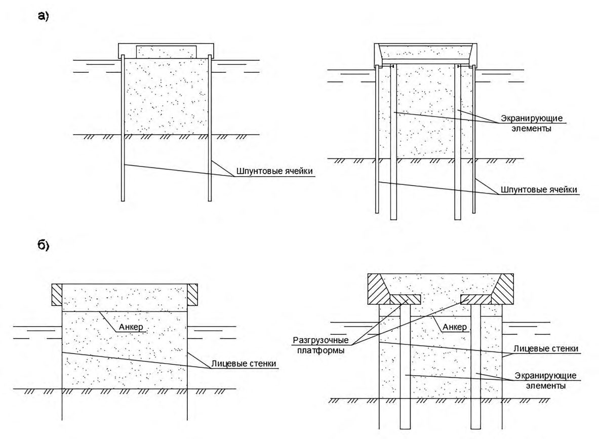
| № п/п | Основные технические характеристики | Нормативные документы на шпунтовые сваи | |
|---|---|---|---|
| Шпунт корытного профиля | Шпунт корытного профиля | Шпунт корытного профиля | Шпунт корытного профиля |
| 1 | H = 400-500 мм B = 400 -550 мм t = 10- 12 мм 𝑠 = 15-23 мм 𝐽 проф. стены = 10 160 см 4 76 437 см 4 𝑊 проф. стены = 461 см³ 3 555 см³ 𝑚 1м проф. = 113 кг 227,5кг м² ⁄ | ТУ 14-102-8- 2003 ГОСТ Р 53629 | |
| 2 | уд. расх. ст H = 400-800 мм B = 1 000-1 500 мм t = 10 -14 мм s = 10-25 мм 𝐽 стены = 36 600 см 4 -399 800 см 4 𝑊 стены = 1 830 см³ -9 995 см³ 𝑚 уд. расх. ст = 135кг м² ⁄ -338кг м² ⁄ | ГОСТ Р 53629 |
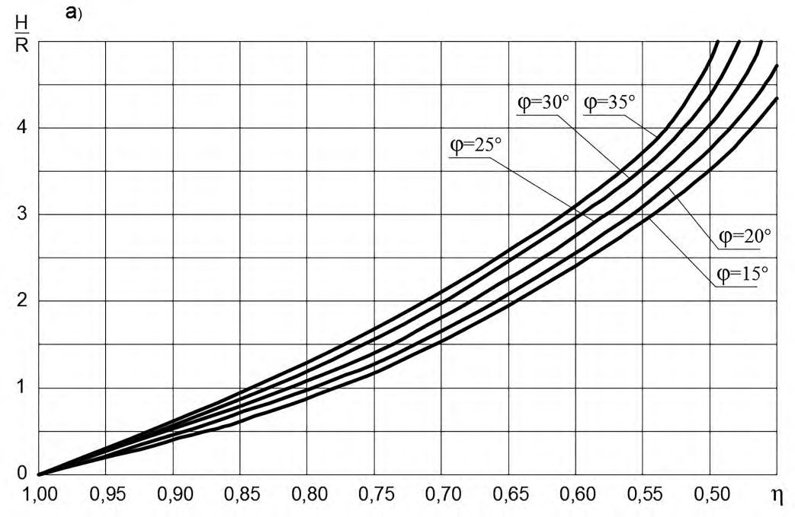
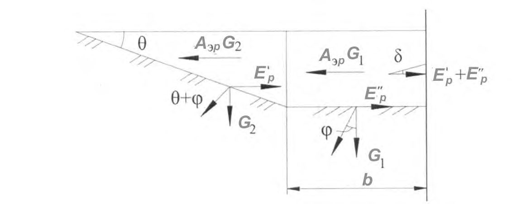
| № п/п | Основные технические характеристики | Нормативные документы на шпунтовые сваи | |
|---|---|---|---|
| Шпунт трубчатый сварной (ШТС) | Шпунт трубчатый сварной (ШТС) | Шпунт трубчатый сварной (ШТС) | Шпунт трубчатый сварной (ШТС) |
| 3 | Труба Ø530-1620 мм t = 10- 18 мм δ = 8-20 мм 𝐽 проф стены = 45 106 см 4 64 232 см 4 - 3 216 296 см 4 2 022 697 см 4 𝑊 проф стены = 1 702 см³ 2 423 см³ - 39 707 см³ 24 972 см³ 𝑚 1 м проф = 153 кг 203кг м² ⁄ - 839 кг 521кг м² ⁄ | ГОСТ Р 52664 ТУ 5264-014- -01393674-2012 | |
| 4 | уд. расх. ст Труба Ø530-1620 мм t = 10- 18 мм δ = 8-20 мм 𝐽 проф стены = 44 850 см 4 59 932 см 4 - 3 216 039 см 4 1 717 010 см 4 𝑊 проф стены = 1 692 см³ 2 261 см³ - 39 704 см³ 21 198 см³ 𝑚 1 м проф уд. расх. ст = 149 кг 189кг м² ⁄ - 835 кг 442кг м² ⁄ | ГОСТ Р 52664 ТУ 5264-014- -01393674-2012 |
| № п/п | Основные технические характеристики | Нормативные документы на шпунтовые сваи |
|---|---|---|
| 5 | Труба Ø530-1620 мм t = 10- 18 мм s = 10-12 мм δ = 8-20 мм 𝐽 проф стены = 54 592 см 4 54 811 см 4 - 2 604 536 см 4 1 256 227 см 4 𝑊 проф стены = 2 060 см³ 2 068 см³ - 39 707 см³ 24 972 см³ 𝑚 1 м проф уд. расх. ст = 203 кг 204кг м² ⁄ - 887 кг 426кг м² ⁄ | ГОСТ Р 52664 ТУ 5264-003- -13512256-09 |
| 6 | Труба Ø530-1120 мм | |
| t = 10-14 мм | ||
| δ = 9-14 мм | ||
| 𝐽 проф стены = 56 300 см 4 62 600 см 4 - 750 200 см 4 513 300 см 4 | ГОСТ Р 52664 | |
| 2 125 см³ 13 395 см³ | ТУ 5264-003- | |
| 𝑊 проф стены = 2 360 см³ - 9 165 см³ | -13512256-09 | |
| 𝑚 = 202 кг - 471 кг | ||
| 1 м проф уд. расх. ст 232кг м² ⁄ 321кг м² ⁄ |
| № п/п | Основные технические характеристики | Нормативные документы на шпунтовые сваи |
|---|---|---|
| 7 | Труба Ø530-1120 мм t = 10-14 мм | ГОСТ Р 52664 ТУ 5264-003- -13512256-09 |
| δ = 9-14 мм | ||
| 𝐽 проф стены = 51 500 см 4 57 400 см 4 - 745 500 см 4 504 500 см 4 | ||
| 𝑊 проф стены = 1 945 см³ 2 165 см³ - 13 310 см³ 9 010 см³ | ||
| 𝑚 1 м проф уд. расх. ст = 197 кг 207кг м² ⁄ - 466 кг 306кг м² ⁄ | ||
| 8 | Труба Ø530-1620 мм | |
| t = 10- 18 мм | ||
| δ = 8-20 мм | ||
| 𝐽 проф стены = 44 891 см 4 43 584 см 4 - 3 217 690 см 4 1 517 778 см 4 | ГОСТ Р 52664 | |
| 𝑊 проф стены = 1 694 см³ 1 645 см³ - 39 725 см³ 18 738 см³ | ТУ 5264-003- -13512256-09 | |
| 𝑚 1 м проф = 177 кг 2 - 863 | ||
| уд. расх. ст 172кг м ⁄ кг 407кг м² ⁄ |
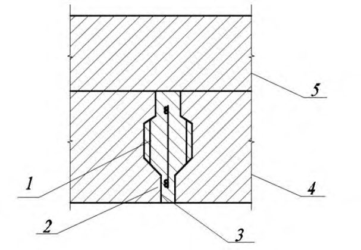
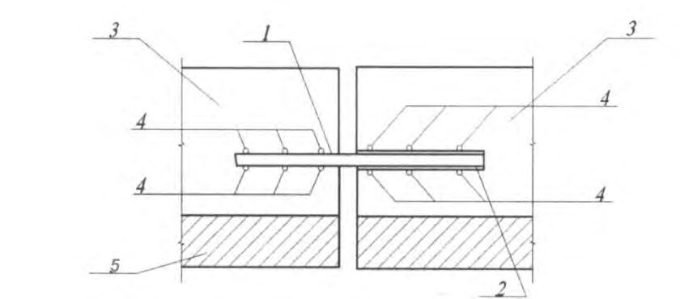
| № п/п | Основные технические характеристики | Нормативные документы на шпунтовые сваи |
|---|---|---|
| 9 | Труба Ø530-1620 мм t = 10- 18 мм δ = 8-20 мм 𝐽 проф = 44 688,7 см 4 - 3 217 509,5 см | ГОСТ Р 52664 |
| стены - 4 - 𝑊 проф = 1 693,7 см³ 39 722,3 см³ | ТУ 5264-002- -13512256-2008 | |
| стены - - - | ГОСТ Р 52664 | |
| 𝑚 1 м проф уд. расх. ст = 122,4 кг - - 806,8 кг - | ГОСТ Р 52664 | |
| 10 | Труба Ø530-1620 мм | ГОСТ Р 52664 ТУ 5264-002- |
| t = 10- 18 мм | ГОСТ Р 52664 ТУ 5264-002- | |
| δ = 8-20 мм | ГОСТ Р 52664 ТУ 5264-002- | |
| 𝐽 проф стены = 44 690,3 см 4 - - 3 217 513,5 см 4 - | ГОСТ Р 52664 ТУ 5264-002- | |
| 𝑊 проф стены = 1 694,5 см³ - - 39 722,4 см³ - | -13512256-2008 | |
| 𝑚 1 м проф уд. расх. ст = 132,8 кг - - 821,2 кг - | ГОСТ Р 52664 ТУ 5264-002- | |
| ГОСТ Р 52664 ТУ 5264-002- |
| № п/п | Основные технические характеристики | Нормативные документы на шпунтовые сваи |
|---|---|---|
| 11 | Труба Ø530-1620 мм t = 10- 18 мм δ = 8-20 мм 𝐽 проф стены = 964 884 см 4 - - 33 485 429,2 см 4 - 𝑊 проф стены = 3 854 см³ - - 49 480,1 см³ - 𝑚 1 м проф уд. расх. ст = 277,3 кг - - 1191 кг - | ГОСТ Р 52664 ТУ 5264-002- -13512256-2008 |
| 12 | Труба Ø530-1620 мм t = 10- 18 мм δ = 8-20 мм 𝐽 проф стены = 96 488,4 см 4 74 558,5 см 4 - 3 485 818,1 см 4 1 110 792,7 см 4 𝑊 проф стены = 3 641,1 см³ 2 813,5 см³ - 49 096 см³ 15 645 см³ 𝑚 1 м проф. уд. расх. ст. = 296,2 кг 245,8кг м² ⁄ - 1 243,4 кг 389кг м² ⁄ | ГОСТ Р 52664 ТУ 5264-014- 01393674-2012 |
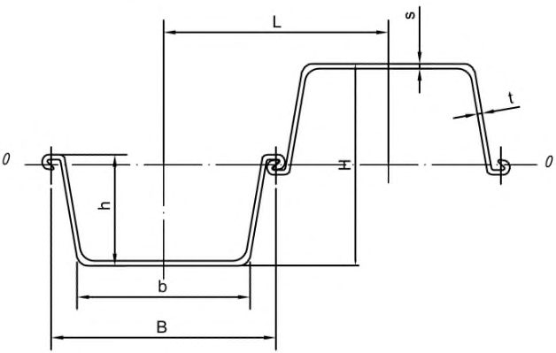
| № п/п | Основные технические характеристики | Нормативные документы на шпунтовые сваи |
|---|---|---|
| 13 | Труба Ø530-1420 мм t = 10-16 мм δ = 7-42 мм см | ГОСТ Р 52664 |
| 𝐽 проф стены = 35 220,7 см 4 - - 4 097 403,3 4 - | ТУ 14-3Р-117- 2011 | |
| 𝑊 проф стены = 1 344,1 см³ - - 57 880,8 см³ - |
Примечание - В настоящей таблице использованы следующие условные обозначения:
- B , B p - ширина шпунтового профиля по осям замков, мм;
- b - ширина корытного шпунтового профиля, мм;
- D - наружный диаметр трубчатого шпунтового профиля, мм;
- H - высота стенки шпунтового профиля, мм;
J проф - момент инерции шпунтового профиля, см 4 ;
- J стены - момент инерции шпунтовой стенки, см 4 ;
- L - расстояние между трубчатыми шпунтовыми профилями по осям труб, мм;
- m - масса 1 пог. м шпунтового профиля, кг;
- s , t , t 1 - толщина стенки шпунта, мм;
W проф - момент сопротивления шпунтового профиля, см³ ;
W стены - момент сопротивления 1 м шпунтовой стенки, см³ ;
- δ - смещение замков по отношению к их номинальному положению на концах шпунтового профиля, мм.
СП 287.1325800.2016
БПриложение Б (справочное). Бесшовные, электросварные прямошовные и спиральношовные трубы
Таблица Б.1
| Обозначение нормативного документа | Марка стали; класс прочности |
|---|---|
| ГОСТ 8696 | Ст2пс, Ст2сп, Ст3сп, Ст3пс, 20; К45, К50, К52, К55 |
| ГОСТ 10704 | Ст2пс, Ст2сп, Ст3сп, Ст3пс |
| ГОСТ 10705 | Ст3сп, 20, 17Г1С, 17Г1С-У, 13ГС, 09ГСФ |
| ГОСТ 10706 | Ст2пс, Ст2сп, Ст3сп, Ст3пс |
| ГОСТ 20295 | К52, К55, К60 |
| ГОСТ 31447 | К42-К60 |
| ГОСТ 32569 | 20, 17Г1С, 17Г1С-У, 17ГС, 10Г2ФБ |
| ГОСТ Р 52664 | 0,9ГСФ; К52 |
| ГОСТ Р 54918 | Х70 |
ВПриложение В (рекомендуемое). Дренажные устройства
- В.1 Для снятия подпора грунтовых вод с конструкции сооружения при засыпке пазух несвязным грунтом в конструкцию сооружения следует включать щебеночный (гравийный) дренаж с водоотводами в сторону акватории. Назначение дренажа пропускать воду и предотвращать вымывание грунта засыпки.
- В.2 Гранулометрический состав материала дренажа подбирают из условия, чтобы размеры частиц самой мелкой его фракции в три-четыре раза превышали размеры удерживаемых частиц грунта.
- В.3 Конструкцию дренажной призмы выбирают в зависимости от грунта обратной засыпки.
Рекомендуемая конструкция дренажной призмы при выполнении обратной засыпки мелким песком представлена на рисунке В.1, а.
1 - мелкозернистый песок; 2 - среднезернистый песок; 3 - гравелистый песок; 4 - щебень из смеси фракций 40+70 мм - 30 %; 3+10 мм - 40 %; 5 - камень 15+20 см; 6 - дренажная призма; 7 - стальной шпунт; 8 - железобетонный оголовок; 9 - водовыпуск; 10 - средний уровень воды; 11 - железобетонная свая-оболочка; 12 - уплотнение шва из досок с заполнением бетоном; 13 - низкий уровень воды
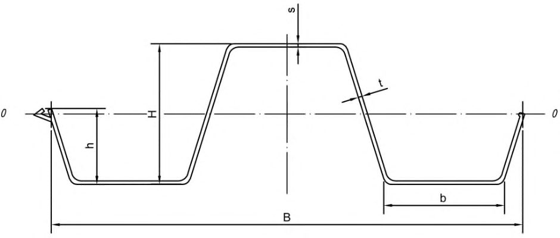
Рисунок В.1 - Схемы дренажных устройств при выполнении обратной засыпки мелким песком (а) и расположении дренажной призмы за стенкой (б)
СП 287.1325800.2016
При выполнении обратной засыпки среднезернистым песком в конструкции дренажной призмы на рисунке В.1, а, следует исключить слой 2 .
При выполнении обратной засыпки крупнозернистым песком в конструкции дренажной призмы на рисунке В.1, а, следует исключить слои 2 и 3 .
При засыпке скальным грунтом гранулометрический состав дренажного фильтра следует подбирать таким образом, чтобы он удерживал самую мелкую фракцию скального грунта.
В.4 Боковые и верхние фильтрующие слои дренажной призмы, отсыпаемые из одной фракции, должны иметь толщину не менее 25 см, а слои из смешанного щебня не менее 50 см.
В.5 Дренажная призма устраивается непрерывной вдоль линии кордона, непосредственно за лицевой стенкой. Схемы расположения дренажной призмы за стенкой приведены на рисунке В.1, б. Водоотводные отверстия в лицевой стенке следует располагать со следующим шагом:
- в безливных морях при ожидаемом подпоре грунтовых вод до 1 м относительно расчетного уровня воды - приблизительно 10 м, при подпоре более 1 м - приблизительно 5 м;
- в ливных морях с амплитудой колебаний уровня более 2 м - приблизительно 3 м.
Водоотводные отверстия рекомендуется располагать ниже среднего уровня воды в безливных морях или среднего уровня воды при отливе в ливных морях, но не выше 0,5 м над расчетным уровнем.
ГПриложение Г (рекомендуемое). Определение бокового давления грунта на стенку
Г.1 Интенсивность горизонтальной составляющей активного давления грунта ра при плоской поверхности грунта определяют по формуле
где рa гр - интенсивность горизонтальной составляющей активного давления от веса грунта, кПа, определяемая по Г.2; ра q - интенсивность горизонтальной составляющей активного давления от равномерно распределенных нагрузок, расположенных на территории причала, кПа, определяемая по Г.5.
Г.2 Интенсивность горизонтальной составляющей активного давления ра гр от веса грунта определяют по формуле
где q z - интенсивность вертикального давления грунта, кПа, определяемая по Г.3;
a -коэффициент горизонтальной составляющей активного давления грунта, определяемый по Г.4; с - удельное сцепление грунта, кПа;
ac - коэффициент горизонтальной составляющей активного давления грунта от сил сцепления, определяемый по Г.4.
Примечание - В случаях, когда произведение c a c больше произведения qz ∙ а , величину ра гр на данном участке принимают равной нулю.
Г.3 Интенсивность вертикального давления грунта q z определяют по формуле
где i -порядковый номер слоя грунта с одинаковыми физико-механическими характеристиками в пределах высоты стенки;
i - удельный вес i -го слоя грунта, кН/м³ ; z - текущая координата по высоте стенки, м; где
СП 287.1325800.2016 hi - высота i -го слоя, м; 𝑞𝑧𝑖-1 - интенсивность вертикального давления грунта вышележащих слоев, кПа.
Г.4 Коэффициенты горизонтальной составляющей активного давления грунта а и а с рекомендуется определять в соответствии с требованиями СП 101.13330, по формулам:
здесь - угол трения грунта по расчетной плоскости, град, принимаемый не более 0,667 для расчетной плоскости, проходящей на контакте грунта с сооружением, или = при плоскости, проходящей в грунте, но не более 30°;
- угол внутреннего трения грунта, град;
- угол наклона расчетной плоскости стенки к вертикали, град, принимаемый со знаком «минус» при наклоне стенки на грунт;
- угол наклона поверхности грунта к горизонтали, град, принимаемый со знаком «плюс» при повышении отметки территории.
При горизонтальной поверхности грунта ( = 0) и вертикальной расчетной плоскости ( = 0) коэффициенты горизонтальной составляющей активного давления грунта 𝜆𝑎 и 𝜆𝑎с следует принимать по таблице Г.1.
Таблица Г.1 Коэффициенты горизонтальной составляющей активного давления грунта
| , град | а | а | а | а | а с | а с | а с | а с |
|---|---|---|---|---|---|---|---|---|
| , град | =0 | = 0,5 | = 0,667 | = | = 0 | = 0,5 | = 0,667 | = |
| 1 | 0,97 | 0,96 | 0,96 | 0,95 | 1,97 | 2,39 | 2,51 | 2,74 |
| 2 | 0,93 | 0,92 | 0,91 | 0,91 | 1,93 | 2,33 | 2,45 | 2,66 |
| 3 | 0,90 | 0,88 | 0,88 | 0,86 | 1,90 | 2,28 | 2,38 | 2,58 |
| 4 | 0,87 | 0,84 | 0,84 | 0,82 | 1,87 | 2,22 | 2,32 | 2,51 |
| 5 | 0,84 | 0,81 | 0,80 | 0,79 | 1,83 | 2,17 | 2,26 | 2,44 |
| 6 | 0,81 | 0,78 | 0,77 | 0,75 | 1,80 | 2,12 | 2,21 | 2,37 |
| 7 | 0,78 | 0,75 | 0,74 | 0,72 | 1,77 | 2,07 | 2,15 | 2,31 |
| 8 | 0,76 | 0,72 | 0,70 | 0,68 | 1,74 | 2,02 | 2,10 | 2,24 |
| 9 | 0,73 | 0,69 | 0,68 | 0,65 | 1,71 | 1,97 | 2,05 | 2,18 |
| 10 | 0,70 | 0,66 | 0,65 | 0,63 | 1,68 | 1,93 | 2,00 | 2,13 |
| 11 | 0,68 | 0,63 | 0,62 | 0,60 | 1,65 | 1,89 | 1,95 | 2,07 |
| 12 | 0,66 | 0,61 | 0,60 | 0,57 | 1,62 | 1,84 | 1,91 | 2,02 |
| 13 | 0,63 | 0,58 | 0,57 | 0,55 | 1,59 | 1,80 | 1,86 | 1,96 |
| 14 | 0,61 | 0,56 | 0,55 | 0,52 | 1,56 | 1,76 | 1,82 | 1,91 |
| 15 | 0,59 | 0,54 | 0,52 | 0,50 | 1,53 | 1,72 | 1,77 | 1,87 |
| 16 | 0,57 | 0,52 | 0,50 | 0,48 | 1,51 | 1,68 | 1,73 | 1,82 |
| 17 | 0,55 | 0,50 | 0,48 | 0,46 | 1,48 | 1,65 | 1,69 | 1,77 |
| 18 | 0,53 | 0,48 | 0,46 | 0,44 | 1,45 | 1,61 | 1,65 | 1,73 |
| 19 | 0,51 | 0,46 | 0,44 | 0,42 | 1,43 | 1,57 | 1,61 | 1,69 |
| 20 | 0,49 | 0,44 | 0,43 | 0,40 | 1,40 | 1,54 | 1,58 | 1,65 |
| 21 | 0,47 | 0,42 | 0,41 | 0,38 | 1,37 | 1,50 | 1,54 | 1,61 |
| 22 | 0,45 | 0,41 | 0,39 | 0,37 | 1,35 | 1,47 | 1,50 | 1,57 |
| 23 | 0,44 | 0,39 | 0,38 | 0,35 | 1,32 | 1,44 | 1,47 | 1,53 |
| 24 | 0,42 | 0,37 | 0,36 | 0,34 | 1,30 | 1,41 | 1,44 | 1,49 |
| 25 | 0,41 | 0,36 | 0,35 | 0,32 | 1,27 | 1,38 | 1,40 | 1,45 |
| 26 | 0,39 | 0,34 | 0,33 | 0,31 | 1,25 | 1,34 | 1,37 | 1,42 |
| 27 | 0,38 | 0,33 | 0,32 | 0,29 | 1,23 | 1,31 | 1,34 | 1,38 |
| 28 | 0,36 | 0,32 | 0,30 | 0,28 | 1,20 | 1,29 | 1,31 | 1,35 |
| 29 | 0,35 | 0,30 | 0,29 | 0,27 | 1,18 | 1,26 | 1,28 | 1,32 |
| 30 | 0,33 | 0,29 | 0,28 | 0,26 | 1,15 | 1,23 | 1,25 | 1,29 |
| 31 | 0,32 | 0,28 | 0,27 | 0,25 | 1,13 | 1,20 | 1,22 | 1,25 |
| 32 | 0,31 | 0,27 | 0,26 | 0,24 | 1,11 | 1,17 | 1,19 | 1,22 |
| 33 | 0,29 | 0,26 | 0,25 | 0,23 | 1,09 | 1,15 | 1,16 | 1,19 |
| 34 | 0,28 | 0,25 | 0,23 | 0,22 | 1,06 | 1,12 | 1,13 | 1,15 |
| 35 | 0,27 | 0,23 | 0,22 | 0,21 | 1,04 | 1,09 | 1,1,1 | 1,12 |
| 36 | 0,26 | 0,20 | 1,02 | 1,07 | 1,08 | 1,09 | ||
| 0,22 | 0,21 | |||||||
| 37 | 0,25 | 0,21 | 0,21 0,20 | 0,20 | 1,00 | 1,04 | 1,05 | 1,07 |
| 38 | 0,24 | 0,21 | 0,19 | 0,98 | 1,02 | 1,03 | 1,04 | |
| 39 40 | 0,23 0,22 | 0,20 0,19 | 0,19 0,18 | 0,18 0,17 | 0,95 0,93 | 0,99 0,97 | 1,00 0,98 | 1,01 0,98 |
- Г.5 Интенсивность горизонтальной составляющей активного давления рaq от равномерно распределенных нагрузок интенсивностью qj , расположенных на территории причала, определяются:
- при бесконечной по ширине причала полосе нагрузке (bq = ), размещаемой непосредственно за расчетной плоскостью, где где здесь где
СП 287.1325800.2016
- при бесконечной по ширине причала полосе нагрузки (bq = ), размещаемой на расстоянии aq от расчетной плоскости,
z - текущая координата по высоте стенки, м;
- при полосе нагрузки шириной bq , размещаемой непосредственно за расчетной плоскостью,
- при полосе нагрузки шириной bq , размещаемой на расстоянии a q от расчетной плоскости,
Значения kq,i принимают по таблице Г.2 в зависимости от значения ctg i .
СП 287.1325800.2016
Таблица Г.2 Коэффициенты для вычисления ординат эпюры горизонтальной составляющей давления грунта от равномерно распределенной нагрузки
| ctg i | k i | ctg i | k i | ctg i | k i | ctg i | k i |
|---|---|---|---|---|---|---|---|
| 19,080 и более | 0,000 | 1,804 | 0,180 | 1,049 | 0,470 | 0,638 | 0,760 |
| 11,430 | 0,000 | 1,759 | 0,190 | 1,032 | 0,480 | 0,625 | 0,770 |
| 7,120 | 0,005 | 1,716 | 0,200 | 1,016 | 0,490 | 0,611 | 0,780 |
| 5,480 | 0,010 | 1,676 | 0,210 | 1,000 | 0,500 | 0,597 | 0,790 |
| 4,700 | 0,015 | 1,637 | 0,220 | 0,984 | 0,510 | 0,583 | 0,800 |
| 4,270 | 0,020 | 1,600 | 0,230 | 0,968 | 0,520 | 0,568 | 0,810 |
| 3,960 | 0,025 | 1,567 | 0,240 | 0,953 | 0,530 | 0,554 | 0,820 |
| 3,690 | 0,030 | 1,534 | 0,250 | 0,938 | 0,540 | 0,540 | 0,830 |
| 3,490 | 0,035 | 1,504 | 0,260 | 0,923 | 0,550 | 0,526 | 0,840 |
| 3,300 | 0,040 | 1,475 | 0,270 | 0,909 | 0,560 | 0,512 | 0,850 |
| 3,170 | 0,045 | 1,447 | 0,280 | 0,895 | 0,570 | 0,197 | 0,860 |
| 3,050 | 0,050 | 1,420 | 0,290 | 0,881 | 0,580 | 0,481 | 0,870 |
| 2,950 | 0,055 | 1,394 | 0,300 | 0,867 | 0,590 | 0,464 | 0,880 |
| 2,850 | 0,060 | 1,359 | 0,310 | 0,853 | 0,600 | 0,448 | 0,890 |
| 2,750 | 0,065 | 1,344 | 0,320 | 0,839 | 0,610 | 0,431 | 0,900 |
| 2,670 | 0,070 | 1,320 | 0,330 | 0,825 | 0,620 | 0,413 | 0,910 |
| 2,600 | 0,075 | 1,296 | 0,340 | 0,812 | 0,630 | 0,394 | 0,920 |
| 2,540 | 0,080 | 1,273 | 0,350 | 0,799 | 0,640 | 0,373 | 0,930 |
| 2,480 | 0,085 | 1,252 | 0,360 | 0,786 | 0,650 | 0,351 | 0,940 |
| 2,420 | 0,090 | 1,232 | 0,370 | 0,772 | 0,660 | 0,328 | 0,950 |
| 2,370 | 0,095 | 1,212 | 0,380 | 0,758 | 0,670 | 0,303 | 0,960 |
| 2,320 | 0,100 | 1,192 | 0,390 | 0,744 | 0,680 | 0,271 | 0,970 |
| 2,230 | 0,110 | 1,172 | 0,400 | 0,730 | 0,690 | 0,233 | 0,980 |
| 2,150 | 0,120 | 1,154 | 0,410 | 0,717 | 0,700 | 0,182 | 0,990 |
| 2,080 | 0,130 | 1,136 | 0,420 | 0,704 | 0,710 | 0,140 | 0,995 |
| 2,013 | 0,140 | 1,118 | 0,430 | 0,691 | 0,720 | 0,088 | 0,999 |
| 1,959 | 0,150 | 1,100 | 0,440 | 0,678 | 0,730 | 0,052 и | 1,000 |
| 1,902 | 0,160 | 1,083 | 0,450 | 0,665 | 0,740 | менее | |
| 1,852 | 0,170 | 1,066 | 0,460 | 0,651 | 0,750 | ||
| 1,804 | 0,180 | 1,049 | 0,470 | 0,638 | 0,760 |
Г.6 При наличии разгрузочной каменной призмы активное давление грунта, определяемое в предположении бесконечного простирания слоев грунта, в том числе и камня (Г.1), дополняется давлением от пригрузки грунта, расположенного в призме обрушения на откосе каменной призмы (рисунок Г.1).
Интенсивность горизонтальной составляющей дополнительного давления р а от пригрузки грунта следует определять по формулам:
- в пределах каменной призмы на высоте h к
- ниже каменной призмы на глубине d
СП 287.1325800.2016
где qр -интенсивность вертикального давления грунта (с учетом равномерно распределенных нагрузок по территории причала) на уровне пересечения откоса каменной призмы плоскостью обрушения, проведенной из точки на расчетной плоскости, в которой определяется давление грунта ра , кПа (Г.3);
a -коэффициент горизонтальной составляющей активного давления грунта, расположенного на откосе каменной призмы;
а к - коэффициент горизонтальной составляющей активного давления каменной отсыпки; аh ,1 , ah - проекции на вертикаль отрезков линии откоса каменной призмы, заключенных между плоскостями обрушения, проходящими соответственно через концы участков h к и d расчетной плоскости стенки, м, определяемые по формулам (Г.22, Г.23);
h к, d - высота (глубина) участков зоны распределения дополнительного давления грунта, м.
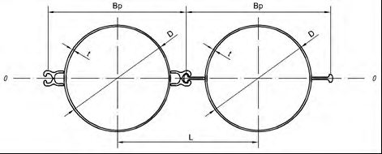
Примечание - См. обозначения в Г.6.
Рисунок Г.1 - К расчету активного давления грунта при наличии каменной призмы
Проекции аh ,1 и ah на вертикаль определяют по формулам
где h к - высота каменной призмы, м;
к - угол обрушения каменной отсыпки, град; b к - ширина каменной призмы поверху, м; m 0 - заложение откоса грунта над призмой; b п - ширина подошвы каменной призмы, м.
- Г.7 При наличии откоса на поверхности грунта (рисунок Д.2, а, б, в) эпюра интенсивности горизонтальной составляющей активного давления грунта определяется по двум эпюрам:
- эпюре 1 , построенной от точки пересечения линии, являющейся продолжением откоса, с расчетной плоскостью, как для неограниченного откоса;
- эпюре 2 , построенной от точки пересечения линии, являющейся продолжением горизонтальной поверхности полуоткоса или бермы, с расчетной плоскостью, как для горизонтальной поверхности грунта.
Примечание - См. обозначения в Г.4, Г.5.
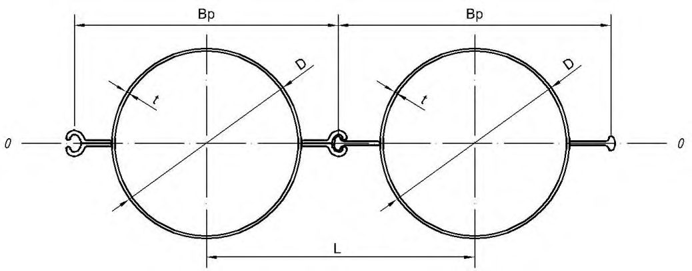
Рисунок Г.2 - К расчету активного давления грунта при наличии откоса на поверхности за стенкой
Эпюру 3 принимают в зависимости от схемы очертания поверхности грунта:
- для схемы на рисунке Г.2, а, от верха расчетной плоскости до точки 0 (точка пересечения эпюр 1 и 2 ) - по эпюре 1 , ниже - по эпюре 2 ;
- для схемы на рисунке Г.2, б, в, от верха расчетной плоскости до точки 0 - по эпюре 2 , ниже - по эпюре 1 .
СП 287.1325800.2016
Г.8 Интенсивность вертикальной составляющей активного давления грунта рav определяют по формуле
где pa - интенсивность горизонтальной составляющей активного давления грунта, кПа.
Г.9 Горизонтальная Еa и вертикальная Еav составляющие активного давления грунта определяются площадью эпюр интенсивности давления грунта.
Г.10 Интенсивность горизонтальной составляющей силосного давления грунта между стенками определяют по формуле
где qz сил - интенсивность вертикального давления грунта между стенками, кПа, определяемая по Г.11;
а -коэффициент горизонтальной составляющей активного давления грунта, принимаемый по Г.4;
где z - текущая координата по высоте стенки, м; hi - высота i -го слоя грунта, м; h 0 - величина, м, определяемая для каждого i -го слоя грунта по формуле (Г.27) или (Г.28):
- для плоской задачи где А - площадь ячейки, м² ; u - периметр ячейки, м.
где а - расстояние между расчетными плоскостями стенок, м;
- угол трения грунта о стенку, град (см. Г.4);
- для ячеистых конструкций (оболочек)
Примечание - В случаях, когда 𝑐 tgφ [1 - 𝜆 𝑎 (1 - 𝑚 сил )] > 𝑞𝑧𝑖-1сил , величину 𝑝𝑎сил на данном участке принимают равной нулю.
Г.11 Интенсивность вертикального давления грунта между стенками определяют по формуле
где 𝑞𝑧𝑖-1,сил - интенсивность вертикального давления грунта между стенками на поверхности i -го слоя с учетом равномерно распределенной нагрузки на поверхности грунта между стенками интенсивностью q 0, кПа,
где qj - интенсивность равномерно распределенной нагрузки, расположенной в пределах а , кПа; bj - полоса нагрузки интенсивностью qj , м;
Fj - сосредоточенные нагрузки, расположенные в пределах а , кН/м.
Г.12 Интенсивность вертикальной составляющей силосного давления грунта между стенками определяют по формуле
где рa сил - интенсивность горизонтальной составляющей силосного давления грунта между стенками, кПа.
Г.13 Интенсивность горизонтальной составляющей пассивного давления грунта рр при плоской поверхности грунта определяют по формуле
где рр гр - интенсивность горизонтальной составляющей пассивного давления от веса грунта, кПа, определяемая по Г.14; 𝑝𝑝,𝑞п - интенсивность горизонтальной составляющей пассивного давления грунта от нагрузки на призме выпора, кПа, определяемая по Г.16.
Г.14 Интенсивность горизонтальной составляющей пассивного давления от веса грунта рр гр определяют по формуле
где
СП 287.1325800.2016 где qz - интенсивность вертикального давления грунта, кПа (см. Г.3);
р -коэффициент горизонтальной составляющей пассивного давления грунта, определяемый по Г.15; с - удельное сцепление грунта, кПа;
p , c - коэффициент горизонтальной составляющей пассивного давления грунта от сил сцепления, определяемый по Г.15.
Для поверхностного слоя, где возможно нарушение структуры грунта, удельное сцепление грунта с = 0, полная величина сцепления принимается на глубине 1,0 м. Изменение удельного сцепления до полной его величины принимается линейным.
Г.15 Коэффициент горизонтальной составляющей пассивного давления грунта р определяют в соответствии с требованиями СП 101.13330. 2012 по формулам:
- при = 0
где - угол наклона поверхности грунта к горизонтали, град, принимаемый со знаком «плюс» при повышении отметки территории;
- угол трения грунта по расчетной плоскости, град, принимаемый от 0 до , но не более 30°;
- угол наклона расчетной плоскости к вертикали, град, принимаемый со знаком «минус» при наклоне от грунта;
- при и 7
где - угол, град, принимаемый при 0,33 равным , а при > 0,33 - 0,677 .
Коэффициент горизонтальной составляющей пассивного давления грунта от сил сцепления р,с определяют по формуле
При горизонтальной поверхности грунта ( = 0) и вертикальной расчетной плоскости ( = 0) коэффициенты горизонтальной составляющей пассивного давления грунта р и р,с следует принимать по таблице Г.3.
Таблица Г.3 Коэффициенты горизонтальной составляющей пассивного давления грунта
| , град | р | р | р | р | р, с | р, с | р, с | р, с |
|---|---|---|---|---|---|---|---|---|
| , град | = 0 | = 0,33 | = 0,667 | = | = 0 | = 0,33 | = 0,667 | = |
| 1 | 1,04 | 1,04 | 1,04 | 1,05 | 0,00 | 0,00 | 0,00 | 0,00 |
| 2 | 1,07 | 1,08 | 1,09 | 1,10 | 0,00 | 0,00 | 0,00 | 0,00 |
| 3 | 1,11 | 1,13 | 1,14 | 1,15 | 0,00 | 0,29 | 0,51 | 0,62 |
| 4 | 1,15 | 1,17 | 1,19 | 1,20 | 0,50 | 0,82 | 1,05 | 1,18 |
| 5 | 1,19 | 1,22 | 1,25 | 1,26 | 0,82 | 1,16 | 1,41 | 1,55 |
| 6 | 1,23 | 1,28 | 1,31 | 1,32 | 1,05 | 1,41 | 1,67 | 1,83 |
| 7 | 1,28 | 1,33 | 1,37 | 1,39 | 1,22 | 1,60 | 1,88 | 2,05 |
| 8 | 1,32 | 1,39 | 1,43 | 1,46 | 1,36 | 1,76 | 2,07 | 2,25 |
| 9 | 1,37 | 1,45 | 1,50 | 1,54 | 1,48 | 1,90 | 2,23 | 2,43 |
| 10 | 1,42 | 1,51 | 1,58 | 1,62 | 1,58 | 2,03 | 2,38 | 2,60 |
| 11 | 1,47 | 1,57 | 1,66 | 1,71 | 1,67 | 2,15 | 2,52 | 2,77 |
| 12 | 1,52 | 1,64 | 1,74 | 1,80 | 1,75 | 2,26 | 2,66 | 2,93 |
| 13 | 1,58 | 1,72 | 1,83 | 1,90 | 1,83 | 2,37 | 2,80 | 3,09 |
| 14 | 1,64 | 1,80 | 1,92 | 2,01 | 1,90 | 2,47 | 2,94 | 3,25 |
| 15 | 1,70 | 1,88 | 2,03 | 2,13 | 1,97 | 2,57 | 3,07 | 3,42 |
| 16 | 1,76 | 1,96 | 2,13 | 2,26 | 2,04 | 2,68 | 3,21 | 3,59 |
| 17 | 1,83 | 2,06 | 2,25 | 2,39 | 2,11 | 2,78 | 3,36 | 3,77 |
| 18 | 1,89 | 2,15 | 2,38 | 2,54 | 2,17 | 2,88 | 3,50 | 3,96 |
| 19 | 1,97 | 2,26 | 2,51 | 2,70 | 2,23 | 2,99 | 3,66 | 4,15 |
| 20 | 2,04 | 2,36 | 2,65 | 2,87 | 2,30 | 3,10 | 3,82 | 4,36 |
| 21 | 2,12 | 2,48 | 2,81 | 3,06 | 2,36 | 3,21 | 3,98 | 4,57 |
| 22 | 2,20 | 2,60 | 2,98 | 3,27 | 2,42 | 3,33 | 4,15 | 4,80 |
| 23 | 2,28 | 2,74 | 3,16 | 3,47 | 2,48 | 3,44 | 4,34 | 5,04 |
| 24 | 2,37 | 2,88 | 3,35 | 3,73 | 2,55 | 3,57 | 4,53 | 5,30 |
| 25 | 2,46 | 3,02 | 3,56 | 4,00 | 2,61 | 3,69 | 4,73 | 5,58 |
| 26 | 2,56 | 3,18 | 3,79 | 4,30 | 2,68 | 3,83 | 4,59 | 5,88 |
| 27 | 2,66 | 3,36 | 4,04 | 4,62 | 2,74 | 3,96 | 5,13 | 6,20 |
| 28 | 2,77 | 3,54 | 4,31 | 4,98 | 2,81 | 4,11 | 5,42 | 6,54 |
| 29 | 2,88 | 3,73 | 4,61 | 5,37 | 2,88 | 4,26 | 5,68 | 6,91 |
| 30 | 3,00 | 3,95 | 4,93 | 5,80 | 2,94 | 4,42 | 5,95 | 7,32 |
| 31 | 3,12 | 4,17 | 5,28 | 6,21 | 3,02 | 4,59 | 6,25 | 7,64 |
| 32 | 3,25 | 4,42 | 5,67 | 6,64 | 3,09 | 4,76 | 6,57 | 7,97 |
| 33 | 3,39 | 4,68 | 6,10 | 7,11 | 3,16 | 4,95 | 6,91 | 8,31 |
| 34 | 3,54 | 4,97 | 6,57 | 7,60 | 3,24 | 5,14 | 7,29 | 8,66 |
| 35 | 3,69 | 5,28 | 7,09 | 8,15 | 3,31 | 5,35 | 7,69 | 9,04 |
| 36 | 3,85 | 5,61 | 7,67 | |||||
| 5,98 | 8,73 | 3,40 | 5,57 | 8,12 | 9,44 | |||
| 37 | 4,02 | 8,31 | 9,37 | 3,48 | 5,81 | 8,60 | 9,86 | |
| 38 | 4,20 | 6,37 | 9,02 | 10,06 | 3,56 | 6,06 | 9,11 | 10,31 |
Г.16Интенсивность горизонтальной составляющей пассивного давления грунта
СП 287.1325800.2016 рp,q п от нагрузки на призме выпора
где q п - интенсивность нагрузки на призме выпора, кПа, принимаемая бесконечной по ширине причала.
- Г.17 При наличии откоса на поверхности грунта перед сооружением (рисунок Г.3, а, б) эпюру интенсивности горизонтальной составляющей пассивного давления грунта определяют по двум эпюрам:
- эпюре 1 , построенной от точки пересечения линии, являющейся продолжением откоса, с расчетной плоскостью, как для неограниченного откоса;
- эпюре 2 , построенной от точки пересечения линии, являющейся продолжением горизонтальной поверхности полуоткоса или бермы, с расчетной плоскостью, как для горизонтальной поверхности грунта; при этом для схемы на рисунке Г.3, а, эпюра 2 строится от точки 0, интенсивность пассивного давления грунта в которой определяют как для неограниченного откоса.
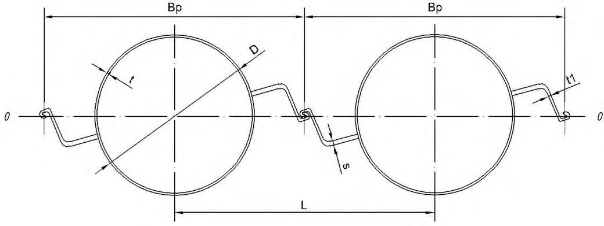
,
,
- эпюры
Рисунок Г.3 - К расчету пассивного давления грунта при наличии откоса на поверхности перед стенкой
Эпюру 3 принимают в зависимости от схемы очертания поверхности грунта перед сооружением:
- для схемы на рисунке Г.3, а, от верха расчетной плоскости до точки 0, расположенной на глубине d , - по эпюре 1 , ниже - по эпюре 2 ;
- для схемы на рисунке Г.3, б от верха расчетной плоскости до точки 0 (точка пересечения эпюр 1 и 2 ) - по эпюре 2 , ниже - по эпюре 1 .
Г.18 Интенсивность вертикальной составляющей пассивного давления грунта рpv определяют по формуле
где pp - интенсивность горизонтальной составляющей пассивного давления грунта, кПа.
Г.19 Горизонтальная Ер и вертикальная Еpv составляющие равнодействующей пассивного давления грунта определяются площадью эпюр интенсивности давления грунта.
Г.20 Интенсивность давления грунта в состоянии покоя при горизонтальной поверхности грунта на вертикальную расчетную плоскость определяют как активное давление в соответствии с указаниями Г.1, Г.8 при коэффициенте горизонтальной составляющей активного давления грунта, равном коэффициенту 0.
Г.21 Коэффициент бокового давления грунта в состоянии покоя 0 определяют по формуле
где - коэффициент поперечной деформации грунта, принимаемый при отсутствии опытных данных по СП 23.13330.
СП 287.1325800.2016
ДПриложение Д (рекомендуемое). Расчет размеров массивов для причальных сооружений из кладки массивов равной массы
Д.1 Массу обыкновенных бетонных массивов рекомендуется принимать равной грузоподъемности плавучего крана при среднем вылете его стрелы.
Д.2 Число курсов в кладке N равной массы выбирают из интервала
здесь h K - высота кладки массивов, м;
б - удельный вес бетона, кН/м³ ;
G б - вес массивов, кН.
Примечание - В случае если в интервал (Е.1) не попадает целое число, например 3,05 N 3,98, то принимают ближайшее целое число, т. е. N = 4.
- Д.3 Поперечный профиль разбивают на N равновысоких элементов и вычисляют их площади. В случае N > 3 необходимо все значения площадей свести к трем значениям: A 1, A 2, A 3.
Примечания
1 Предполагается, что А 1 < A 2 < A 3 .
- 2 Выбор A 1 , A 2 и A 3 следует проводить с таким расчетом, чтобы элементы с одинаковыми площадями не оказались смежными.
- 3 В тех случаях, когда в пределах каждого элемента отношение максимальной ширины стенки к минимальной больше 1,5, следует проводить операции, описанные в Д.4, но не с площадями, а с произведениями площади на максимальную ширину соответствующего элемента.
- Д.4 Секцию причальной стенки целесообразно компоновать из трех типов массивов. Число массивов в соответствующих рядах а , b и с ( a < b < с) должно быть выражено целыми взаимно простыми числами в целях исключения совпадения швов внутри секции.
Д.5 Для определения сочетания числа массивов в рядах вычисляют функцию
для комбинаций чисел а , b и с , приведенных в таблице Д.1.
Таблица Д.1
| Вариант | а | b | c | Вариант | а | b | c |
|---|---|---|---|---|---|---|---|
| 1 | 2 | 3 | 5 | 7 | 4 | 5 | 9 |
| 2 | 3 | 4 | 5 | 8 | 4 | 7 | 9 |
| 3 | 3 | 4 | 7 | 9 | 5 | 6 | 7 |
| 4 | 3 | 5 | 7 | 10 | 5 | 7 | 8 |
| 5 | 3 | 5 | 8 | 11 | 5 | 7 | 9 |
| 6 | 4 | 5 | 7 | 12 | 7 | 8 | 9 |
В качестве окончательного принимают вариант, для которого функция Ф имеет минимальное значение.
Д.6 Размеры блоков по направлению длины секции вычисляют по формулам
Необходимо округлить величину m с точностью до 0,01 и выдерживать следующие условия:
- 𝑚 ≥ 0,6 𝑎 √0,001𝐺б 3 - в случае, если в кладке имеются смежные ряды, в которых ; число массивов равно b и с
- 𝑚 ≥ 0,6 𝑏 √0,001𝐺б 3 - в случае, когда отсутствует предыдущее условие и имеются смежные ряды, в которых число массивов равно а и с ;
- 𝑚 ≥ 0,6√0,001𝐺б 3 - в случае, когда кладка компонуется из двух типов массивов;
- величина допустимого перекрытия швов в кладке в направлении длины стенки, определяемая по формуле
где ∆ ∗ -среднее значение перекрытия швов, зависящее от класса бетона и грузоподъемности кранового оборудования, мм; принимают по рисунку Д.1; k - коэффициент надежности перекрытия швов; принимают по рисунку Д.2; kN - коэффициент, зависящий от числа курсов кладки N , принимают по таблице Д.2. где
СП 287.1325800.2016
Таблица Д.2
| Число курсов N | K N |
|---|---|
| 2 | 0,47 |
| 3 | 0,66 |
| 4 | 0,83 |
| 5 | 1,00 |
| 6 | 1,16 |
| 7 | 1,31 |
| 8 | 1,47 |
| 9 | 1,61 |
| 10 | 1,76 |
Величину допустимого перекрытия швов в кладке в направлении ширины стенки рекомендуется принимать равной 1,5 .
Рисунок Д.1 Графики зависимости параметра Δ* от класса бетона и грузоподъемности крана G б
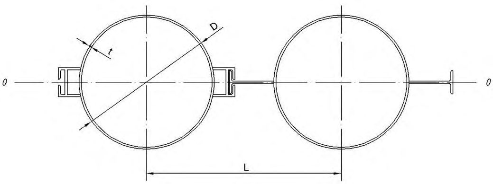
Рисунок Д.2 - График зависимости коэффициента надежности перекрытия швов
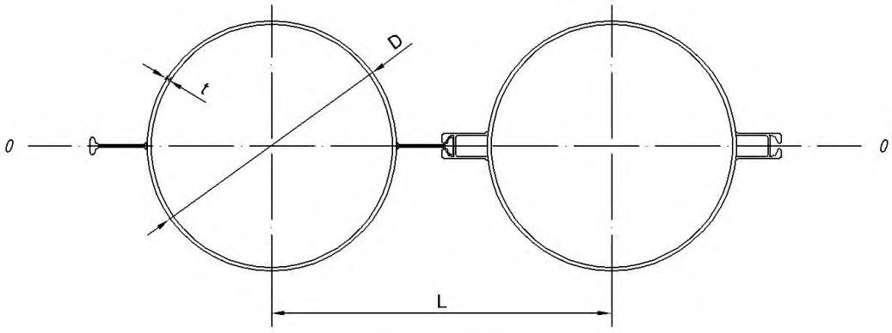
где
СП 287.1325800.2016
Д.7 Размеры массивов по направлению ширины стенки следует определять по формулам:
Примечания
1 Допускается применение массивов со скошенными гранями.
- 2 Любые изменения ширины массива следует проводить с таким расчетом, чтобы площадь его торца составляла величину
ЕПриложение Е (рекомендуемое). Расчет стенок больверка на нагрузки от навала судна при подходе к сооружению
Е.1 Расчет стенок заанкеренного больверка на нагрузки от навала судна проводится при условии, что
где F - расчетная нагрузка от навала судна, кН/м, воспринимаемая 1 м сооружения по длине;
R а - расчетная анкерная реакция, кН/м, полученная статическим расчетом в соответствии с требованиями раздела 11.
Расчет лицевой стенки обычного больверка (безанкеренного, заанкеренного) из металлического шпунта на нагрузки от навала судна допускается не проводить.
Е.2 Нагрузку от навала судна F следует определять по формуле
где U с - перемещение сооружения в месте навала судна от действия единичной нагрузки, м/кН (Е.3);
Fq - расчетная горизонтальная нагрузка от навала судна при подходе к сооружению, кН, определяемая в соответствии с требованиями СП 38.13330;
U 0 - перемещение сооружения в месте навала судна без учета распределяющего влияния надстройки и разгрузочной платформы от действия единичной нагрузки, м/кН (Е.4).
Е.3 Перемещение сооружения U c определяют по формуле
где -величина, м, определяемая по формуле
здесь l d - расчетная длина надстройки и платформы, равная 1 м;
В н - жесткость сечения монолитной надстройки и разгрузочной платформы относительно вертикальной оси, кН м² , определяемая в соответствии с требованиями СП 41.13330 для случая кратковременного действия нагрузки.
Е.4 Перемещение сооружения U 0 определяют по формуле
СП 287.1325800.2016
где А, Б - коэффициенты, определяемые по графику на рисунке Е.1 в зависимости от обобщенного показателя ; hd - высота, м, от точки приложения горизонтальной нагрузки F (середина высоты отбойного устройства) до точки, расположенной на глубине 0,67 d л от дна ( d л - расчетная глубина погружения лицевой стенки больверка).
Рисунок Е.1 - К расчету перемещения U 0 сооружения от навала судна
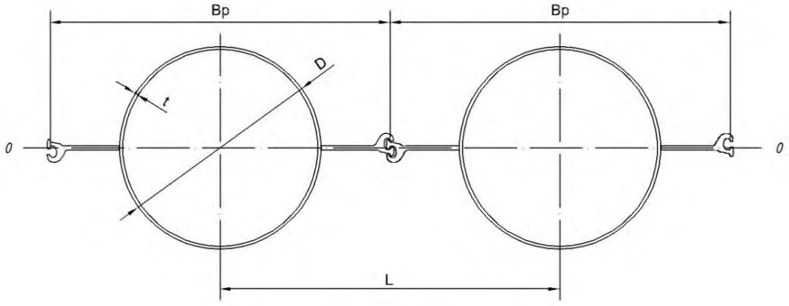
Обобщенный показатель определяют по формулам:
- для обычного больверка
- для экранированного больверка
где Е з - модуль деформации грунта засыпки, принимаемый равный 2,5∙10 4 ;
В л, В э i -жесткость сечения элементов соответственно лицевой и экранирующих стенок больверка, кН·м² , отнесенная к 1 м по длине сооружения и определяемая в соответствии с требованиями СП 41.13330 и для случая кратковременного действия нагрузки.
Е.5 При построении расчетной схемы для определения дополнительного изгибающего момента в лицевой стенке обычного больверка необходимо:
- построить эпюру превышения реактивного давления грунта над активным;
- определить часть нагрузки F , необходимой для реализации нагрузки от превышения реактивного давления грунта над активным.
Е.6 Реактивное давление грунта, вызванное нагрузкой от навала судна F , допускается определять упрощенным приемом в зависимости от обобщенного показателя (рисунок Е.2, а, б).
Рисунок Е.2 - К расчету реактивного давления грунта на стенку при навале судна при α ≥ 0,5 (а) и α ≤ 0,1 (б)
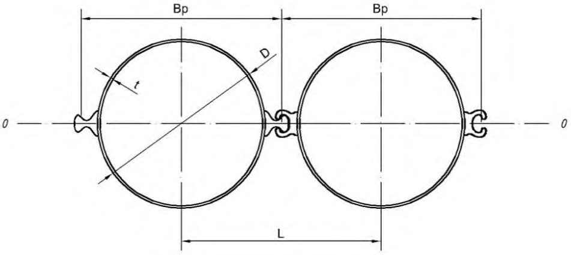
При 0,5 (рисунок Е.2, а) из точки С , расположенной на расстоянии 0,33 h d от точки приложения нагрузки F , проводят прямую до пересечения с границей эпюры пассивного давления грунта со стороны засыпки так, чтобы было выполнено условие
где Еr - равнодействующая реактивного давления грунта, кН/м;
, м. hr - плечо равнодействующей Еr относительно точки О
При d 0,1 (рисунок Е.2, б) проводят аналогичное построение из точки С , расположенной на расстоянии 0,67/ hd от точки приложения нагрузки F .
СП 287.1325800.2016
Пассивное давление грунта pр определяют в соответствии с требованиями раздела 8 и приложения Г при коэффициенте р без учета трения грунта о стенку.
Е.7 Эпюра превышения реактивного давления грунта над активным приведена на рисунке Е.3, а.
Активное давление грунта pa определяют в соответствии с требованиями раздела 8 и приложения Г.
Е.8 Нагрузку F (часть нагрузки F) следует определять из уравнения равновесия моментов всех сил относительно точки O рисунок Е.3, б) по формуле
где Е - равнодействующая нагрузки от превышения реактивного давления грунта над активным, кН/м; hЕ - плечо равнодействующей Е относительно точки О , м;
Рисунок Е.3 - Эпюра превышения реактивного давления грунта над активным (а), схема к определению нагрузки F (б) и расчетная схема (в)
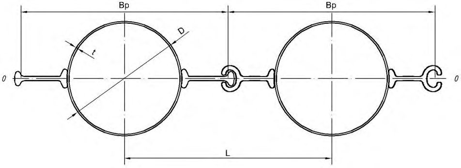
Е.9 Расчетная схема для определения дополнительного изгибающего момента в лицевой стенке больверка приведена на рисунке Е.3, в.
Дополнительные изгибающие моменты М л, кН м/м, определяют обычными методами строительной механики.
Е.10 Дополнительные изгибающие моменты в стенках экранированного больверка следует определять по формуле
где Вi - жесткость сечения элементов соответствующей стенки, кН м² , отнесенная к 1 м по длине сооружения;
М у - дополнительный изгибающий момент, кН м/м, полученный расчетом условной стенки, заменяющей экранированный больверк.
Е.11 Условная стенка (рисунок Е.4) располагается ниже отметки низа разгрузочной платформы за ее тыловым обрезом и имеет жесткость, равную суммарной жесткости сечений элементов лицевой и экранирующих стенок больверка.
Расчет условной стенки следует выполнять аналогично расчету лицевой стенки больверка (Е.5-Е.9) на нагрузку от навала судна F. При этом следует учитывать:
- активное и пассивное давление грунта со стороны засыпки следует определять с учетом веса грунта выше отметки низа разгрузочной платформы;
- обобщенный показатель следует определять по формуле (Е.7) при высоте hd , равной расстоянию от отметки низа разгрузочной платформы до точки, расположенной на расстоянии 0,67 d э i от дна ( d э i - расчетная глубина погружения соответствующей экранирующей стенки).
Примечание - В случаях, когда глубина у причала превышает естественную глубину, при которой проводилось погружение элементов стенок более чем на 50 %, при определении высоты hd следует принимать расчетную глубину погружения соответствующей стенки d э i от уровня естественного дна.
Е.12 Дополнительные усилия (изгибающие моменты) в элементах стенок больверка от навала судна суммируются с усилиями, полученными статическим расчетом лицевой и экранирующих стенок больверка в соответствии с требованиями раздела 11.
СП 287.1325800.2016
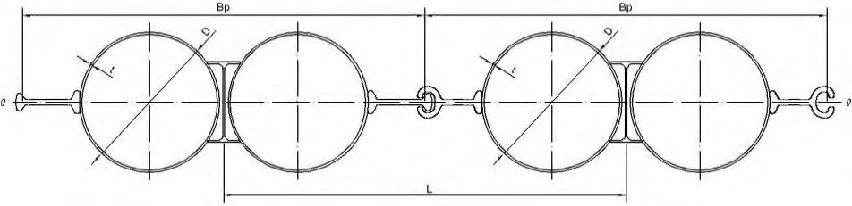
Примечание - См. обозначения в Е.4, Е.10.
Рисунок Е.4 - К расчету дополнительных моментов в стенках экранированного больверка при навале судна
ЖПриложение Ж (рекомендуемое). Проверка устойчивости массива грунта, обеспечивающего анкерное крепление сооружения типа больверк
Ж.1 Устойчивость массива грунта АВСД (рисунок Ж.1), расположенного между лицевой (экранирующей) стойкой больверка и анкерной опорой, на плоскости скольжения АВ обеспечивается при выполнении условия
где R a - расчетная анкерная реакция, кН/м, полученная статическим расчетом в соответствии с разделом 11;
R м -равнодействующая горизонтальных сил, кН/м, действующих на массив грунта АВСД (Ж.3).
Ж.2 Плоскость скольжения АВ (см. рисунок Ж.1) следует проводить через точку, расположенную на уровне условного пролета лицевой (экранирующей) стенки, и подошву анкерной опоры.
Условный пролет стенки больверка определяют по 11.3.19 или статическим расчетом по специальной программе.
Примечание - См. обозначения в Ж.1, Ж.3 и Ж.4.
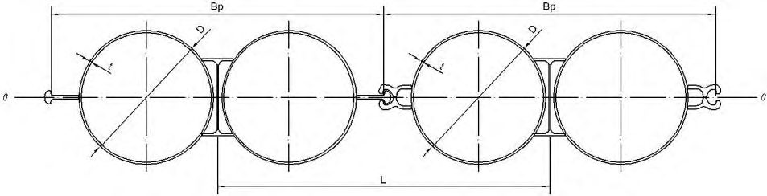
Рисунок Ж.1 - К расчету устойчивости массива грунта перед анкерными опорами больверка
Ж.3 Равнодействующую горизонтальных сил R следует определять по формуле
СП 287.1325800.2016
где Еа - горизонтальная составляющая активного давления грунта со стороны лицевой стенки, кН/м;
Gi - вес элемента массива грунта, кН/м, определяемый с учетом Ж.4; ci, i - удельное сцепление, кПа, и угол внутреннего трения грунта, град, соответственно в основании элемента массива грунта; bi - ширина рассматриваемого элемента массива грунта, м;
- угол наклона плоскости скольжения к горизонтали, град;
Еa 0 - горизонтальная составляющая активного давления грунта со стороны анкерной опоры, кН/м.
Ж.4 Массив грунта АВСД следует делить на элементы массива таким образом, чтобы основание каждого элемента было однородным (см. рисунок Ж.1).
Вес элемента массива грунта Gi в тех случаях, когда угол наклона плоскости скольжения в основании массива к горизонтали больше угла внутреннего трения грунта i , следует определять с учетом эксплуатационных нагрузок на территории причала.
СП 287.1325800.2016
Библиография
- [1] Федеральный закон от 29 декабря 2004 г. № 190-ФЗ «Градостроительный кодекс Российской Федерации»
- [2] Федеральный закон от 3 июня 2006 г. № 74-ФЗ «Водный кодекс Российской Федерации»
- [3] Федеральный закон от 31 июля 1998 г. № 155-ФЗ «О внутренних морских водах, территориальном море и прилегающей зоне Российской Федерации»
- [4] Федеральный закон от 8 ноября 2007 г. № 261-ФЗ «О морских портах в Российской Федерации и о внесении изменений в отдельные законодательные акты Российской Федерации»
- [5] Федеральный закон от 10 января 2002 г. № 7-ФЗ «Об охране окружающей среды»
- [6] Федеральный закон от 27 декабря 2002 г. № 184-ФЗ «О техническом регулировании»
- [7] Федеральный закон от 30 декабря 2009 г. № 384-ФЗ «Технический регламент о безопасности зданий и сооружений»
- [8] Постановление Правительства Российской Федерации от 2 ноября 2013 г. № 986 «О классификации гидротехнических сооружений»
- [9] Постановление Правительства Российской Федерации от 12 августа 2010 г. № 620 «Технический регламент о безопасности объектов морского транспорта»
- [10] СНиП 3.07.02-87 Гидротехнические морские и речные транспортные сооружения
- [11] СП 52-105-2009 Железобетонные конструкции в холодном климате и на вечномерзлых грунтах
- [12] ВСН 311-89 Монтаж стальных вертикальных цилиндрических резервуаров для хранения нефти и нефтепродуктов объемом от 100 до 50 000 м³
- [13] ВСН 5-84 Применение природного камня в морском гидротехническом строительстве
- [14] РД 31.3.01.01-93 Руководство по технологическому проектированию морских портов
- [15] РД 31.3.05-97 Нормы технологического проектирования морских портов
- [16] РД 31.35.01-80 Рекомендации по антикоррозионной защите морских портовых сооружений, предназначенных для перегрузки химических грузов
- [17] РД 31.35.07-83 Руководство по электрохимической защите от коррозии металлоконструкций морских гидротехнических сооружений в подводной зоне СП 287.1325800.2016
- [18] РД 31.35.09-85 Инструкция по определению скорости равномерной коррозии металлоконструкций в морских портах
- [19] РД 31.1.02-04 Правила технической эксплуатации подъемно-транспортного оборудования морских торговых портов
- [20] РД 31.82.01-95 Требования безопасности труда, которые должны учитывать при проектировании новых, реконструкции и модернизации действующих морских портов, перегрузочных комплексов и отдельных объектов порта
- [21] РД 31.82.10-81 Методика определения техники безопасности технологических схем погрузочно-разгрузочных работ в морских портах
- [22] РД 31.31.45-87 Инструкция по проектированию гидротехнических сооружений морских паромных переправ
- [23] РД 31.35.10-86 Правила технической эксплуатации портовых сооружений и акваторий
- [24] РД 31.31.43-86 Указания по проектированию подпричального откоса и тылового сопряжения набережных-эстакад, подверженных интенсивному волнению
- [25] РТМ 31.3013-77 Руководство по расчету морских гидротехнических сооружений из оболочек большого диаметра
- [26] РТМ 31.3015-78 Руководство по испытаниям свай-оболочек осевыми вдавливающими нагрузками и оценке их несущей способности
- [27] РТМ 31.3016-78 Указания по проектированию больверков с учетом перемещений и деформаций элементов
- [28] П-01-72 Методические рекомендации по определению динамических свойств грунтов, скальных пород и местных строительных материалов
- [29] Методические рекомендации по расчету и проектированию причальных сооружений из оболочек большого диаметра. - М.: ЦНИИС, 1986
- [30] Пособие по производству и приемке работ при строительстве новых, реконструкции и расширении действующих гидротехнических морских и речных транспортных сооружений: Пособие к СНиП 3.07.02-87. - М.: ЦНИИС, 1991
- [31] СТО 01393674-008-2014 Бетонные и железобетонные конструкции транспортных сооружений. Защита от коррозии \_\_\_\_\_\_\_\_\_\_\_\_\_\_\_\_\_\_\_\_\_\_\_\_\_\_\_\_\_\_\_\_\_\_\_\_\_\_\_\_\_\_\_\_\_\_\_\_\_\_\_\_\_\_\_\_\_\_\_\_\_\_\_\_\_\_\_\_\_\_\_\_\_\_\_\_\_\_\_\_\_\_\_\_\_\_\_\_\_\_\_\_\_